Ambientación para SWADE
Mil y Un Ghūles
Aventuras de horror cósmico
en los cuentos de las Mil y Una Noches
Ver. 0.2.2
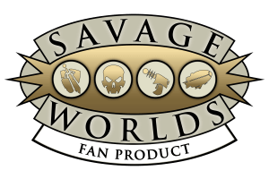
VERSIÓN EN PDF
Licencia de uso
La presente obra se encuentra bajo la licencia Creative Commons Atribución 4.0 Internacional (CC BY 4.0)
(https://creativecommons.org/licenses/by/4.0/deed.es).
Puedes usar este contenido en cualquier forma que te permita la licencia incluso comercial, siempre que incluyas
el siguiente texto de atribución:
Este trabajo está basado en la ambientación para Savage Worlds Mil y Un Ghūles creada por
Jorge Monclús Fernández (Gwannon) y está disponible de forma gratuita en https://1001ghules.gwannon.com
y el código original puede obtenerse en https://github.com/gwannon/1001Ghules.
Está licenciada para nuestro uso bajo una licencia Creative Commons Atribución 4.0 Internacional
cuyo texto legal puede verse en https://creativecommons.org/licenses/by/4.0/legalcode.es.

This game references the Savage Worlds game system, available from Pinnacle Entertainment
Group at www.peginc.com. Savage Worlds and all associated logos and trademarks are
copyrights of Pinnacle Entertainment Group. Used with permission. Pinnacle makes no
representation or warranty as to the quality, viability, or suitability for
purpose of this product.
Y si ...
¿Y si Abdul Alhazred hubiera escrito las Mil y Una Noches?
Abdul Alhazred es uno de los personajes más importantes de todos los Mitos de Cthulhu,
ya que es el autor del más infame de los libros, Al Azif (العزيف) más conocido por todos
como el Necronomicón.
Y si en vez del Necronomicón hubiera escrito las Mil y Una Noches ...
Y si el genio de la lámpara fuera un maligno y todopoderoso avatar de Nyarlathotep que
tergiversa todos tus deseos para hacerlos mortales ...
Y si los 40 ladrones fueran un culto de asesinos adoradores de Hastur ...
Y si la ave de Roc con la que Sinbad escapó de una isla desierta fuera un shantak ...
Y si las alfombras mágicas fueran en realidad pólipos volantes al servicio de sus superiores ...
Y si durante la milésima primera noche Scheherazade sacó una jambia, cortó el cuello del sultán
y huyo de su palacio ...
Sigue leyendo y descúbrelo ...
El mundo de las
tenebrosas 1001 noches
En esta sección vamos a ver de una forma muy general el mundo de las historias de horror cósmico de
las 1001 noches. Explicaremos como son las 1001 noches escritas por el árabe loco de Abdul Alhazred
y como se integran los Mitos de Cthulhu en la cosmología de todos estos cuentos populares.
¿Cómo usar este libro?
Ya que vamos a movernos entre dos mundos literarios muy diferentes, los Mitos De Cthulhu y los cuentos
de las 1001 noches, hay un sistema visual para diferenciar los diferentes contenidos.
Tenemos extractos de las mil y una noches originales y extractos de la versión que habría escrito Abdul Alhazred
que son una mezcla de las 1001 noches con las descripciones de H. P. Lovecraft.
Aquí encontraras extractos de los cuentos de las Mil y Una Noches originales.
Aquí encontraras extractos de los cuentos de las Mil y Una Noches escritos
de Abdul Alhazred.
Además, todos los textos que supongan reglas y sistemas de juego estarán dentro de cajas como esta.
Aquí encontrarás reglas y sistemas de juego.
Los nombres de personas, objetos o lugares a veces tienen paréntesis. Dentro de los paréntesis está
su referencia a los Mitos. Por ejemplo, si vemos "Gente del mar (Profundo)" sabemos que la Gente del
mar, una especie de sirenas, hace referencia a los Profundos de los Mitos de Cthulhu.
Por ultimo, para agilizar las consultas, todos los lugares, los objetos y los seres de esta
ambientación tienen referencias al título del cuento de las 1001 noches y el número de noche
donde se mencionan.
Abdul Alhazred
***
Los Yinns
***
Los yinns tienen libre albedrío y, por tanto, pueden ser buenos o malos y ser o no ser creyentes.
Relaciones sociales
y me dijo: “¿No reconoces a tu esposa? Te he salvado de la muerte con ayuda
del Altísimo. Porque has de saber que soy una efrita. Y desde el instante en que te vi,
te amó mi corazón, simplemente porque Alah lo ha querido, y yo soy una creyente en Alah
y en su Profeta, al cual Alah bendiga y preserve. Cuando yo me he acercado a ti en la
pobre condición en que me hallaba, tú te aviniste de todos modos a casarte conmigo.
Y yo, en justa gratitud, he impedido que perezcas ahogado. En cuanto a tus hermanos,
siento el mayor furor contra ellos y es preciso que los mate”.
Referencia: Cuento del segundo jeque (n. 2)
Dentro de su libre albedrío, son libres para tener las relaciones sexo-afectivos que quieran
con quien quieran y definirse en el género que quieran.
También pueden tener relaciones sexo-afectivas de cualquier tipo con humanos. De hecho, son famosos
los tratados de juristas medievales estableciendo leyes que rigieran, las bodas, las separaciones o las
herencias de los yinns.
Sociedad
***
Gastronomía
***
Títulos nobiliarios
En el mundo de las 1001 noches hay una serie de títulos que debemos tener en cuenta, ya que cada uno supone
unos deberes y obligaciones.
Aquí tienes un listado de esos títulos ordenados de más a menos poder.
- Califa: ***
- Malik, a: ***
- Emir, a: Este título se usa con personas que ostentan altos cargos militares o que gobierna una
provincia. También puede usarse el término walí.
- Sátrapa: Como el título anterior, hace referencia a quien gobierna una provincia en Persia.
Tiene en castellano connotaciones de mal gobernante, pero no se aplica en este caso.
- Sultán, ana: ***
- Nizam: ***
- Visir: ***
- ***: ***
Otros títulos que puedes usar y que tienen cierta consideración social son:
- Kadi: También llamados cadí. Es el título que se da a personas encargadas de impartir justicia.
- Jerife: También conocido como cherif o sharif. Son descendientes del profeta Mahoma y es por ello
que tienen cierta distinción social.
- Jeque: Jeque es el término que se usa para definir a la persona anciana y sabia a la que se consulta
sobre diversos temas.
- Sidi: Sidi o sayyid es un título de respeto para referirte a tus superiores. Un genio servidor usaría
este título con la persona a la que debe servidumbre.
Ley y justicia
***
El Shatranj
El shatranj es una forma previa del ajedrez de origen persa. Este juego es el preferido
de las clases pudientes, que les permite distinguirse de la calaña que juega a los dados.
***
A diferencia de otros juegos, en el shatranj no hay suerte es todo estrategia, con lo quebrada
se hace uso de Tácticas en vez de Apostar. De hecho, las ventajas, objetos, hechizos que dan pluses
a Tácticas también se usan para jugar al shatranj.
Ciudades
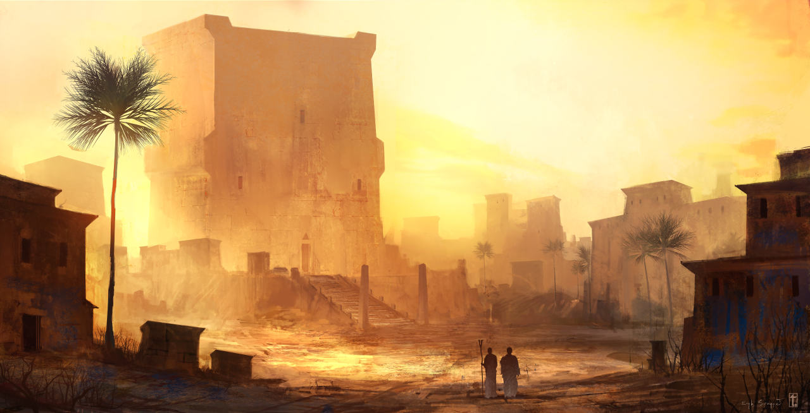
***
Zonas de las ciudad
***
Medina
La medina es la parte más antigua de la ciudad y solía estar rodeada por una muralla.
Los arrabales
En contraposición a la Medina, tenemos a los arrabales, los barrios residenciales que rodean a la medina.
Bazares y zocos
Normalmente localizados en la medina, son el centro neurálgico de la ciudad. ***
La principal diferencia entre el zoco y el bazar es que el zoco está formado por un conjunto de calles abiertas
que a veces están cubiertas, mientras que el bazar es un lugar cerrado, la mayoría de espacios está cubierto
y las puertas de acceso se cierran cuando termina la actividad del día.
Maristán
El maristán era el hospital donde cuidar enfermos ***.
"¡Oh nuestro señor sultán, y tú, juicioso visir, y tú, antiguo compañero mío de cadena! Sabed que el motivo
de mi encarcelamiento en este maristán es todavía más sorprendente que el que conocéis ya, porque si este compañero mío
fué encerrado como loco sin estarlo, fué por culpa suya y a causa de su credulidad y confianza en sí mismo. ¡Pero si yo
he pecado ha sido precisamente por el exceso contrario, como vais a ver, siempre que queráis permitirme proceder con orden!"
Y el sultán y su visir y su nuevo chambelán, que era el antiguo loco primero, contestaron de común acuerdo: "¡Desde luego!"
Y el visir añadió: "Por cierto que, cuando más orden pongas en tu relato quedaremos mejor dispuestos para considerar que
estás comprendido injustamente en el número de los locos y los dementes".
Referencia: Historia del segundo loco (n. 837)
Pero también servía para encerrar a las personas locas y perturbadas.
***
Alcazar
***
Mezquita
***
Viajes y comercio
***
Las caravanas
***
Los khans
Khan es el nombre genérico para las posadas de los caminos. ***
El desierto
***
Los primigenios y los dioses exteriores
***
Bahamut (Cthulhu)
***
Baba Daryä y Bu Diryan (Dagón, Hydra)
***
*** (Yog-Sothoth)
***
*** (Yig)
***
*** (Shub-Niggurath)
***
Suc'Naath
Suc'Naath es uno de los dioses malditos y descerebrado que bailan desenfrenadamente al son
de flautas y tambores para su señor Azathoth. Tiene forma de huracán con trazas color
violeta y dorado. Entre sus remolinos de viento se forman rostros agonizando y emite
constantemente chasquidos y chirridos terriblemente desagradables.
Su esencia está fragmentada en tres partes, una en un cometa llamado Aiin, otra en algún
tipo de estatua ubicada en la antigua Babilonia, y la última ha sido transmitida genéticamente
durante eones a través de razas prehumanas y humanas, principalmente en las tierras regadas por
el Tigris y el Eufrates, lo que conocemos como Mesopotamia. Si alguna vez se combinan estas
tres partes, Suc'Naath se liberará de su maldición.
Se dice que los portadores de sus poderes pueden realizar grandes prodigios mágicos y/o han
estado locos.
Es servido por un pequeño culto conocido como la Mano Dorada de Suc'Naath, que reúne a
intelectuales trastornados, poderosos taumaturgos perturbados y asesinos entrenados. Su
misión es adorar y liberar a Suc'Naath de la maldición que le tiene atado a su señor
Azathoth. A cambio recibirán de su dios grandes poderosos y la vida eterna.
Cultos y sectas de adoradores
***
Secta de los 40
***
La Mano Dorada de Suc'Naath
***
La progenie de la Luna Creciente
La progenie de la Luna Creciente es una secta de adoradores de Shub-Niggurath y de siervos
de los Mi-Go que habitan la desértica región de Balad Ruz, a 90 km al este de Bagdad.
Desde hace siglos hay una colonia de Mi-Go en las desérticas planicies de Balad Ruz donde tienen
una instalación minera que extrae tierras raras. Siguiendo el modus operandi de los Mi-Go,
fueron buscando gente débil de mente a la que embaucaron y convirtieron en adeptos primero y
siervos fanáticos después. Estos siervos con el paso de los años y las décadas asumieron las ideas
religiosas de sus amos Mi-Go y empezaron a adoran a los mismos dioses que ellos.
Era inevitable que con todo esto su adoración se convirtiera en un culto de seguidores
de Shub-Niggurath que se autodenominó la Progenie de la Luna Creciente. No adoran directamente a
Shub-Niggurath, sino que le adoran a través de una versión primigenia y depravada de Astarte,
la antigua deidad cananea del amor, el sexo y la fertilidad pero también de la guerra. Los primeros
cultistas eran incapaces de asumir todas las implicaciones que suponía Shub-Niggurath y le crearon
un avatar más asumible a sus mentes con la figura de una diosa Astarte caótica que exigía ritos
sanguinarios y sexuales.
Está secta sirve como agentes humanos a los Mi-Go evitando principalmente que el resto
de la gente meta sus narices en los territorios donde los Mi-Go extraen sus metales extraños.
Con los años se han radicalizado, convirtiendo el asesinato su principal forma de
interactuar con los problemas y los posibles intrusos.
La secta está también muy militarizada y ha conseguido meter agentes en el ejercito del
Califa de Bagdad, incluso en sus altas esferas.
***
Ibrahim Ibn Jibril, sumo sacerdote de la Progenie
El sumo sacerdote del culto es Ibrahim Ibn Jibril, que a su vez es el general del ejercito del
Califa de Bagdad. se le tiene en gran estima por su numerosas batallas con los enemigos del califa
en varias ocasiones
Lugares de culto y refugios
***
Rituales
***
Situación actual
Dentro de los planes de mejoras públicas del califato está crear nuevas rutas comerciales. Una
de esas rutas pasa por el territorio de los Mi-Go y va a suponer más tráfico de personas y mercancías
por su zona. Eso supone más gente husmeando en el territorio, soldados protegiendo los caminos contra
los bandidos y seguramente terminarán construyéndose khans.
Estas noticias no agradan a los amos Mi-Go y esto ha hecho que los adeptos de la secta estén buscando
modos de boicotear los planes del califato.
Reglas de ambientación
Toques de ambientación
Hay una serie de conceptos que son importantes para que tus aventuras tenga un
toque a las Mil y Una Noches y le resulte diferente a tu mesa. Son cosas pequeñas pero que creo
sinceramente que pueden hacer las sesiones diferentes.
En esta ambientación de las 1001 noches como contador de historias no serás master o DJ
sino Scheherazade y las personas de tu mesa serán shahriars, en referencia al sultán al que
Scheherazade le contaba cada noche un cuento.
Nos referiremos como "noche" a cada sesión y como cada noche tienes 3 benis para usar deberías
llamarlos "deseos". De forma que cuando tus shahriars gasten un beni digan "Voy a gastar un deseo".
Como Scheherazade, todas las primeras sesiones de un cuento salvaje deberían empezar con:
Y Scheherazade dijo: ¡oh rey afortunado! Creo que ha llegado el momento de
contaros la historia de "Título del cuento salvaje"
Y Scheherazade dijo: No creas ¡oh rey afortunado! que ninguna historia
es comparable a "Título del cuento salvaje"
El resto de sesiones deberían empezar con:
Pero cuando llego la X.ª noche ella dijo: He llegado á saber, ¡oh rey afortunado! que ...
Es interesante que lleves la cuenta del número de noche o si no invéntatelo.
Deberías acabar cada sesión con:
En este momento de su narración, Scheherazade vió aparecer la mañana,
y se calló discreta.
Los cuentos deberían acabar con frases tales como:
Y Scheherazade dijo: ¡Oh rey! veo que este cuento os ha satisfecho gratamente, pero nada
es comparable con el que quiero contarte la proxima noche.
Y Scheherazade dijo: Cuan grato ¡oh rey! es ver que mi cuento os ha llenado de
dicha, pero espero que el cuento de la proxima noche os haga más dichoso.
De todas formas esto son solo consejos y tuya es la elección de seguirlos o no.
Creación de personaje
Hay una serie de reglas en esta ambientación que modifican las normas generales de creación
de personajes. No son muchas, ni muy complicadas, pero tienen su sentido dentro de esta extraña
ambientación. Principalmente son cambios en las habilidades y la regla de Sin parangón que hace
único a tu shahriar.
- No existen habilidades temporalmente ilógicas como Conducir, Electrónica y Ordenadores, ya que
no hay vehículos autopropulsados, equipos eléctricos u ordenadores.
- Pilotar es una habilidad que no se puede aprenderse en la creación. Solo podrá gastar
avances en ella si tenemos algún ingenio volador, por ejemplo, alfombras mágicas o caballos
mecánicos voladores.
- Todos los shahriars empiezan con habilidades de idiomas. Su idioma nativo a nivel de su Astucia
y otro idioma a su Astucia -1 nivel (mínimo d4).
- Todos los comodines empiezan con la ventaja Afinidad mágica.
Sin parangón
En las mil y una noches no hay comodín que no sea especial, siempre destacas por algo. Puedes ser
por tu astucia, por tu fuerza, por tu inteligencia, por tu belleza, etc. Para reflejar eso empiezas
con una de estas ventajas gratis, además de la ventaja por ser humano. Ten en cuenta que deberás cumplir
los requisitos para cogerla.
- Afortunado
- Callejear
- Carismático
- Belleza sin igual (ver en Nuevas ventajas)
- Fornido
- Imán de lo extraño (ver en Nuevas ventajas)
- Investigador
- Ladrón
- Lingüista
- Mandíbula de hierro
- Sentir el peligro
- Señor de las bestias
Debes ser el único que tenga esa ventaja, nadie más de la mesa podrá tener esa ventaja, ni
comprarla con avances más adelante. Esta ventaja te debería hacerte único y especial dentro de la mesa.
Como Scheherazade, puedes meter en ese listado todas las ventajas que desees, siempre que vayan a
darle un carácter único a quien la escoja. Fornido hace que seas más grande que el resto de shahriars, pero
Puntos de poder no te hace destacar por algo entre los shahriars de tu mesa.
Qareen
Todo comodín tiene un qareen, un tipo de shaitan (yinn de tipo demoníaco), que podemos definir como un gemelo
espiritual maligno. Según la tradición, se sienta sobre tus hombros y te susurra que mientas, robes y hagas
todo tipo de acciones abominables.
El qareen ofrece la posibilidad de que el deseo tenga un +4 en vez del +2 normal, pero solo se pueden usar
en acciones malvadas (a discreción de Scheherazade). Si se fracasa la tirada, el qareen tiene via libre para
poseer al comodín y obligarle a hacer actos malvados y deleznables.
Además del método anterior, también se puede ser poseído por tu qareen sacando un joker para determinar el
tipo de trastornos y su duración tras fallar alguna tirada de perdida de cordura (TPC).
Posesión
La duración de la posesión se determina tirando en la Tabla de Duración del trastorno. Si son periodos
cortos, el qareen tendrá el control durante todo el tiempo. En periodos de más de 1 día, Scheherazade podrá
elegir cuándo y dónde toma el control.
Durante la posesión, la persona poseída podrá actuar normalmente, pero cuando quiera Scheherazade podrá
tomar el control y hacer lo que desee. Los actos durante la posesión deberán ser sobre todos malignos pero
no tienen que ser siempre graves per se. Serán plenamente conscientes de los actos que han hecho durante
la posesión y sin embargo no serán conscientes de que el qareen es el culpable de las decisiones tomadas.
En el apartado Poseído por un qareen se establecen las ventajas y desventajas
que otorga el estar controlado por tu qareen.
Nuevas desventajas
Esta ambientación es un mundo muy especial que claramente va a tener sus desventajas propias, unas más centradas
en los Mitos y otras más cercanas a las 1001 noches y la mitología que le rodea.
Como se explicará más adelante, desaparecen una serie de desventajas, bien porque son sustituidas
por otras propias de la ambientación o bien porque no tienen cuadran dentro del universo de las 1001 noches:
- Escéptico (menor). Es muy difícil ser escéptico de lo sobrenatural estando rodeado de prodigios
mágicos, de yinns todopoderosos y de objetos con propiedades prodigiosas.
- Feo (menor). En las Mil y Una Noches las personas bellas son rematadamente bellas y las feas
son tremendamente feas. Es por ello que Feo como desventaja menor desaparece, quedando solo Feo como desventaja mayor.
- Pobreza. Es sustituida por Hija de un zapatero remendón (mayor).
Débil de mente (mayor)
Hay personas que no están preparadas para enfrentarse al horror y esta desventaja lo refleja. No estás
preparado para todas las terribles visiones que vas a presenciar y las horribles situaciones que vas a
experimentar. Pero por todo eso, enfrentarte al horror como vas a hacerlo es una señal de tu valor.
Todas las TPC tiene un nivel más. Es decir, una TPC de d8 será de d10 para el shahriar débil de mente.
Este nivel extra se aplica al final, después de hacer todas las cuentas y si sale que no hay tirar TPC
en realidad tira una TPC de d4. Si hay un mínimo de d4, para esta persona sería de d6.
Hija de un zapatero remendón (mayor)
Esta desventaja sustituye a Pobreza. En las historias de las 1001 noche, si eres pobre eres rematadamente pobre y
además tienes el desprecio de los ricos y poderosos que te consideran escoria.
Aladino es el hijo de un pobre zapatero remendón y su madre y él malviven hilando lana. Ali-Baba es un pobre
leñador que solo posee 3 mulas.
Esta desventaja implica las desventajas que da Pobreza, pero también supone que recibes un -2 a las
tiradas de Persuadir con gente rica y noble (que tengan ventajas como Rico o Alcurnia).
Adicionalmente, no sabes identificar cosas valiosas, ya que nunca las has conocido o usado. Puede que sepas
que algo vale mucho dinero, pero no podrás tasarlo y pueden engañarte al venderlo.
Más cerca de la locura (mayor)
Te encuentras más cerca de la locura que el resto del mundo. Tu equilibrio mental es más frágil
que el común de los mortales. Puede ser por muchas razones: genética, infancia traumática, etc. Sea como sea,
tu psique es más débil de lo normal y estás más cerca de la locura que el resto de tu equipo.
Empiezas con 3 puntos de cordura en vez de los 4 normales. Nunca podrás tener
más de 3 puntos de cordura, aunque termines una campaña con éxito y Scheherazade diga que recuperáis
todos los puntos de cordura.
Trastornos mentales
Todo el sistema de horror/cordura típica de los juegos basados en la obra de Lovecraft se basa
en trastornos mentales que vayan lastrando a tu personaje hasta acabar locos en un callejón oscuro
de Bagdad gritando a los viandantes sobre que su fin se acerca y las estrellas estarán pronto en
la posición correcta.
Todos estos trastornos mentales debemos tratarlos como desventajas y se les aplican todas las reglas
de las desventajas.
Además, de las desventajas listadas a continuación puedes usar como trastornos mentales
Avaricioso, Arrogante, Envidioso, Exceso de Confianza, Delirio, Fobia, Hábito, Manía y Sanguinario.
Amnesia y flashbacks (menor/mayor)
El cerebro de tu personaje, muy sabiamente, ha bloqueado parcialmente el recuerdo concreto de una
situación traumática (cómo le torturaron, cómo presenció como un vampiro de fuego quemaba a toda su
familia, ...). No quiere decir que no recuerde ese hecho concreto, pero solo generalmente.
Los detalles son lo que ha reprimido y todos sabemos que el demonio está en los detalles.
Esos detalles vuelven a su mente como flashbacks mostrándoles los momentos más traumáticos
del evento que produjo la amnesia, los gritos espeluznantes, el olor a sangre podrida,
los brillantes ojos del asesino, ...
En juego, supone que una vez por sesión en momentos de estrés puede sufrir esos flashbacks
fallando la tirada que vaya a hacer sin posibilidad de gastar un deseo para repetirla.
Por estrés entendemos cualquier tirada enfrentada, desde jugar al póquer a discutir
con un oponente político o tratar de entrar sigilosamente en la casa del gobernador.
Si se coge como mayor, Scheherazade podrá hacerle fallar cualquier tirada de combate
y dejarle aturdido como si le hubieran hecho una finta o un truco sucio.
Depresión (mayor/menor)
Tu PJ sufre depresión y todo se le hace cuesta arriba, tiene siempre un bajo estado de ánimo y
sentimientos de tristeza.
Si es menor al principio de cada sesión deberá
tirar un d6. Si consigue un éxito, sobrelleva la depresión hasta la próxima sesión. Si falla, pierde uno de sus
deseos hasta la próxima sesión. Si es mayor directamente cuenta con un deseo menos.
Trastorno de ansiedad generalizada (mayor/menor)
Este complejo trastorno mental consiste en una ansiedad general y continua por todos los aspectos de
la vida. Se siente una ansiedad tremenda por asuntos que no son tan importantes, se siente ansiedad
por tomar decisiones y elegir la peor, se sienten situaciones normales como más amenazantes de lo
que son e incluso se siente ansiedad por tener ansiedad.
En juego, el personaje con este trastorno recibe un -2 a todas las tiradas que
necesite para
tomar decisiones. Por ejemplo, hará una tirada de Tácticas con -2 para decidir que puerta es
mejor para atacar la cárcel local y liberar a tus compañeros.
Como mayor directamente no podrá
hacer la tirada, la ansiedad le atenazará dejándole en blanco.
Ataques de pánico (mayor/menor)
Están muy asociados con el trastorno anterior. Tu personaje sufre un miedo terrible de
repente y sin sentido ante una situación o evento normal (normal para el personaje).
Como desventaja menor, una vez por sesión Scheherazade podrá obligar a tu PJ a
hacer una tirada de Espíritu o sufrirá un terrible ataque de pánico que le imposibilitará
llevar a cabo la acción que quería hacer.
En caso de que sea mayor, no hará falta tirada, Scheherazade podrá hacer que el miedo
atenace al personaje directamente imposibilitándole seguir con la acción que deseaba hacer.
Como DJ te aconsejo que uses sabiamente esta desventaja, sobre todo en mayor. Puede ser muy
frustrante para cualquier persona no tener control de su personaje. Mi consejo es que lo uses como una
forma de encauzar a quien se salgan de madre.
TOC - Trastorno obsesivo-compulsivo (mayor)
El trastorno obsesivo-compulsivo (TOC) se caracteriza por un miedo no
deseado (obsesiones) que provocan comportamientos repetitivos (compulsiones). Por ejemplo, un miedo a
las enfermedades puede llevar a un paciente de TOC a lavarse compulsivamente las manos.
Deberás elegir una fobia menor y un hábito menor relacionado para formar el TOC de tu personaje.
Paranoia (mayor/menor)
Tu personaje está convencido de que los enemigos están en todas partes, y cree que todos están contra él.
Siempre está mirando a su espalda esperando una traición de sus compañeros o tratando de escuchar cómo
conspiran a sus espaldas.
Como desventaja menor, tienes un -1 en todas las tiradas de habilidad que exijan concentración
(como abrir cerraduras, jugar a las cartas, descifrar un código, …) cuando otros están a tu alrededor.
Si se toma como mayor, además, el -1 se aplicará a todas las tiradas de percepción, ya que
estará más preocupado desvelando conspiraciones y enemigos ocultos que en vigilar o buscar.
Megalomanía (mayor/menor)
La megalomanía se caracteriza porque la persona tiene ideas de grandeza, de manera que puede mentir,
manipular o exagerar algunas situaciones o a las personas, a fin de conseguir sus objetivos.
A nivel menor deberá elegir algo en el que quiere el mejor (el más fuerte, el más rápido,
el más rico, ...), esto hará que actúe de forma desafiante y agresiva contra las personas que es mejor
que él y obtendrá un -1 a todas las tiradas de interacción social con esas personas. A nivel mayor será
a nivel general contra toda persona que pueda ser mejor que él en algún campo en el que esté cualificado,
es decir, que tenga atributo/habilidad d8 o más.
La llamada de Bahamut (menor)
Tu mente artística e imaginativa es muy susceptible a las ondas mentales de Bahamut,
teniendo terribles pesadillas sobre este poderoso ser y su tumba acuática.
Siempre que te duermas sin tener deseos, tendrás unas horribles pesadillas que
no te dejarán dormir y tendrás un nivel de fatiga al día siguiente hasta que descanses una
noche entera teniendo un deseo y, por tanto, sin pesadillas. Durante las pesadillas podrás hacer
uso de tu habilidad de Saber de Soleimán para tratar de sacar información sobre Bahamut.
Nuevas ventajas
Como se explicará más adelante, desaparecen una serie de ventajas, bien porque son sustituidas
por otras nuevas o bien porque no tienen sentido dentro del universo de las 1001 noches:
- Atractivo
- Muy atractivo
- Kid dos pistolas
- ¡Rock'N'Roll!
Acostumbrado al horror (tipo de monstruo)
Prerrequisitos: Especial
A base de enfrentarte a un horror específico te has acostumbrado y tu cordura no sufre al estar
en su presencia. No pueden gastarse avances para conseguir esta ventaja, solo se puede conseguir
a base de superar el horror.
A efectos de juego baja 4 niveles el TPC de un monstruo. Si el TPC modificado baja
por debajo de d4 no necesitas hacer tirada de TPC. Por ejemplo, si estás "acostumbrado a los profundos"
al ver un profundo (TPC d4) no tendrás que tirar, pero si ves una horda de 1000 profundos (TCP d12+1)
solo tendrás que enfrentarse a un TPC (d6, 4 niveles menos).
Afinidad mágica
Prerrequisitos: Novato, Comodín.
Todos los comodines tienen esta ventaja gratuitamente. Representa su capacidad de usar objetos
mágicos. Los comodines son persona con un destino más grande que ellos y eso supone que pueden hacer
cosas especiales. Solo Ali-Baba podía decir "Ábrete, sésamo" y que se abriera la cueva de los 40 ladrones o solo
Aladino estaba destinado a entrar en la cueva de las maravillas y conseguir la lámpara mágica.
Activar cualquier objeto mágico y usar sus poderes, exige el gasto de un PP. Este gasto
solo se puede hacer estando consciente a no ser que el objeto diga lo contrario. Empiezas también con
tanto puntos de poder como nivel de Espíritu. Si tu Espíritu sube también tu PP.
Belleza sin igual
Prerrequisitos: Novato.
En las Mil y Una Noches las personas bellas son rematadamente bellas. Tal es su
atractivo que ni humanos, ni bestias, ni monstruos pueden evitar su hechizo. Es por ello
que no existen las ventajas Atractivo y Muy atractivo, o eres tienen una belleza legendaria
o eres del montón, solo existe Belleza sin parangón.
Esta ventaja te da un bonus de +2 a Interpretar y
Persuadir frente a humanos, bestias y monstruos inteligentes. Pero, debe cogerse una
desventaja mayor asociada a su fabulosa hermosura. Por ejemplo, ser tan Pobre que tus
padres han concertado un matrimonio de conveniencia con alguien de tu desagrado.
O puede que tener tanta belleza te haya hecho Arrogante o Cobarde.
Cuentacuentos
Prerrequisitos: Novato.
Eres un excepcional contador de cuentos, las palabras fluyen de tu boca y evocan en
la mente de tu audiencia claras y precisas imágenes de lo que estás narrando. ***
***
Imán de lo extraño
Prerrequisitos: Novato.
Todo lo extraño se siente atraído hacia ti para bien y para mal. Abres y lees el libro maldito,
te pierdes en el desierto y acabas encontrando el oasis maravilloso o al echar las redes al mar
sacas una botella con un extraño sello mágico en el tapón.
Todas las tiradas de botín en las que te veas involucrado podrás repetirlas gastando un deseo y la
mesa podrá quedarse con el mejor resultado. En caso de que haya varias personas con esta ventaja, cada uno tendrá
que gastarse un deseo y añadirá una tirada extra.
Rico como un sultán
Prerrequisitos: Legendario, Extremadamente rico.
Eres tan rico como un Sultán. No hay en la tierra nada que no puedas comprar con dinero.
Ni en mil vidas gastarías tu fortuna. Si quieres algo solo tienes que pedirlos y todos
los que te sirven se desvivirán para conseguírtelo.
Tus palacios están llenos de lujo y confort, en tu mesa solo hay los más delicados y
deliciosos platos y los mejores elixires. Vives rodeado de comodidades como camas que
parece que durmieras entre nubes.
Si le pides a un genio que te haga rico, seguramente no podría darte tal cantidad de
oro y joyas.
Trasfondo arcano (Sihr)
Prerrequisitos: Experimentado, Afinidad mágica, Especial.
El estudio de la magia y hechicería tiene un coste en cordura. Tantos años entre tomos
malditos y vapores de extraños componentes han pasado factura a tu psique. Es por ello
que esta ventaja es gratuita ya que conlleva adquirir 1 desventaja, un trastorno mental
mayor. Representan la cordura perdida en los meses y años de estudio y práctica de
la brujería.
Exige tener Afinidad Mágica, ser Experimentado y haber conseguido un grimorio
mágico que poder estudiar.
Como no exige el gasto de un avance puede cogerse cuando se quiera cumpliendo los
requisitos, pero debe cogerse entre aventuras o cuando pasen grandes lapsos de tiempo
durante los que se ha podido estudiar o practicar las enseñanzas del libro de hechizos.
Habilidad arcana: Saber de Soleimán
Poderes iniciales: 3
Puntos de poder (PP): 0 (Tiene para empezar los que otorga Afinidad mágica).
Todo personaje dispone de tantos puntos de poder diarios como su nivel de Espíritu
que recupera tras una noche de descanso (8 horas de descanso sin interrupciones). Si
gasta avances para subir su Espíritu, suben sus PP.
Nuevas habilidades
En 1001 Ghūles puedes hacer uso de todas las habilidades básicas de SWADE a excepción de habilidades
temporalmente ilógicas como Conducir, Electrónica y Ordenadores, ya que no hay vehículos autopropulsados,
equipos eléctricos u ordenadores.
Ocultismo pasa a ser parte de la habilidad Saber de Soleimán. Cosas muy sencillas como prevenir
el mal de ojo puede ser conocidas por la gente de a pie usando Conocimientos generales.
Aquí te presentamos nuevas habilidades específicas de esta ambientación.
Saber de Soleimán
El rey Soleimán (rey salomón en la tradición cristiana) fue el mas poderoso mago que se ha conocido.
Tan poderoso que, por ejemplo, era capaz de encerrar a un yinns en un recipientes y sellandolo con su símbolo.
se dice que con su ejército derroto a un hueste de 10.000 efrits. Además estudio medicina, ingeniería,
astronomia y otras ciencias para fusionarlas con sus artes mágicas.
Saber de Soleimán representa los conocimientos que tienes sobre Ocultismo en general y los Mitos de Cthulhu, los
monstruos, los hechizos, ritos, objetos, etc. y la historia que hay detrás de ellos. También puede
servirte para identificar maldiciones y quitarlas o para identificar puntos débiles de seres de los Mitos.
La gente que practica la magia no es muy dada a rebelar sus secretos y los libros que hablan sobre ello no son de
facil acceso, asi que no es muy normal que haya personas que tengan estos conocimientos.
Esta habilidad no se puede escoger en la creación del personaje. Solo mediante un tutor cono conocimientos
o el estudio de libros prohibidos y enfrentándote a los horrores de los Mitos podrás subir esta habilidad.
Reglas especiales:
- No está basada en ningún atributo. Así que su coste es como si quisiéramos subir una habilidad por
encima de un atributo. Es decir, que cuesta un avance subir un nivel de la habilidad.
- Solo puede subirse una vez por rango, como un atributo.
- Para poder subir esta habilidad, tu personaje ha debido enfrentarse a al menos una TPC o gastar
un nivel de poder de su grimorio, es decir, haber leído libro su libro mágico durante las sesiones
de juego de ese rango.
- No tiene límites, cuando se llega a d12 continuamos con +1, +2, +3, ...
Idiomas
Se hablan infinidad de lenguas en las tierras de las 1001 noches, pero los idiomas principales son el árabe
y el persa, pero veamos otras opciones que podrían ser interesantes:
- Bereber
- Chino
- Griego jónico o griego clásico. No se habla, pero hay muchas inscripciones antiguas.
- Hindú
- Turco
También tenemos otros idiomas no humanos. Son idiomas hablados por los extraños seres.
- Aklo, es una lengua secreta usada por muchos cultos adoradores de los primigenios y demás dioses exteriores.
- R'lyehiano, el idioma hablado por los habitantes de Cthulhu
- Naacal, la lengua que habla la serpigente.
Horror y cordura
El horror y la cordura sustituyen a las reglas de miedo de SWADE. Las ventajas y desventajas que afectan
al miedo (como Osado o Cobarde) no son válidas en esta ambientación y no pueden ser adquiridas por los héroes. Todo
shahriar tiene 4 puntos de cordura y si pierde todos, caerá en la locura y pasará a ser un PNJ al servicio de Scheherazade.
Cada vez que un shahriar se enfrente a un monstruo deberá hacer una tirada de enfrentada de
Astucia contra la tirada de pérdida de cordura (TPC) del monstruo. Si pasa la tirada no ocurre
nada, el shahriar ha racionalizado correctamente lo que ha ocurrido y puede actuar con normalidad.
Si falla la tirada, deberá hacer una segunda tirada de Espíritu, si saca más éxitos que la tirada TPC
simplemente quedará aturdido. Si falla, perderá un punto de cordura. Como ya hemos explicado, si pierde toda su cordura,
cederá ante el horror y la locura y pasará a ser un PNJ.
Puede evitarse la pérdida de puntos de cordura, adquiriendo un trastorno mental permanente con un máximo
de 3 trastornos permanentes o gastando todos tus deseos (mínimo 1) y adquiriendo un trastorno mental de forma temporal.
Los trastornos mentales son un tipo de desventaja y siguen sus mismas reglas. Para decidir el trastorno
deberá sacar una carta y revisar la tabla de Trastornos. Si es temporal deberá consultar la tabla de Duración del
trastorno. Los trastornos permanentes repetidos pueden apilarse si son menores, convirtiéndose en un trastorno mayor. Si
no, tendrá que volver a coger una carta nueva. Los temporales simplemente ampliarán el tiempo.
En condiciones normales, si se saca un Joker en cualquier carta relacionada con trastornos, no solo no adquieres el trastorno,
sino que recuperas un punto de cordura. Si has hecho uso de un deseo de tu qareen durante la escena, el efecto es totalmente
distinto. El shahriar es poseído de forma temporal (Tabla de Duración del trastorno) por su qareen y toma el control de sus acciones.
| Tabla de Trastornos |
|
♥ |
♣ |
♠ |
♦ |
| 2-3 |
Paranoia (menor) |
Delirio (menor) |
Fobia (menor) |
Manía (menor) |
| 4-5 |
Envidioso (menor) |
Hábito (menor) |
Fobia (menor) |
Trastorno de ansiedad generalizada (menor) |
| 6-7 |
Fobia (menor) |
Manía (menor) |
Delirio (menor) |
Fobia (menor) |
| 8-9 |
Amnesia y flashbacks (menor) |
Ataques de pánico (menor) |
Fobia (menor) |
Arrogante (mayor) |
| 10 |
Avaricioso (menor) |
Megalomanía (menor) |
Envidioso (mayor) |
Arrogante (mayor) |
| J |
Ataques de pánico (menor) |
Megalomanía (mayor) |
Avaricioso (menor) |
Fobia (mayor) |
| Q |
Trastorno de ansiedad generalizada (mayor) |
Avaricioso (mayor) |
Exceso de Confianza (mayor) |
Sanguinario |
| K |
Trastorno obsesivo-compulsivo (mayor) |
Amnesia y flashbacks (mayor) |
Ataques de pánico (mayor) |
Delirio (mayor) |
| A |
Fobia (mayor) |
Paranoia (Mayor) |
Hábito (mayor) |
Depresión (mayor) |
| Tabla de Duración del trastorno |
|
♥ |
♣ |
♠ |
♦ |
| 2 - 10 |
8 turnos |
8 minutos |
8 horas |
8 días |
| J |
10 turnos |
10 minutos |
10 horas |
10 días |
| Q |
12 turnos |
12 minutos |
12 horas |
12 días |
| K |
14 turnos |
14 minutos |
14 horas |
14 días |
| As |
20 turnos |
20 minutos |
20 horas |
20 días |
La TPC del monstruo es específica para cada shahriar, pero solo debe hacerse una tirada con cada tipo de
monstruo, aunque la cantidad sí puede modificar la TPC. Es decir, que si nos encontramos con 4 profundos
y una docena de ghūles. Cada jugador deberá hacer una tirada enfrentada contra los profundos y otra contra
los ghūles.
Modificaciones de las TPC
Las TPCs pueden ser modificadas en determinadas situaciones.
- Grandes grupos: Normalmente, los monstruos de los Mitos son seres solitarios o como mucho viven
en grupos muy pequeños, Sin embargo, hay monstruos que viven en grandes grupos y producen más o menos
locura según su número. No es lo mismo encontrarse un profundo solitario en una cueva (TPC d4) que ver
como cientos de ellos salen del agua y devoran a toda la tripulación y hunden el barco. (TPC d12). Para
los monstruos que tengan manada en su TPC deberás consultar la tabla de Grandes grupos.
- Acostumbrarse: Cada vez que pasas la tirada enfrentada de Astucia contra TPC te vas
acostumbrando a ese horror en específico. Deberás apuntar las veces que ha pasado el TPC de determinado
monstruo y hasta obtener 4 marcas, con lo que estará acostumbrado a ese horror y obtendrá la ventaja
Acostumbrado al horror. Si falla la TPC y pierde puntos de cordura o adquiere un trastorno mental
permanente o temporal, perderá una marca.
- Pásame el haschisch: Si el personaje puede prepararse para el horror al que se va a
enfrentar, por ejemplo, masticando una buena pieza de haschisch antes de entrar de noche en un
cementerio infestado de ghūles. Para poder prepararse, deberá ser consciente de alguna manera de que va
a enfrentarse al horror (por ejemplo, sabiendo que hay algo raro al otro lado de la puerta), no tendrá que
estar en una situación de estrés, por ejemplo, un combate, persecución, etc. y deberá poder pasar unas
3 rondas preparándose para el horror que se le viene encima.
- Frenesí del combate: Una vez empezado el combate, los jugadores no tendrán necesidad de hacer
TPC. La adrenalina se encargará de todo, pero tampoco se acostumbrarán al horror. Aunque si puede
pasar que el monstruo aparezca por sorpresa, les deje aturdidos y los ataque a continuación.
| Tabla de Modificación del TPC por grandes grupos |
| Tamaño de la manada |
d4 |
d6 |
d8 |
d10 |
d12 |
| hasta tamaño del grupo (0) |
d4 |
d6 |
d8 |
d10 |
d12 |
| hasta tamaño del grupo x 2 (+1) |
d6 |
d8 |
d10 |
d12 |
d12+1 |
| hasta tamaño del grupo x 5 (+2) |
d8 |
d10 |
d12 |
d12+1 |
d12+2 |
| hasta tamaño del grupo x 10 (+3) |
d10 |
d12 |
d12+1 |
d12+2 |
d12+3 |
| hasta tamaño del grupo x 20 (+5) |
d12 |
d12+1 |
12+2 |
d12+3 |
d12+4 |
| hasta tamaño del grupo x 50 (+6) |
d12+1 |
d12+2 |
d12+3 |
d12+4 |
d12+5 |
Recuperar cordura
La cordura solo se recupera entre campañas o en situaciones especiales de heroísmo excepcional. No hay
psicólogos ni psiquiatras que puedan reparar tu quebrada psique, solo enfrentarse al horror y vencerlo
puede ayudar a sanar tu mente.
Estas situaciones vendrán marcadas en la campaña. Por ejemplo, puede establecerse que salvar
a un pueblo de pescadores de ser masacrado por una horda de gentes del mar puede recuperar 1 punto de cordura.
Conseguir que Hastur no entre en nuestra dimensión podría devolver toda la cordura.
Recuerda que si sacas un Joker al elegir el tipo de trastorno y no has gastado ningún deseeo de tu qareen, r
recuperas 1 punto de cordura.
Horror y secuaces
Todos los secuaces tienen un
único punto de cordura y si lo pierden caerán inmediatamente incapacitados entre gritos de horror o saldrán
corriendo presas del miedo. Como los comodines podrán coger un trastorno en vez de perder su punto de cordura,
pero no podrás hacerlo más que una vez.
Queda a discreción de Scheherazade que le pasa al secuaz/aliado después de perder su punto de cordura.
Puede que se recupere tras el encuentro con graves trastornos mentales o no sea recuperable para el resto de la
campaña. Puede ser una buena historia secundaria tratar de recuperar la cordura de un aliado enloquecido.
Equipo
***
Armas
Puedes hacer uso de todas las armas antiguas y medievales que vienen en el manual SWADE, pero aquí te
presentamos las más icónicas para una ambientación en las 1001 noches.
| Listado de Armas cuerpo a cuerpo |
| Nombre |
Descripción |
Estadísticas* |
| Alfanje |
Es una espada curvada a una mano de hoja que se ancha hacia la punta, con filo en un solo lado. |
Espada larga |
| Cimitarra |
La cimitarra o shamsir es una hoja curva a una mano con un solo filo. |
Espada larga |
| Jambia |
Es una daga curvada con un gran nervio central. |
Cuchillo/daga |
| Shibriya |
Es una pequeña daga beduina. |
Cuchillo/daga |
* Esta columna marca las estadísticas de que arma del Manual Básico de SWADE debes usar para
cada arma de la tabla.
Dentro del combate a distancia puedes hacer uso de las armas a distancias primitivas como ondas y arcos,
pero nada de ballestas y armas de fuego.
| Listado de Armas a distancia |
| Nombre |
Descripción |
Estadísticas* |
| Arco recurvo |
Es un arco con extremidades que se curvan en dirección opuesta al arquero cuando se destensa. |
Arco largo |
| Azagaya |
Esta arma de asta primitiva y ligera se lanza con la mano (como una jabalina) o
con la ayuda de un propulsor (Distancia 4/8/16). |
Jabalina |
* Esta columna marca las estadísticas de que arma del Manual Básico de SWADE debes usar para
cada arma de la tabla.
Armas especíales
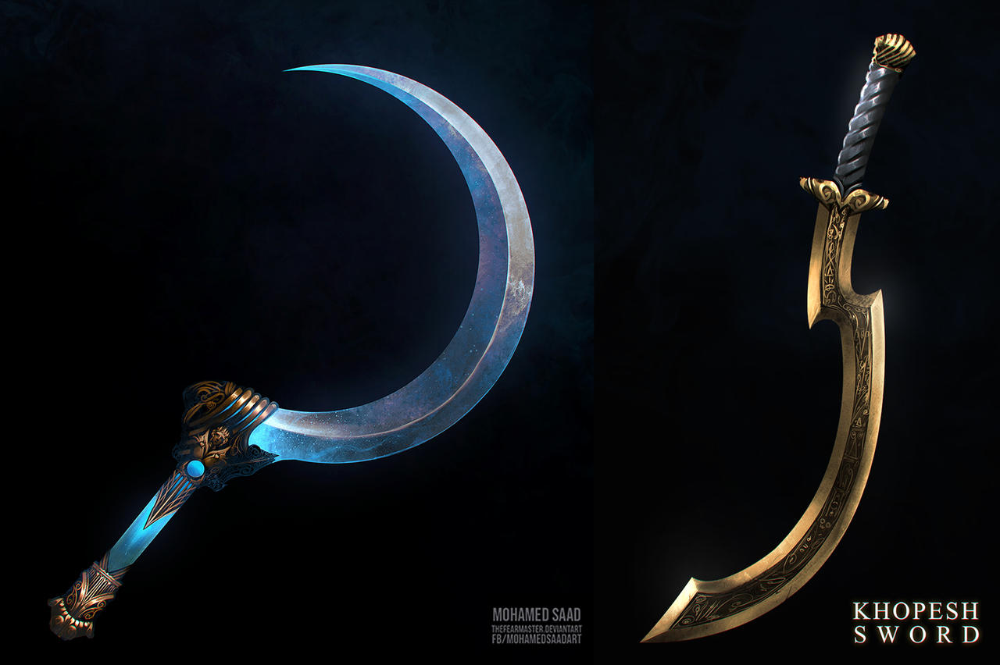
Shotel etiope
La Shotel es una espada curva originaria del cuerno de África. La curvatura de la hoja es
mayor que alfanjes y cimitarras, casi semicircular. La hoja tiene una longitud total de
aproximadamente 100 cm y la empuñadura es una pieza de madera simple sin protección.
| Shotel etiope |
| Daño |
Peso |
Coste |
| FUE+d8 |
1,5 |
350 |
| Notas: Su curva permite esquivar escudo y rodela. Niega hasta un -2 en
escudos y rodelas del enemigo. |
Khopesh
Un khopesh es un sable de hoja curva, en forma de "C" o forma de hoz con el filo en su parte
convexa, se popularizó en el Antiguo Egipto pero se usa en todo Oriente Medio.
| Khopesh egipcio |
| Daño |
Peso |
Coste |
| FUE+d10 |
1,5 |
350 |
| Notas: Su curva permite esquivar escudo y rodela. Niega un -1 en
escudos y similares del enemigo. |
Katar
***
| Katar |
| Daño |
Peso |
Coste |
| *** |
*** |
*** |
| Notas: ***. |
Tabar Shishpar
***
| Tabar Shishpar |
| Daño |
Peso |
Coste |
| *** |
*** |
*** |
| Notas: ***. |
Chakram
***
| Chakram |
| Distancia |
Daño |
PA |
CDF |
FUE Min. |
Peso |
Coste |
| *** |
*** |
*** |
*** |
*** |
*** |
*** |
| Notas: ***. |
***
Armaduras, escudos y otras protecciones
***
| Listado de Armaduras |
| Nombre |
Descripción |
Estadísticas* |
| *** |
*** |
*** |
| *** |
*** |
*** |
| *** |
*** |
*** |
* Esta columna marca las estadísticas de que armadura del Manual Básico de SWADE debes usar para
cada armadura de la tabla.
***
| Listado de Escudos y otras protecciones |
| Nombre |
Descripción |
Estadísticas* |
| *** |
*** |
*** |
| *** |
*** |
*** |
| *** |
*** |
*** |
* Esta columna marca las estadísticas de que escudo del Manual Básico de SWADE debes usar para
cada escudo o protección de la tabla.
Drogas y venenos
 Los venenos y las drogas son algo muy común y tenemos muchas opciones.
Los venenos y las drogas son algo muy común y tenemos muchas opciones.
Haschisch
Y como no estaba acostumbrado al haschisch, en cuanto se produjo el efecto en su cerebro por
la circulación de la droga, empezó por sentir una hilaridad extraordinaria, y esparció enormes carcajadas
por toda la sala.Pasado un momento, se desplomó sobre el mármol y fue presa de diversas alucinaciones, ...
Referencia: Aventuras del joven Kanmakán, hijo de Daul'Makan (n. 142)
***
Bang cretense
... "¡Oh efrit del anillo! ¿conoces las diversas especies de polvos soporíferos?" El efrit
contestó: "Es lo que mejor conozco!" Aladino dijo: "¡En ese caso te ordeno que me traigas una
onza de bang cretense, una sola toma del cual sea capaz de derribar a un elefante!" Y desapareció
el efrit, pero para volver al cabo de un momento, llevando en los dedos una cajita, que entregó
a Aladino, diciéndole: "¡Aquí tienes, ¡oh amo del anillo! bang cretense de la calidad más fina!" ...
Y se fué.
Referencia: Historia de Aladino y de la lámpara mágica (n. 769)
***
Afrodisíaco
Tomó dos onzas de zumo de copaiba china, una onza de extracto graso de cáñamo
jónico, una de cariofilina fresca, una de cinamono rojo de Serendib, diez dracmas de cardamomo
blando de Malabar, cinco de jengibre indio, cinco de pimienta blanca, cinco de pimentón de
las islas, una onza de boyas estrelladas de badián de la india y media onza de tomillo
de las montañas. Mezclólo todo diestramente, después de machacarlo y pasarlo por el tamiz,
le echó miel pura, y así formó una pasta muy compacta, a la cual añadió cinco gramos de
almizcle y una onza de huevos de pescado machacadas. Le añadió también un poco de julepe
ligero de agua de rosa, y lo puso todo en el tazón de porcelana. [...]
Apresuráse entonces a llevar el tazón al síndico Schamseddin, diciéndole: "He aquí la mixtura
soberana que endurece los compañones del hombre y espesa los jugos demasiado flúidos!" Después
añadió: "Es preciso tomar esta pasta dos horas antes de la conjunción sexual. [...] Y si con todo eso
no llegas hasta atravesar las paredes y fecundar un peñasco pelado, consiento en afeitarme la barba
y los bigotes y te permito que me escupas en la cara".
Referencia: Historia del Gano-del-Belleza (n. 251-252)
***
Otros objetos
***
Kohl
Con lo cual la buena dama vistió a Feliz-Bello con ropas de mujer que había llevado, y le
alargó los ojos con kohl, y agrandó y ennegreció el lunar de la mejilla, y después le puso brazaletes
en las muñecas, y le colocó alhajas en la cabellera cubierta con un velo de Mosul, y hecho aquello echó
la última ojeada a su tocado, y le pareció que estaba encantador así y mucho más hermoso que todas
las mujeres juntas del palacio del sultán.
Referencia: Historia de Feliz-Bello y Feliz-Bella (n. 245)
El kohl es un cosmético a base de galena (sulfuro de plomo) molida y otros ingredientes, usado por
mujeres y hombres, para oscurecer los párpados y como máscara de ojos.
Muchas veces es usado como objeto mágico que da habilidades mágicas a la persona que lo usa mientras
lo tiene aplicado y que desaparecen al quitarse.
Deseos
Como ya hemos dicho antes en "Toques de ambientación" los benis pasan a ser deseos, pero si te es muy
lioso sigue llamándolos benis. En 1001 Ghūles hay nuevos usos para los deseos (benis) en dos apartados
muy importantes de este juego, la magia y la cordura. Debes hacer comprender a tus shahriars que estos
usos normalmente deben ser reservados para momentos épicos, cuando la situación es a vida o muerte y
sobre todo si "queda bien" en la historia.
- Puedes gastar todos tus lamparas (mínimo 1) para lanzar un hechizo sin necesidad de gastar puntos de poder.
Esto supone que se pueden lanzar hechizos sin tener puntos de poder o lanzar hechizos que piden más puntos
de poder de los que tienes.
- Como se ve más adelante, se pueden gastar deseos para que los trastornos mentales no sean permanentes.
Magia Sihr
La magia o sihr en las 1001 noches es un elemento importantísimo. Hay pocas historias sin que haya
alguien que practique algún tipo de hechizo o use algún tipo de ingenio mágico. Piensa en el
simple "Ábrete, sésamo" de Alibaba o el poderoso genio que cumplía todas las órdenes de
Aladino. Sin olvidarnos de caballos mecánicos voladores o de espadas danzantes.
La magia también es algo fundamental en los Mitos de Cthulhu, pero es bastante distinta
de la magia que vemos en los cuentos. La magia de los cuentos es una magia muy
clásica que se centra en poderes muy sencillos, volar, curar, hablar con los animales,
transformar en rana, nadar como un pez, etc. Nada que ver con los terribles hechizos que presenta
el autor de Providence en sus obras. Conceptos como teletransporte, psicometria
o viajes en el tiempo no existen en la magia de las 1001 noches. Por suerte, los mitos
se encargan de introducir conceptos modernos a la magia clásica de las 1001 noches.
La mezcla de los estilos da un tipo de magia muy curioso y que puede ser muy divertida
de jugar. Piensa en alfombras voladoras que funcionan con tecnología cuasi-mágica de la gran
raza de Yith, oasis que crecen en una noche en el desierto por acción de algún oscuro y casi
desconocido primigenio o malvados hechiceros serpigente que invoca serpientes gigantes para
que te devoren.
Otra cosa que comparten ambas posturas mágicas es que el estudio de grimorios malditos y
libros de hechizos prohibidos es necesaria para avanzar en tus poderes mágicos. Un shahriar
sin acceso a su biblioteca no puede aumentar y/o mejorar sus capacidades taumatúrgicas.
Ambas magias también están basadas en rituales, formulas mágicas y componentes extraños y
raros. No es algo innato de la personas con dones mágicos, se ha de preparar y a veces con
mucho tiempo de dedicación.
***
Para poder hacer prodigios mágicos debemos tener la ventaja Trasfondo arcano (Sihr).
***
Ventajas mágicas
Veamos como afectan las ventajas mágicas normales a este trasfondo arcano.
Puntos de poder
La ventaja Puntos de poder otorga tantos puntos de poder nuevos como el Espíritu del personaje. Si
aumenta el espíritu (temporal o permanentemente) aumentan los puntos de poder.
Adquirir esta ventaja supone también el estudio de un libro de hechizo.
Nuevos poderes
La ventaja de Nuevos poderes solo podrá adquirirse tras leer un libro de hechizos
y gastará un nivel de poder de dicho libro. Si durante el avance no tuvo acceso a su
grimorio, no habrá podido estudiar nuevos hechizos y no podrá gastar el avance en nuevos
poderes. Por ejemplo, si ha estado encerrado en la cárcel sin su libro.
Recuperación rápida
Recuperación rápida supondrá que necesitará la mitad de tiempo de descanso para recuperar todos sus
puntos de poder. Como ejemplo:
- Un personaje con Espíritu d6 y Puntos de poder, recuperará 12 puntos de poder tras dormir 8 horas.
- Un personaje con Espíritu d6, Puntos de poder x3 y Recuperación rápida, recuperará 24 puntos de poder
tras descansar 4 horas.
Otras ventajas mágicas
Otras ventajas asociadas a la ventaja Trasfondo Arcano, como Canalización, funcionarán normalmente, pero
puede que haya ventajas de otras ambientaciones que quieras usar y que tengas que adaptar teniendo en cuenta
estas reglas.
- Los puntos de poder se basan en Espíritu. Si una ventaja da/quita puntos de poder no será un valor
fijo, sino basado en el nivel de Espíritu del personaje.
- La adquisición de ventajas que den (como Nuevos poderes) o mejoren poderes debe estar asociadas al
estudio de grimorios malditos.
Poderes
***
Cambio de forma
El cambio de forma es un poder muy común entre los seres de las 1001 noches, pero no tanto de los Mitos de Cthulhu donde
los cambiaformas no abundan.
***
Nuevos poderes
***
Abrir puertas
- Rango: ***
- Puntos de poder: ***
- Distancia: ***
- Duración: ***
***
Trasmutación
- Rango: Especial
- Puntos de poder: 3PP x nivel de dificultad
- Distancia: Toque
- Duración: 1 hora
La transmutación es el poder de convertir una materia en otra. Puede ser cosas tan clásicas como
el plomo en oro o el agua en vino o más complejas la carne en piedra ***
A la hora de calcular la dificultad y los PP que debes gastar para lanzar una transmutación, debes tener
en cuenta estas variables y calcular el nivel de dificultad:
- Estado de la material: Transformar una materia en otra materia que este en mismo estado
no supone ningún nivel. Transformar un solido a liquido o un liquido a un gas exige 1 nivel. De solido a
gaseoso serían 2 niveles.
- Complejidad de la materia: No es lo mismo transformar un barra de plomo que un cuerpo humano.
Por cada, elemento principal adicional que contenga la materia a transmutar o trasmutada sería un nivel. Un barrote
de hierro no necesitaría ningún nivel extra, mientras que un objeto complejo como un ataúd serían 2 niveles extra,
0 por la madera de la caja y 2 niveles por el metal de las bisagras y los clavos y tela del interior.
- Rareza:Las materias pueden ser más o menos raras, transformar algo común como la madera en algo común
como piedra es más sencillo que convertir cantos rodados (comunes) en diamantes (extremedamente raro).
Hay 4 niveles de rareza, común, poco común, raro o muy raro. Pasar de un nivel a otro supone un nivel de
dificultad. Convertir cantos rodados (común) en esmeraldas (muy raro) serían 3 niveles de dificultad.
- Cantidad de materia a transmutar: Cada metro cúbico de materia a transmutar supone 1 nivel, con un mínimo de 1.
Un cuerpo humano sería medio metro cúbico, un gran portón de madera reforzada podría ser 3.
La transmutación es muy complicada y hay muy pocas posibilidades de que salga bien. Hay demasiadas variables en juegos
que han de ser modificadas y a la naturaleza no le gusta estos cambios y se resiste. Para que la transmutación se produzca debe
pasarse una tirada de Saber de Suleimán contra una dificultad de 4 + nivel de dificultad de la transmutación. En
el caso de seres vivos o seres mágicos se hace una tirada enfrentada contra Vigor del objetivo + nivel de dificultad.
Según el nivel del lanzador puede intentar transmutaciones más difíciles.
| Novato | 1 nivel* |
|---|
| Experimentado | 2 niveles |
|---|
| Veterano | 4 niveles |
|---|
| Heroico | 8 niveles |
|---|
| Legendario | sin limite |
|---|
* Recuerda que debes ser experimentado para poder lanzar hechizos, con lo que siendo novato/a no puedes
lanzar este hechizo.
La transmutación no sirve para crear otra cosa que la propia transformación de la materia. No puedes conseguir
ventajas adicionales que puedan darte otros poderes. Si quieres tener Armadura convirtiendo tu piel en piedra no
podrás conseguirlo con este hechizo sino con un hechizo basado en el poder Armadura. no podrás volar convirtiendote
en gas, deberás tener el poder Vuelo para ello. Si deseas inmovilizar a un enemigo en pleno combate o mientras
intenta huir tendrás que usar Captura. Quizás puedas convertir a tus enemigos en piedra después del combate como
castigo o para poder llevarlos ante la justicia, pero nunca para emular otros poderes y sobretodo en situaciones
de estrés.
Ejemplos de transmutación
Carne en piedra (5 niveles, 15 PP, dificultad Vigor + 5 del objetivo): Sería 0 niveles por convertir un
solido en un solido (aunque la sangre sea liquida se considera en conjunto un solido) + 3 niveles por el cuerpo
humano (carne, huesos, piel y sangre) + 0 niveles por la piedra. + 1 por la cantidad + 1 por la rareza, de algo
no común a algo común.
Plomo en oro (3 niveles, 9 PP, dificultad 7): Sería 0 niveles por convertir un solido en un solido + 0
niveles por el plomo + 0 niveles por el oro + 1 por la cantidad + 2 niveles por convertir algo no común en algo
muy raro.
Una jarra de agua en vino (1 nivel, 3 PP, dificultad 5): Sería 0 niveles por convertir un liquido en un
liquido + 0 niveles por el agua + 0 niveles por el vino + 1 por la cantidad + 0 por la rareza (algo común en
algo común).
Modificadores
A medías: Normalmente transformas toda el objeto, si solo quieres transformar una parte el coste de PP
se multiplica por 1,5.
Aumentar duración: ***
Hechizos (Ornamentos)
***
Los cerrojos se caen y las puertas se abren
Poder: Abrir puertas
Entonces habló a las puertas en un lenguaje que no entendí, y los cerrojos cayeron y
las puertas se abrieron, y ella salió.
Referencia: Historia del joven encantado y de los peces (n. 7)
***
Geomancia
Poder: Adivinación
Y un día que estaba más lleno de rencor que de ordinario acabó por sentir curiosidad por
los detalles de la muerte de Aladino. Y a este efecto, como estaba muy versado en la geomancia, cogió
su mesa de arena adivinatoria, que hubo de sacar del fondo de un armario, sentóse sobre una estera
cuadrada, en medio de un círculo trazado con rojo, alisó la arena, arregló los granos machos y los
granos hembras, y las madres y los hijos, murmuró las fórmulas geománticas, y dijo: "Está bien, ¡oh
arena! veamos. ¿Qué ha sido de la lámpara mágica? ¿Y cómo murió ese hijo de alcahuete, ese miserable,
que se llamaba Aladino?" Y pronunciando estas palabras agitó la arena con arreglo al rito. Y he aquí
que nacieron las figuras y se formó el horóscopo. Y el maghrebín, en el límite de la estupefacción,
después de un examen detallado de las figuras del horóscopo, descubrió sin ningún género de duda que
Aladino no estaba muerto, sino muy vivo, que era dueño de la lámpara mágica y que vivía con esplendor,
riquezas y honores, casado con la princesa Badrú'l-Budur, hija del rey de la China, a la cual amaba y
la cual le amaba, y por último, que no se le conocía en todo el imperio de la China e incluso en las
fronteras del mundo más que con el nombre del emir Aladino.
Referencia: Historia de Aladino y de la lámpara mágica (n. 764)
***
Habla de los animales y canto de los pajaros
Poder: Adivinación
Alah, el Altísimo, le dio igualmente el conocimiento de los lenguajes de los animales y el canto de los pájaros.
Referencia: Fábulas del asno, el buey y el labrador
***
Maldiciones
Las maldiciones son algo común en los relatos de las 1001 noches y en los del escritor de Providence.
Las hay desde muy clásicas como transformar a la victima en animal o en piedra como o extrañas y
bizarras como ***
Las maldiciones son hechizos que se lanzan buscando hacer daño físico y emocional
al objetivo y sus seres queridos y amistades cercanas. Pero lo que lo convierte en
maldición es su carácter permanente y que haya algún tipo de acción, objeto, ritual
o contra-hechizo que la rompa.
No cualquier hechizo puede hacerse permanente y convertirse en maldición. Cómo hemos
dicho, tiene que tener un componente maligno y dañino. Mejorar un atributo y hacerlo
permanente no es una maldición, no tiene una intención maligna. Hacer que te
conviertas en asno para que tu pareja te use para arar sus campos y te castigue dando
fustazos sin saber que está castigando a su querida pareja.
Para lanzar una maldición es necesario que las personas implicadas, el lanzador de la maldición y el maldecido,
estén el mismo espacio ya que se necesita una interacción física entre ellas. Por ejemplo, es muy normal
en las maldiciones de transformaciones en animal que se lance agua al objetivo de la maldición.
Transformar en animal
Pero mi naturaleza real es la de un ser humano, kadí de profesión. Y me transformaron en pollino
los enemigos que tengo, que están versados en la hechicería y en los encantamientos. Y como no conozco las
ciencias ocultas, me veo privado de recursos y armas contra ellos. Sin embargo, como, a pesar de todo, son
creyentes, permiten que de vez en cuando, en los días de sesiones de justicia, recobre mi forma humana,
dejando de ser pollino, para ir a dar audiencia en el diwán. ¡Y de tal suerte tengo que vivir, siendo pollino
unas veces y kadí otras, hasta que Alah el Altísimo quiera librarme de los encantos de mis enemigos y romper
el hechizo que me escribieron!
Referencia: El pollino kadí (n. 801)
La hija de mi tío, o sea esta gacela, estaba iniciada desde su infancia en la brujería y el arte
de los encantamientos. Con la ciencia de su magia transformó a mi hijo en ternerillo, y a su madre, la
esclava, en una vaca, y los entregó al mayoral de nuestro ganado.
Referencia: Cuento del primer Jeque (n. 1)
***
Transformar en piedra
»Entonces desembarcamos, pero apenas hubimos entrado en la ciudad, nos quedamos asombradas.
Todos los habitantes estaban convertidos en estatuas de piedra negra. Y sólo ellos habían
sufrido esta petrificación, pues en los zocos y en las tiendas aparecían las mercancías en su estado
normal, lo mismo que las cosas de oro y de plata. Al ver aquello llegamos al límite de la admiración,
y nos dijimos: “En verdad que la causa de todo esto debe ser rarísima”.
»Y nos separamos, para recorrer cada cual a su gusto las calles de la ciudad, y recoger por su cuenta
cuanto oro, plata y telas preciosas pudiese llevar consigo.
Referencia: Historia de Zobeida, la mayor de las jóvenes (n. 16)
se puso de pie, pronunciando unas palabras misteriosas, y dijo: “Por la virtud de mi magia,
que Alah te convierta mitad piedra y mitad hombre". E inmediatamente, señor, quedé como me ves. Y
ya no puedo valerme ni hacer un movimiento, de suerte que no estoy ni muerto ni vivo.
Referencia: Historia del joven encantado y de los peces (n. 8)
***
Bajo un dosel de terciopelo salpicado de gemas y diamantes, en amplio lecho construido
con tapices de seda superpuestos, reposaba una joven de tez brillante, de párpados entornados
por el sueño tras unas largas pestañas combadas, y cuya belleza realzábase con la calma admirable
de sus facciones, con la corona de oro que ceñía su cabellera, con la diadema de pedrerías que
constelaba su frente y con el húmedo collar de perlas que acariciaban su dorada piel. A derecha y
a izquierda del lecho se hallaban dos esclavos, blanco uno y negro otro, armado cada cual con un
alfanje desnudo y una pica de acero. A los pies del lecho había una mesa de mármol, en la que
aparecían grabadas las siguientes frases:
¡Soy la virgen Tadnaar, hija del rey de los amalecitas, y esta ciudad es mi ciudad! ¡Puedes
llevarte cuanto te plazca a tu deseo, viajero que lograste penetrar hasta aquí! ¡Pero ten
cuidado con poner sobre mí una mano violadora, atraído por mis encantos y por la voluptuosidad!
Referencia: Historia prodigiosa de la ciudad de bronce (n. 345)
Una varación de la petrificación es el sueño eterno. En el relato que habla de la Ciudad de Bronce,
todos los habitantes de la ciudad están congelados en el tiempo y la hija del rey esta dormida en sus
aposentos como la bellla durmiente.
***
Grimorios y libros de hechizo
Y sacó del bolsillo un libro antiguo, en el cual había trazados al revés caracteres
desconocidos, semejantes a patas de hormigas, y se puso a leer en voz alta ante la montaña,
moviendo la cabeza, unos versículos en lengua incomprensible. Y al punto, girando sobre sí misma
por ambos lados a la vez, se separó en dos partes la montaña, dejando junto al suelo un espacio
lo bastante ancho para permitir pasar a un solo hombre.
Referencia: Historia maravillosa del espejo de las vírgenes (n. 723)
 El libro de hechizos o grimorio mágico es un elemento fundamental que necesita toda aquella persona
que practique la magia. Su estudio permite aprender nuevos hechizos y mejorar tus capacidades mágicas,
aumentando tu control sobre las energías mágicas y el poder de tus hechizos y maldiciones.
El libro de hechizos o grimorio mágico es un elemento fundamental que necesita toda aquella persona
que practique la magia. Su estudio permite aprender nuevos hechizos y mejorar tus capacidades mágicas,
aumentando tu control sobre las energías mágicas y el poder de tus hechizos y maldiciones.
El grimorio es algo muy importante para su propietario. Nunca viajas sin él, nunca lo prestas, lo mantienes
cuidado y protegido y lo tienes siempre a buen recaudo. Sin tener acceso a un grimorio, la única forma de
acceder a poderes mágicos y mejorarlos es a través de una mentora o un mentor, pero será él el que paute
que hechizos aprendes o que aspectos de tu magia mejoras y no podrá enseñarte algo que no sepas.
Todos los grimorios tiene un nivel de poder que representa el conocimiento que se puede aprender,
el numero de hechizos que se pueden aprender de él y la cantidad de poder mágico (PP) que se puede conseguir
siguiendo sus enseñanzas. Un libro de magia con un nivel de poder 4 permite gastar 4 avances en ventajas
mágicas como Puntos de poder o Nuevos poderes. Adquirir otra ventajas de tipo mágico quedan a descripción
de Scheherazade si gastan o no niveles de poder. También podemos gastar niveles de poder en subir nuestra
habilidad de Saber de Soleimán.
Además de nivel de poder todos los libros de magia tienen un idioma que se debe dominar mínimamente (d6 o más)
para poder leerlo.
Leer un grimorio
Leer un libro de hechizos exige mínimo de una semana ininterrumpida dedicándole por lo menos 8 horas diarias. Es decir, que puedes dormir
8 horas, estudiar 8 horas y dedicarte a tus quehaceres durante 8 horas. Por ejemplo, podrías estudiar mientras
viajas de pasajero en un barco, pero no si trabajas de aguador en el zoco. 8 h dormir + 8 h de trabajar + 4 horas
de comer, hacer recados, etc. no deja tiempo a estudiar.
Se puede dedicar 4 horas diarias pero entonces tendrá que ser 2 semanas sin interrupción. Si se interrumpe el estudio
se exigen el doble de semanas de las normales.
Compartir o intercambiar grimorios
Aunque no es muy normal, puedes compartir tu grimorio con mas practicantes de magia. El trato al que se llegue
a la hora de compartir o intercambiar grimorios es cosa tuya. La cuestión es que al compartir solo una persona
podrá usarlo para mejorar sus habilidades durante el avance actual.
Vender y comprar grimorios
***
Modificaciones de los grimorios
Hay cosas que pueden modificar el nivel de poder del grimorio:
- Traducción: La traducción a otro idioma diferente del original supone un nivel menos de poder.
La traducción de un traducción serían dos niveles menos y así sucesivamente.
- Incompleto: A discreción de Scheherazade puede juzgar que un grimorio al estar incompleto tiene
menos niveles que su versión completa.
- Anotado: Puede estar anotado por anteriores practicantes de magia y añadirle un nivel extra de poder.
- ***: ***
Listado de libros y grimorios malditos
***
Anales de los Antiguos
El más importante de aquellos manuscritos era un libro titulado Anales de los Antiguos,
verdaderamente inestimable de precio y de valor, que ni siquiera podría pagarse con su peso en pedrerías.
Porque en él se encontraban indicaciones precisas acerca de la solución de los enigmas y los signos misteriosos.
Y en aquel manuscrito precisamente había agotado nuestro padre toda la ciencia que poseía.
Referencia: Historia de Juder el pescador o el saco encantado (n. 469)
***
I ching
Es un libro oracular chino cuyos primeros textos se suponen escritos hacia el 1200 a. C. ***
Liber Ivonis (Libro de Eibon)
El libro describe la vida de Eibon, un hechicero y nigromante hiperbóreo, así como varios hechizos,
conjuros e invocaciones. El libro original está escrito en el lenguaje hiperbóreo pictográfico conocido
como tsath-yo. Pero se hizo una traducción al latín,
Séfer HaRazim - El libro de los secretos
***
Séfer Raziel HaMalaj - El Libro del Arcángel Raziel
***
Kitab an-nawamis - Libro de las leyes
Kitab an-nawamis es la traducción al árabe, atribuida a Hunayn ibn Ishaq de un texto
helenístico que habría escrito Platón.
Este libro se divide en dos partes: el libro mayor y el libro menor.
El libro mayor trata de recetas para adquirir poderes (invisibilidad, adivinación, dominio de los
fenómenos naturales, transformación, entre otros) y para la creación artificial de entidades
vivientes híbridas, todo a partir de sustancias que incluyen preparados minerales, fluidos
orgánicos (como el esperma y la sangre) y restos corporales de hombres y animales, empleándose,
además, envases de vidrio y de metal dentro de un laboratorio mágico.
El libro menor, por su parte, trata sobre el asunto de las ilusiones ópticas y la creación
de artefactos para lograrlo.
Pnakotica - Manuscritos Pnakóticos
Pnakotica es la traducción al griego de los Manuscritos Pnakotikos, un grimorio escrito por la
gran raza de Yith antes de la aparición del hombre.
Enseñar magia
Alternativamente a la lectura de grimorios mágicos, se puede aprender magia de otras personas que tengan
conocimientos mágicos. Pero mientras el conocimiento que aporta un grimorio es muy extenso, el del mentor
o mentora está mas limitado. Solo podemos aprender los poderes que esa persona sepa y solo podemos comprar
las ventajas que conozca. Si tiene cogida la ventaja Puntos de poder 2 veces, solo podremos aprender de esa persona
2 veces Puntos de poder. No podremos aprender hechizos desconocidos para esa persona.
***
Seres y monstruos de las
tenebrosas 1001 noches
En este bestiario encontrarás todas las criaturas que Abdul Alhazred describió en sus 1001 noches. Desde pequeños Ghūles
hasta gigantescos Falaks con capacidad de devorar el mundo.
Recuerda que los seres con el símbolo ☾ son considerados comodines.
Yinns
Mientras andaba de este modo vio una gran polvareda de la que salía un estrépito
que se hizo ensordecedor como el trueno, y oyó chocar lanzas y espadas detrás de ella,
y un tumulto producido por galopes y gritos que nada tenían de humano; y de repente
vislumbró que de entre el polvo disipado salía un ejército entero de efrits, de genn, de
mareds, de ghuls, de khotrobs, de saals, de baharis, en una palabra, de todas las especies
de espíritus del aire, del mar, de la tierra, de los bosques, de las aguas y del desierto.
Referencia: Historia de Belukia (n. 361)
Los Yinns, según la tradición islámica, es la tercera raza de seres que creo Alá. Los creo con
su fuego sin humo y habitan el mundo físico como los humanos. Hay varias clases distintas cada una
con sus habilidades y poderes. Tenemos desde los ghūles que son pequeños carroñeros y necrófagos a mareds
que es lo más parecido a los visión occidental que tenemos de los genios.
Tienen libre albedrío con lo que pueden ser buenos y malos, pero normalmente cada tipo suele tener un
carácter ya marcado que hace que sean buenos o malos. Al tener libre albedrío puede ser o no creyentes.
Los Yinns no creyentes son llamados shaytans, que podríamos traducir por demonios.
***
Ghūl (Gul)
Y he aquí que surgió de entre las tumbas una forma cuya especie no podía yo adivinar
aún y que salió al encuentro de mi esposa. Y por el horror de su fisonomía y por su cabeza de
hiena carnicera, reconocí una ghula en aquella forma sepulcral.
Referencia: Historia del joven dueño de la yegua blanca (n. 861-865)
Los ghūles son unos humanoides desgarbados con rasgos de hiena. Salen de noche
debido a que son fotosensibles. Son necrófagos y, por tanto, se establecen cerca de
zona de enterramiento. Se organizan en pequeños grupos familiares y son muy territoriales.
Pueden infectar a los humanos mediante heridas con una enfermedad que convierte a la
víctima en un ghūl.
- Atributos: Agilidad d8, Astucia d8, Espíritu d8, Fuerza d12, Vigor d8
- Habilidades: Pelear d6, Atletismo d12, Notar d6, Sigilo d12
- Paso: 6; Parada: 5; Dureza: 7 (1)
- Capacidades especiales:
- Armadura +1: Piel dura.
- Excavar 4: Los ghūles pueden excavar en tierra y piedras suelta y
reaparecer en el siguiente turno en cualquier sitio a 6 pasos.
- Debilidad luz solar: Sufren un -2 a todas sus tiradas de habilidad
a plena luz del día.
- Visión nocturna: No sufren penalización por condiciones
de iluminación.
- Garras/Mordisco: Fue+d6
- Infección: Cualquiera que sufra una herida de un ghūl debe
hacer una tirada de Vigor al de una semana. El éxito indica que está
bien. El fracaso le otorga un nivel inmediato de fatiga debido a las
fiebres. Un fallo crítico indica que el personaje está infectado. El
infectado tiene un d6 meses antes de la transformación está completa
en ghūl (y el personaje se vuelve injugable). Quizás puedas encontrar a
alguien con los suficientes conocimientos en Mitos que sepa como curarla,
pero seguramente le deberás un gran favor. Los propios ghūles podrían darte
esa información. Si se supera la infección o se pasa la tirada de Vigor
la victima se vuelve inmune a la infección y la proxima vez ni tendrá
el nivel de fatiga.
- Hechizos: Puedes ponerles hechizos
- Equipo: Pueden llevar herramientas toscas y armas simples y ropajes sucios y andrajosos que
les cubran del sol.
- TPC: 1d4 (manada).
Mareds (Antiguos)
*** Referencia: *** (n. ***)
*** Referencia: *** (n. ***)
***
- Atributos: Agilidad dX, Astucia dX, Espíritu dX, Fuerza dX, Vigor dX
- Habilidades: ***
- Paso: X; Parada: X; Dureza: X
- Ventajas: ***
- Capacidades especiales:
- Equipo: ***
- TPC: dX
Poseído por un qareen
*** Referencia: *** (n. ***)
*** Referencia: *** (n. ***)
Como ya hemos dicho los qareen son gemelos espirituales de cada ser humano. Tratan de corromperlos y llevarlos
al mal y al pecado. De normal no pueden interactuar en el mundo físico, pero cuando han corrompido a su humano
pueden poseerlo.
Un humano poseído por su qareen tiene sus atributos y habilidades normales y una serie de ventajas y
desventajas. ***
- Características especiales:
- Shaitán: Al estar poseído por un shaitán se convierte en un ser malvado y pierde todas las
ventajas y desventajas de carácter bondadoso. Dejaría, por ejemplo, de tener las desventajas Heroico
o Leal. Les afectarían todos los objetos que afecten a los shaitanes.
- ***: ***
- TPC: dX
*** (Mi-Gos)
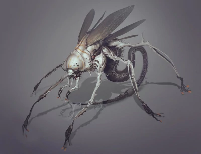
Los Mi-Gos u hongos de Yuggoth tienes aspecto de crustáceos, aunque en realidad son parte
animal, parte hongo. Tienen varios pares de extremidades terminadas en pinzas y alas membranosas funcionales. Se
comunican mediante patrones de color en sus cabezas.
Los Mi-Gos son una raza que se dedica a moverse por el espacio e ir conquistando planetas de los que explotan
sus recursos minerales. Su asentamiento más cercano a la Tierra se encuentra ahora mismo en Plutón (que no será
descubierto
hasta 1930). Suelen buscarse aliados indígenas en los planetas que quieren conquistar para que les ayuden en sus
planes. Adoran a varios dioses primigenios como difundiendo Nyarlathotep y Shub-Niggurath y en sus planes de colonización siempre
está difundir el culto a estos primigenios.
Los Mi-Gos son famosos por sus conocimientos en cirugía cerebral que les permite extraer un
cerebro de un cuerpo humano y mantenerlo conservados en unos tubos metálicos llenos de líquido llamados
cilindros cerebrales.
Estos tubos pueden conectarse a diferentes aparatos que le permiten al cerebro, ver, oír, hablar, etc.
Esta tecnología les permite a los Mi-Go llevarse con ellos en sus viajes especiales a los humanos
con los mínimos riesgos para los cerebros. También saben como conservar los cuerpos y si es necesario, pueden
devolver al cerebro a su cuerpo sin ningún tipo de problema.
Mi-Go colono (secuaz)
Los colonos son la mano de obra y la fuerza de combate de los Mi-Gos. Trabajan en las minas extrayendo
extraños minerales y defienden sus asentamientos secretos. Son fuertes, ágiles y resistentes.
- Atributos: Agilidad d8, Astucia d6, Espíritu d6, Fuerza d8 Vigor d8
- Habilidades: Ciencias d6, Disparar d8, Medicina d4, Mitos d6, Notar d8, Pelear d8
- Paso: 6; Parada: 6; Dureza: 8 (2)
- Ventajas: Frenesí Mejorado.
- Capacidades especiales:
- Armadura +2: Caparazón de crustáceo
- Pinzas: FUE+d4
- Volar: Paso volando 12. Los Mi-Gos tienen unas alas con las que vuelan.
- Viaje espacial: Pueden viajar por el espacio sin sufrir ningún tipo de daño.
- TPC: 1d6
Mi-Go científico (secuaz)
Sobre ellos recae todo el desarrollo tecnológico de su raza. No son tan fuertes y resistentes
como los colonos, pero son más inteligentes.
- Atributos: Agilidad d6, Astucia d10, Espíritu d8, Fuerza d4, Vigor d6
- Habilidades: Ciencias d10, Medicina d10, Mitos d6, Notar d6, Pelear d4
- Paso: 6; Parada: 4; Dureza: 5
- Capacidades especiales:
- Armadura +2: Caparazón de crustáceo
- Pinzas: FUE+d4
- Volar: Paso volando 8. Los Mi-Gos tienen unas alas con las que vuelan.
- Viaje espacial: Pueden viajar por el espacio sin sufrir ningún tipo de daño.
- Tecnología Yuggoth: Puedes asignarle a un científico hasta 3 aparatos tecnológicos
con diferentes funciones que emulen diferentes poderes/hechizos. A nivel de juego, tienen 8 PP que
pueden gastar para hacer funcionar esos 3 aparatos como si fueran hechizos usando Astucia
como habilidad de lanzamiento. Recuperan esos 8 puntos en la siguiente escena. Uno de esos
aparatos puede ser uno que se injerta en su "garganta" y que les permite comunicarse
con los humanos. En ese caso, podrán hablar 1 idioma a d6. Los Mi-go pueden usar cualquier
poder del manual básico, no tienes las limitaciones de esta ambientación.
- TPC: 1d6
Con el material adecuado, un Mi-go científico puede extraer el cerebro de un humano y
meterlo en un cilindro cerebral en dos horas pasando una tirada de Medicina. El mismo tiempo
para el proceso a la inversa. La extracción de un cerebro supone una tirada de TPC d8 al sujeto
que sufra la operación siempre que no la haya permitido.
Efrits (Gran raza de Yith)

Los yithianos es una raza extraterrestre que no tiene forma corpórea. Vinieron a la Tierra para escapar de
la destrucción de su mundo y se vieron obligados a tomar los cuerpos actuales, una raza de moluscos cónicos
mucho más grandes que un humano con 4 pseudópodos en la parte superior, dos acaban en pinzas, otro en unos ojos y
otro en una especie de boca.
Se caracterizan por su control del viaje a través del tiempo. De hecho, se les conoce como Gran raza, ya que han
sido capaces de controlar los viajes temporales. Cuando te encuentres con un yithiano debe tener en cuenta que igual
estás hablando con alguien de tu pasado o de tu futuro con todas las implicaciones que tiene eso.
Pueden mandar su mente a través del tiempo y ocupar
los cuerpos de seres inteligentes de diferentes épocas. Las mentes de los cuerpos ocupados pasan al cuerpo
del yithiano y este puede usarlo para interactuar con otros yithianos. Cuando la mente yithiana vuelve
a su cuerpo, la mente del huésped vuelve a su cuerpo tras ser borrada su memoria.
Efrit sabio (secuaz)
Los yithianos son grandes científicos, como demuestra su capacidad de viajar en el tiempo o sus armas de rayos.
El más simple de los yithianos está al nivel de grandes nombres de la ciencia como Isaac Newton o Émilie du
Châtelet.
- Atributos: Agilidad d6, Astucia d10, Espíritu d8, Fuerza d12, Vigor d12
- Habilidades: Ciencias d10, Disparar d6, Investigar d10, Mitos de Cthulhu d8, Notar d8, Pelear d6
- Paso: 6; Parada: 5; Dureza: 17 (4)
- Capacidades especiales:
- Armadura quitinosa +4: Como los moluscos, poseen un exoesqueleto quitinoso que les protege
de ataques.
- Morfología alien: No tiene puntos débiles como cabeza, cuello, por lo que los golpes
apuntados no consiguen extras.
- Tamaño +5: Mide entre 3 y 4 metros. Los atacantes añaden +2 a sus tiradas de ataque contra un
yithiano. También tiene 1 herida extra.
- Pinzas: FUE+d6
- Telepatía: Los yithianos son capaces de comunicarse con cualquier especie inteligente mentalmente.
- TPC: 1d8
Efrit guerrero (secuaz)
Los yithianos combatieron y derrotaron a un gran enemigo, los pólipos volantes, y es por ello que
puede ser formidables combatientes, sobre todo si disponen de sus temibles armas lanzarrayos.
- Atributos: Agilidad d8, Astucia d8, Espíritu d8, Fuerza d12+2, Vigor d12+2
- Habilidades: Ciencias d60, Disparar d10, Mitos de Cthulhu d6, Notar d8, Pelear d8, Notar
- Paso: 6; Parada: 5; Dureza: 18 (4)
- Capacidades especiales:
- Armadura quitinosa +4: Como los moluscos, poseen un exoesqueleto quitinoso que les protege
de ataques.
- Morfología alien: No tiene puntos débiles como cabeza, cuello, por lo que los golpes
apuntados no consiguen extras.
- Tamaño +5: Mide entre 3 y 4 metros. Los atacantes añaden +2 a sus tiradas de ataque contra un
yithiano. También tiene 1 herida extra.
- Pinzas: FUE+d6
- Telepatía: Los yithianos son capaces de comunicarse con cualquier especie inteligente mentalmente.
- TPC: 1d8
Su capacidad de viajar en el tiempo no tiene reglas, ya que creemos que es más un
recurso narrativo que una habilidad para usar en el juego.
Lanzador de rayos
Esta arma de rayos, parecida a una cámara de fotos de gran tamaño, posee un gran poder
destructivo. Tiene dos grandes asas y al pulsarse los gatillos que hay en cada asa lanza
unos rayos que calcinan a su objetivo. Es por ello que se necesitan dos manos para poder usarla.
Al dispararse los rayos de eléctricos generan un terrible zumbido. El rayo de energía que lanza
es plenamente visible, mucho más de noche, y usarla en público no es algo que se pueda esconder.
Es el terrible ruido que produce este arma y los rayos que lanza, lo que da fama a los efrits de
seres terribles y malignos relacionados con el fuego.
| Arma lanzarrayos yithania |
| Distancia |
Daño |
PA |
CDF |
Munición |
FUE Min. |
Peso |
Coste |
| 50/100/150 |
2d8 |
2 |
1 |
35 |
-- |
2 |
-- |
| Notas: Exige usar las dos manos para disparar.
Cauterizante (+2 a sus tiradas de Vigor para evitar el desangramiento).
Recarga 1 de munición por minuto, forma que un 35 minutos tendrías el
arma plenamente cargada. |
*** (Habitante de las arenas)
*** Referencia: *** (n. ***)
*** Referencia: *** (n. ***)
***
- Atributos: Agilidad d8, Astucia d6, Espíritu d6, Fuerza d6, Vigor d8
- Habilidades: ***
- Paso: X; Parada: X; Dureza: X
- Ventajas: Saber de Soleimán d6, Notar d6, Pelea d6, Sigilo d6
- Capacidades especiales:
- Armadura +3: Su piel áspera y con textura de arena le ofrece una buena protección.
- Camuflaje natural: Su piel de color arena le confieren +2 a las tiradas de sigilo
en el desierto.
- Garras: FUE+d4
- Hechizos: Algunos habitantes puede tener 3 hechizos, normalmente de ataque.
- Equipo: ***
- TPC: d6 (manada)
Qutrub
***
Otros seres de las 1001 noches
Gente del mar (Profundo)
... un ser humano, un Adamita semejante a todos los Ibu-Adam, con la diferencia
de que su cuerpo era verdusco y escamoso, con agallas en sus cortos cuellos, grandes bocas y ojos saltones
como de pez; pero, aparte de eso, tenía cabeza, cara, tronco, piernas y brazos, como un hombre de la tierra.
Referencia: Historia de Abdalah de la tierra y de Abdalah del mar (n. 506)
La gente del mar son unas criaturas humanoides acuáticas mezcla de pez y rana. Tienen cabezas
de pez con unos grandes ojos sin párpados y agallas en el cuello. Pies y manos palmeadas que
acaban en zarpas. Su piel resbaladiza de sapo, que se llena de escamas en la zona de la espina
dorsal, es de color gris verdoso aunque su vientre es blanquecino.
Solo mueren de forma violenta. Según las leyendas viven eternamente en el fondo del
mar en asentamientos submarinos, sirviendo a Dagón e Hydra, adorando a Cthulhu y esperando el
momento adecuado para alzarse de las profundidades y acabar con la raza humana.
Al ser inmortales no paran de crecer y hacerse más poderosos. Esto hace que los individuos
más ancianos son los más grandes y poderosos. Cuando esto ocurre es más raro aún que salgan
a la superficie. De hecho se considera que Hydra y Dagón son gente del mar muy muy antiguos y por
tanto muy poderosos. Hay teorías que creen que todas las gentes del mar son primigenios en potencia
si se le dan eones de tiempo.
- Atributos: Agilidad d6, Astucia d8, Espíritu d6, Fuerza d8, Vigor d8
- Habilidades: Atletismo d8, Idioma nativo d8, Saber de Soleimán d4, Notar d8, Pelear d6,
Sigilo d10, Supervivencia d8
- Paso: 6; Parada: 6 (5); Dureza: 8 (2)
- Capacidades especiales:
- Acuático: Paso nadando 6. Pueden respirar bajo el agua sin problemas y tampoco
tienen problemas con la presión a grandes profundidades.
- Armadura +2: Escamas y piel rugosa.
- Inmunidad a la edad, el veneno y las enfermedades: No pueden morir de enfermedad, de
viejo o por venenos.
- Garras: Fue+d4
- Rituales: Atraer a los peces
- Equipo: Tridente (Fue+d6, +1 Parada, a dos manos), Zurrón de algas trenzada, red de pesca.
- TPC: 1d4 (manada).
Híbridos de la gente del mar y de la gente de la tierra
*** Referencia: *** (n. ***)
*** Referencia: *** (n. ***)
***
Falak (Dhol) ☾
"¡Ahora, oh Belukia! para que sea perfecta tu instrucción a tu regreso entre
los hijos de los hombres, has de saber que a la tierra que habitamos la están
refrescando siempre las nieves del monte Cáucaso, que la rodea cual un cinturón. De
no ser así, no podría habitarse nuestra tierra por causa del fuego subterráneo. También
está la tal constituída por siete pisos que gravitan sobre los hombros de un genni
dotado de una fuerza maravillosa. Este genni está de pie encima de una roca
que descansa a lomos de un toro; al toro lo sostiene un pez enorme, y el pez
nada en la superficie del Mar de la Eternidad.
[...]
"El Mar de la Eternidad tiene por lecho el piso superior del infierno, el cual,
con sus siete regiones, está cogido entre las fauces de una serpiente monstruosa
que permanecerá quieta hasta el día del Juicio.
Referencia: Historia de Belukia (n. 362-363 )
Los falak son inmensas serpientes/gusanos ***
- Atributos: Agilidad dX, Astucia dX, Espíritu dX, Fuerza dX, Vigor dX
- Habilidades: ***
- Paso: X; Parada: X; Dureza: X
- Ventajas: ***
- Capacidades especiales:
- Equipo: ***
- TPC: dX
Ave de Rokh (Shantak) ☾
... y me acordé de lo que en mi juventud me habían contado viajeros y marineros acerca de un
pájaro de tamaño extraordinario, llamado "rokh", que se encontraba en una isla muy remota y que
podía levantar un elefante.
Referencia: La segunda historia de las historias de Sindbad el marino, que trata del
segundo viaje (n. 295)
***
***
Su zona principal de nidación es en los picos más altos de la cordillera del Caucaso entre el Mar Negro
y el Mar Caspio, aunque se han encontrado rokhs solitarios en otras latitudes.
***
- Atributos: Agilidad d6, Astucia d6 (A), Espíritu d6, Fuerza d12+4, Vigor d8
- Habilidades: Atletismo d6, Pelea d8, Notar d8
- Paso: 8; Parada: 6; Dureza: 15(3)
- Ventajas: ***
- Capacidades especiales:
- Armadura +3: Su piel escamosa le confiere una buena protección.
- Garras/Mordisco: FUE+d8
- Volar: Paso volando 16
- Tamaño +6: Tiene el tamaño de un elefante africano (+6 dureza, +2 bonificación al atacarle, +1 herida).
- Viaje estelar: Es inmune a los rigores del espacio exterior.
- Equipo: Si ha sido entrenado como cabalgadura, puede llevar una silla de montar en la que podría ir una persona
de tamaño real.
- TPC: d8
Qatram (Shoggoth) ☾
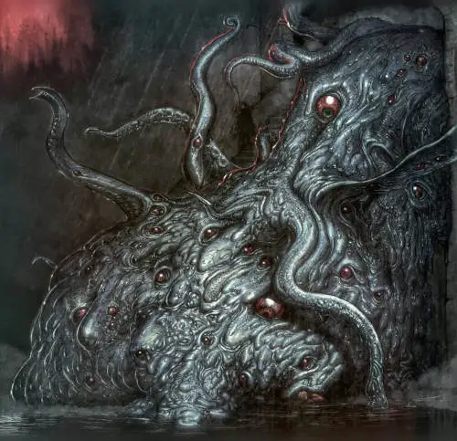
Los Qatrams (literalmente brea o alquitran) son masas informes y burbujeantes de protoplasma. Tiene un tamaño de unos 6 metros de
diámetro y unos 3 de altura. Pueden generar ojos y tentáculos en cualquier parte de su estructura.
Fueron creados por Los Antiguos como mulas de carga en la construcción de sus ciudades acuáticas. No quedan
muchos, pero aún se pueden encontrar en oscuras fosas marinas sirviendo a los profundos.
A lo largo de los milenios han ido evolucionando, haciéndose anfibios y aumentando su inteligencia
hasta tener una inteligencia humana, aunque tampoco es que sean muy inteligentes. Se conocen casos en
los que han desarrollado la capacidad de habla.
- Atributos: Agilidad d4, Astucia d4, Espíritu d6, Fuerza d12+6, Vigor d12
- Habilidades: Pelear d4, Notar d6
- Paso: 4; Parada: 4; Dureza: 18(14)
- Ventajas: Barrido (puede sacar tentáculos de cualquier parte de su cuerpo y atacar a todos
los que le rodean).
- Capacidades especiales:
- Acuático: Paso nadando 4.
- Armadura +4: Su piel dura y gomosa y es bastante resistente.
- Impávido: Son un engendro creado genéticamente por los antiguos.
- Masa informe: Como muchos otros monstruos, no tiene puntos débiles como
cabeza, cuello, por lo que los golpes apuntados no consiguen extras.
- Tamaño 6: 6 metros de diámetro (+6 dureza, +2 bonificación al atacarla, +1 herida).
- Tentáculos: FUE+d6
- Regeneración rápida: Realiza una tirada de curación natural por ronda, pudiendo
sanar de este modo cualquier herida excepto las creadas por fuego o electricidad.
- Inmunidad: Ataques físicos como armas de corte, flechas, piedras ...
- Debilidad: Fuego y electricidad. Podrían ser dañados por artilugios incendiarios o
explosivos como fuego griego.
- TPC: 1d10
Isla viviente ☾
Un día en que navegábamos sin ver tierra desde hacía varios días, vimos surgir del mar
una isla que por su vegetación nos pareció algún jardín maravilloso entre los jardines del Edén. [...]
Al encender un fuego para cocinar los frutos recogidos de los árboles de la isla, sentimos de repente
que temblaba la isla toda con tan ruda sacudida que fuimos despedidos a algunos pies de altura sobre el suelo.
Del suelo emergieron infinitos ojos y pequeños zarcillos oscuros. [...]
Y en aquel momento vimos aparecer en la proa del navío al capitán, que nos gritaba con una voz terrible
y gestos alarmantes: "¡Salvaos pronto!, ¡oh pasajeros! ¡Subid enseguida a bordo! ¡Dejadlo todo! ¡Abandonad
en tierra vuestros efectos y salvad vuestras almas! ¡Huid del abismo que os espera! ¡Porque la isla donde
os encontráis no es una isla, sino una monstruosidad informe y gigantesca que eligió en medio de
este mar su domicilio desde antiguos tiempos, y merced a la arena marina crecieron árboles en su lomo!
¡La despertasteis ahora de su sueño con vuestra lumbre, y hela aquí que se despierta! ¡Salvaos, o si no, nos
atrapará con sus tentáculos y nos sumergirá en el mar, que ha de tragaros sin remedio! ¡Salvaos!
¡Dejadlo todo, que he de partir!"
Al oír estas palabras del capitán, los pasajeros, aterrados, dejaron todos sus efectos, vestidos, utensilios y
hornillas, y echaron a correr hacia el navío, que a la sazón levaba ancla. Pudieron alcanzarlo a tiempo algunos;
otros no pudieron. Porque la descomunal masa viscosa los había atrapado y aplastado con sus terribles pseudópodos
gelatinosos.
Referencia: La primera historia de las historias de Sindbad el marino, que trata del
primer viaje (n. 292)
Este qatram ha crecido descomunalmente, de forma que se ha convertido en una isla flotante. Con los
años ha ido acumulando entre su protoplasma arena de mar, le han crecido sargazos y con los siglos incluso
vegetación terrestre como arbustos y palmeras, convirtiéndose en un vergel. Desde lejos puede parecer un
pequeño isla paradisíaca, pero una vez encima una tirada Notar t dirá que han caído en una trampa mortal.
- Atributos: Agilidad d4, Astucia d4, Espíritu d6, Fuerza d12+8, Vigor d12
- Habilidades: Pelear d4, Notar d6
- Paso: 4; Parada: 4; Dureza: 20(16)
- Ventajas: Barrido (puede sacar tentáculos de cualquier parte de su cuerpo y atacar a todos
los que le rodean).
- Capacidades especiales:
- Acuático: Paso nadando 4.
- Armadura +4: Su piel dura y gomosa y es bastante resistente.
- Impávido: Son un engendro creado genéticamente por los antiguos.
- Masa informe: Como muchos otros monstruos, no tiene puntos débiles como
cabeza, cuello, por lo que los golpes apuntados no consiguen extras.
- Tamaño 11: 30 metros de diámetro (+11 dureza, +4 bonificación al atacarla, +2 herida).
- Tentáculos: FUE+d4
- Regeneración rápida: Realiza una tirada de curación natural por ronda, pudiendo
sanar de este modo cualquier herida, excepto las creadas por fuego o electricidad.
- Inmunidad: Ataques físicos como armas de corte, flechas, piedras ...
- Debilidad: Fuego y electricidad. Podrían ser dañados por artilugios incendiarios o
explosivos como fuego griego o quemando la vegetación que tiene.
- TPC: 1d12
Nas Nas
***
Gigante (Gug) ☾
.. un ser peludo con forma humana, tan alto como una palmera, y cuyo
aspecto era más horrible que el de todos los monos reunidos. Tenía los ojos rojos como dos tizones
inflamados, los dientes largos y salientes como los colmillos de un cerdo, una boca enorme que
cruzaba su rostro de arriba abajo y tan grande como el brocal de un pozo, con dos antebrazos que
se convierten en cuatro brazos a la altura del codo, y uñas ganchudas cual las garras del león.
A su vista, nos llenamos de terror, y después nos quedamos rígidos como muertos. [...]
Aconteció que el capitán era un hombre gordo y lleno de carne, y naturalmente, era el más robusto
y sólido de todos los hombres del navío. Así es que el espantoso gigante no dudó en fijarse en
él al elegir; le cogió entre sus manos cual un carnicero cogería un cordero, le derribó en tierra
le puso un pie en el cuello y le desnucó con un solo golpe. Empuñó entonces uno de los inmensos
asadores en cuestión y se lo introdujo por la boca, haciéndolo salir por el ano. Entonces encendió
mucha leña en el hogar que había en la sala, puso entre las llamas al capitán ensartado, y comenzó
a darle vueltas lentamente hasta que estuvo en sazón. Le retiró del fuego entonces y empezó a
trincharle en pedazos, como si se tratara de un pollo, sirviéndose para el caso de sus uñas.
Hecho aquello, le devoró en un abrir y cerrar de ojos. Tras de lo cual chupó los huesos,
vaciándolos de la medula, y los arrojó en medio del montón que se alzaba en la sala.
Referencia: La tercera historia de las historias de Sindbad el marino, que trata
del tercer viaje (n. 299)
Los gugs son una especie de simios gigantescos (entre 7-8 metros de altura) que habitan en las Tierras del Sueño.
Sus brazo se dividen en dos a la altura del codo con lo que poseen 4 manos con grandes garras. La boca les
cruza la cara de arriba a abajo de forma que cada ojo queda a un lado de la boca.
Es una raza inteligente con una cultura simple y se comunican mediante gestos de la cara. Son altamente
agresivos, carnívoros, antropófagos y necrófagos y adoran a diferentes primigenios. No sueles salir de sus cuevas
ya que la luz del sol les hace daño. Si bien es no normal encontrárselos, pueden ser invocados por
primigenios a los que adoran o por magos que siguen a esos primigenios para que les hagan diferentes tareas.
- Atributos: Agilidad d6, Astucia d6, Espíritu d6, Fuerza d12+5, Vigor d12+2
- Habilidades: Disparar d6, Notar d6, Pelea d6
- Paso: 8; Parada: 5; Dureza: 18(2)
- Ventajas: Frenesí Mejorado
- Capacidades especiales:
- Armadura +2: Su pelaje y su gruesa piel les confieren una buena armadura.
- Tamaño +7 Entre 7-8 metros de altura (+7 dureza, +2 bonificación al atacarle, +1 herida).
- Sensible a la luz del día: Sufren un -2 a todas sus tiradas de habilidad a plena luz del día.
- Visión nocturna: No sufren penalización por condiciones de iluminación.
- Garras/Mordisco: FUE+d6
- Equipo: Herramientas básicas y objetos sencillos según su trabajo. Por ejemplo, un pastor
tendrá un zurrón (posiblemente de piel humana) y un gran tronco pelado que use como bastón.
- TPC: 1d10
Davalpa o Viejo del mar ☾
*** Referencia: *** (n. ***)
*** Referencia: *** (n. ***)
***
- Atributos: Agilidad dX, Astucia dX, Espíritu dX, Fuerza dX, Vigor dX
- Habilidades: ***
- Paso: X; Parada: X; Dureza: X
- Ventajas: ***
- Capacidades especiales:
- Equipo: ***
- TPC: dX
Avatares
***
Genio de la lámpara (Avatar de Nyarlathotep) ☾
*** Referencia: *** (n. ***)
*** Referencia: *** (n. ***)
***
- Atributos: Agilidad dX, Astucia dX, Espíritu dX, Fuerza dX, Vigor dX
- Habilidades: ***
- Paso: X; Parada: X; Dureza: X
- Ventajas: ***
- Capacidades especiales:
- Equipo: ***
- TPC: dX
Secuaces y bestias
de la tierra, del mar
y del viento
Vas a necesitar llenar tus khans de turbios personajes de miradas perdidas,
tus zocos y bazares de extraños vendedores, tus mares terribles monstruos y
tus desiertos de animales de grandes dientes y afiladas garras acechando entre
la dunas. En esta sección tienes todo lo necesario para que rellenes todos
esos huecos en tus historias.
En algunos casos te encontrarás algunas opciones de personalización muy
simples del PNJ para que tu mesa no termine por aprenderse los PNJs. Por ejemplo,
los mercaderes pueden ser avariciosos, borrachos o bocazas y los agricultores
puede que lleven cuchillos o machetes.
Secuaces
Aquí te presentamos toda una galería de PNJ genéricos que van a pulular por
los callejones de las grandes urbes y las rutas comerciales. También los puedes
usar como base para tus PNJ. Si el jefe de la caravana entre Bagdad y El Cairo
va a ser importante, coge la plantilla de mercader y adórnalo con tus propios
detalles.
Pescador/a y agricultor/a
Usa estas estadísticas para todas esas personas que habitan los puertos,
los ríos y los campos de cultivo. Pueden dedicarse a la agricultura, la
ganadería, el pastoreo, a la apicultura, a la pesca, etc. Puedes
gastar un par de puntos de habilidad en especializarlos. Por ejemplo,
si recolectan dátiles, en vez de atletismo d6, deberían tener d10 para
poder trepar a las palmeras.
- Atributos: Agilidad d6, Astucia d4, Espíritu d4,
Fuerza d6, Vigor d6
- Habilidades: Atletismo d6, Idioma materno d4, Notar d4,
Pelear d4, Supervivencia d4
- Paso: 6; Parada: 4; Dureza: 5
- Equipo: Cuchillo (FUE+d4) o machete (FUE+d6)
Menestral/a
Estamos hablando de personas que tiene un oficio manual; desde la
herrera del pueblo o el alfarero, hasta los tejedores o los teñidores
de telas. Son gente que sabe mucho de su trabajo, pero poco más.
Hacen un buen trabajo, cobran por ello y tratan de sobrevivir.
Puedes gastar un par de puntos de habilidad en especializarles.
- Atributos: Agilidad d6, Astucia d6, Espíritu d4,
Fuerza d6, Vigor d6
- Habilidades: Atletismo d4, Ciencias d4, Idioma materno d6,
Latrocinio d6, Notar d4, Pelear d4, Reparar d8
- Paso: 6; Parada: 4; Dureza: 5
- Ventajas: Elige 1 o más: Mr. Arreglalotodo, Hombre de recursos
- Desventajas: Elige 1 o más: Avaricioso (Mayor), Feo (Menor),
Habito (Mayor, Alcoholismo), Pobreza (Menor)
- Equipo: Jambia (FUE+d4) y/o machete (FUE+d6)
Mercader
Vamos desde dependientes del bazar hasta taberneros y toda la
estructura de gente que trabaja en las empresas comerciales, desde
almaceneros hasta los capataces. Puedes gastar un par de puntos de
habilidad en especializarles.
- Atributos: Agilidad d6, Astucia d8, Espíritu d6,
Fuerza d6, Vigor d4
- Habilidades: Atletismo d4, Ciencias d4, Idioma materno d6,
Idioma extra d6, Notar d8, Pelear d4, Persuadir d6
- Paso: 6; Parada: 4; Dureza: 4
- Desventajas: Elige 1 o más: Avaricioso (Mayor), Bocazas (Menor),
Cauto (Menor), Habito (Mayor, Alcoholismo)
- Ventajas: Elige 1 o más: Intimidador, Callejear,
Alcurnia, Rico
- Equipo: Jambia (FUE+d4) y/o machete (FUE+d6)
Burócrata
Estamos hablando desde jefes de puerto a las personas encargadas
del registro, pasando por la gente que recauda los impuestos o
chupatintas que están detrás de un mostrador en los juzgados.
- Atributos: Agilidad d4, Astucia d6, Espíritu d6, Fuerza d4, Vigor d4
- Habilidades: Atletismo d4, Humanidades d6, Idioma materno d6,
Notar d6, Pelear d4, Persuadir d6
- Paso: 6; Parada: 4; Dureza: 4
- Desventajas: Elige 1 o más: Avaricioso (Mayor), Bocazas (Menor),
Habito (Menor)
- Ventajas: Elige 1 o más: Alcurnia, Callejear, Responsable, Rico
Animales mitológicos
***
Shadhavar
***
Animales salvajes
Aquí tenéis una lista de animales domesticos y salvajes del manual de SWADE que puedes usar
en tus aventuras, desde perros y mulas hasta leones:
- Ave de presa: águilas y halcones que pueden o no estar entrenados.
- Caimán/cocodrilo: en el Nilo podrás encontrar cocodrilos en sus orillas.
- Caballo de monta/guerra
- Gato doméstico
- León: también puedes usar estás estadísticas para otros grandes felinos como tigres o
panteras.
- Lobo/Perro: puedes encontrar perros en el campo y la ciudad y muchas clases de
cánidos salvajes.
- Mula
- Serpiente constrictora/venenosa
- Toro: puedes usar sus estadísticas para grandes herbívoros.
Nuevos animales salvajes
Camellos y dromedarios
Los camellos y dromedarios son animales perfectamente adaptados a los rigores del desierto y
es por ello que son la montura usada por todos los pueblos que bien en en duros habitats.
- Atributos: Agilidad d8, Astucia d4 (A), Espíritu d6, Fuerza d12+1, Vigor d8
- Habilidades: Atletismo d8, Notar d6, Pelea d4
- Paso: 8; Parada: 4; Dureza: 8
- Ventajas: Pies ligeros
- Capacidades especiales:
- Tamaño +3: Entre 2 y 2,5 metros de altura (+3 dureza).
- Mordisco/Coz: FUE+d4
- Joroba: El agua acumulada en la joroba les da +2 a todas las tiradas
contra la deshidratación.
Elefantes
El rey indiscutible de la sabana ha sido domesticado y es usado tanto para trabajar en
el campo, como máquina de guerra brutal en la batalla.
- Atributos: Agilidad d6, Astucia d6 (A), Espíritu d6, Fuerza d12+4, Vigor d12
- Habilidades: Atletismo d8, Notar d6, Pelea d6, Supervivencia d6
- Paso: 8; Parada: 5; Dureza: 16 (2)
- Ventajas: ***
- Capacidades especiales:
- Armadura +2: Su piel dura les protege contra flechas y espadas.
- Tamaño +6: Alcanzan normalmente de 6 a 7,5 m de longitud y de 3,2 a 4 m de altura
(+6 dureza, +2 bonificación al atacarle, +1 herida).
- Resistente: No recibe heridas al ser aturdido dos veces seguidas.
- Trompa: Pueden usar su trompa para atacar FUE+d4 o para agarrar cosas, levantaras, moverlas, ...
- Carga: Si se mueve todo su movimiento en linea recta puede hacer una tirada única de Pelea contra todos
los enemigos que encuentre en su camino con un daño FUE y deberán tirar AGI para no quedar caidos en el suelo.
- Colmillos: FUE+d8
Hienas
La hiena es un carnívoro similar a los cánidos, es carroñero y muy inteligente. Son bastante fieras
y disputan piezas con las leonas. La hembra es de mayor tamaño que el macho y suelen las dirigentes
de las manada.Proviene de la África subsahariana.
- Atributos: Agilidad d8, Astucia d8 (A), Espíritu d6, Fuerza d6, Vigor d6
- Habilidades: Atletismo d8, Notar d10, Pelear d6, Sigilo d8
- Paso: 8; Parada: 5; Dureza: 4
- Ventajas: ***
- Capacidades especiales:
- Tácticas en manada: En caso de multiples oponentes obtiene un +2 por cada
compañero en vez del +1 normal, pero el máximo de +4 se mantiene.
- Mordisco: FUE+d4
- Veloz: Tira d10 como dado de carrera
Lugares míticos
***
Aram-de-las-columnas
Y he aquí que aquellas murallas estaban construidas con ladrillos de oro alternados con
ladrillos de plata, y en ellas se abrían ocho puertas semejantes a las puertas del Paraíso.
La primera era de rubí, la segunda de esmeralda, la tercera de ágata, la cuarta de coral,
la quinta de jaspe, la sexta de plata y la séptima de oro.
Y penetramos en la ciudad por la puerta de oro, y avanzamos invocando el nombre de
Alah. Y atravesamos calles bordeadas de palacios con columnatas de alabastro y jardines
donde el aire que se respiraba era de leche y los arroyos de aguas embalsamadas. Y
llegamos a un palacio que dominaba la ciudad y que estaba construido con un arte y una
magnificencia inconcebibles, y cuyas terrazas estaban sostenidas por mil columnas de oro
con balaustradas formadas de cristales de color y con muros incrustados de esmeraldas y
zafiros. Y en el centro del palacio se glorificaba un jardín encantado, cuya tierra,
odorífera como el almizcle, estaba regada por tres ríos de vino puro, de agua de rosas y
de miel. Y en medio del jardín se alzaba un pabellón con bóveda formada por una sola
esmeralda, que resguardaba a un trono de oro rojo incrustado de rubíes y de perlas.
Referencia: Las llaves del destino (n. 792)
***
El valle de los diamantes
*** Referencia: *** (n. ***)
*** Referencia: *** (n. ***)
***
Las islas Al-Wakwak
*** Referencia: *** (n. ***)
*** Referencia: *** (n. ***)
***
***
La ciudad de bronce
Bajo el blanco cendal que caía de la altura, en toda la extensión que podía
abarcar la mirada fija en los horizontes hundidos en la noche, aparecían dentro del
recinto de bronce cúpulas de palacios, terrazas de casas, apacibles jardines, y a
la sombra de los macizos brillaban los canales, que iban a morir en un mar de metal,
cuyo seno frío reflejaban las luces del cielo. Y el bronce de las murallas, las
pedrerías encendidas de las cúpulas, las terrazas cándidas, los canales y el mar
entero, así como las sombras proyectadas por Occidente amalgamábanse bajo la brisa
nocturna v la luna mágica.
Sin embargo, aquella inmensidad estaba sepultada,
como en una tumba, en el universal silencio. Allá dentro no había ni un vestigio
de vida humana. Pero he aquí que con un mismo gesto, quieto, destacábanse sobre
monumentales zócalos altas figuras de bronce, enormes jinetes tallados en mármol,
animales alados que se inmovilizaban en un vuelo estéril; y los únicos seres
dotados de movimiento en aquella quietud eran millares de inmensos vampiros
que daban vueltas a ras de los edificios bajo el cielo, mientras búhos invisibles
turbaban el estático silencio con sus lamentos y sus voces fúnebres en los
palacios muertos y las terrazas solitarias.
Referencia: Historia prodigiosa de la ciudad de bronce (n. 343-346)
***
***
La cueva de las maravillas
Entonces el maghrebín sacó del cinturón un eslabón, con el
que hizo lumbre, y prendió fuego al montón de ramas y hierbas secas, que llamearon crepitando.
Y al punto sacó del bolsillo una caja de concha, la abrió y tomó un poco de incienso, que
arrojó en medio de la hoguera. Y levantóse una humareda muy espesa que apartó él con sus
manos a un lado y a otro, murmurando fórmulas en una lengua incomprensible en absoluto para
Aladino. Y en aquel mismo momento tembló la tierra y se conmovieron sobre su base las rocas
y se entreabrió el suelo en un espacio de unos treinta codos de anchura que desprendía un
terrible hedor. Y del fondo de aquel agujero emergieron los restos podridos de un inmenso
falak muerto. [...]
Y el maghrebín le dijo: "Hijo mío Aladino, tápate la nariz y la boca con mi pañuelo y
adéntrate ahora en ese ser mientras declamas tu linaje. Y te hallarás debajo de una bóveda
grande dividida en tres buches que se comunican unas con otras. En cada estomago
encontraras objetos singulares y valiosos entre los pliegues de la carne de la paredes. Pero pasa sin detenerte
y recógete bien el traje, sujetándotelo a la cintura para que no toques nada; porque debido
si tuvieras la desgracia de tocar con los dedos o rozar siquiera con tus ropas las paredes su
ponzoñosa sangre y su ácida bilis, al instante morirás envenenado entre terribles dolores. Entrarás,
pues, en el primer estomago, y muy de prisa pasarás al segundo, desde la cual, sin detenerte un instante,
penetrarás en el tercero, donde verás una pequeña cavidad. Y te adentrarás en ella, y te encontrarás
una especie de hornacina de carne y sangre; y en esta hornacina, sobre un pedestal de hueso,
encontrarás una lamparita de cobre. Y estará encendida esta lámpara. ¡Ahora, fíjate bien, Aladino!
¡cogerás esta lámpara, la apagarás, verterás en el suelo el aceite y te la esconderás en el
pecho enseguida! ¡Y volverás a mí por el mismo camino que hayas seguido! Y una vez que te hayas
reunido conmigo, me entregarás la lámpara, fin y motivo de nuestro viaje y origen de nuestra riqueza
y de nuestra gloria en el porvenir, ¡oh hijo mío!"
Referencia: Historia de Aladino y de la lámpara mágica (n. 738)
La cueva de las Maravillas es el lugar mítico donde Aladino consiguió la lámpara mágica.
A pesar de lo que pueda parecer, la cueva de las maravillas es uno de los lugares más
horribles donde entrar ya que, en realidad, es el cadáver descompuesto de un
gigantesco falak.
No hay una única cueva, sino que hay un mínimo de tres conocidas, una en Kasgar
(China), dónde sucede la historia de Aladín, otra cerca de la ciudad de Sana en
Yemen y la ultima en las montañas de Ispahán.
Las razones de la muerte de los falak es desconocida, pero la tradición dice que
es tan poderoso que sólo su miedo al mayor poder de Dios le impide tragarse toda
la creación.
Abriendo la cueva
El mago que desee abrir la cueva debe saber la ubicación donde está enterrado el falak
y debe realizar un hechizo de Animar cuerpo sobre el cadáver del falak para hacer que
salga de la arena y la boca se abra. Presenciar como el cadáver descompuesto de un
falak muerto se levanta de entre las arenas del desierto es un TPC d8, adentrarse
en su interior supone una segunda TPC d12.
Recuerda que el poder Zombi solo dura una hora y animar un falak muerto supone un gasto
de un montón de puntos de poder debido a su tamaño.
Peligros de su interior
Al entrar en la "cueva" nos vamos enfrentar a tres peligros principales, los jugos
gástricos del falak, las explosiones de metano que genera el cadaver y la estructura
de la propia cueva (el estomago del falak) que tiene simas y precipicios insondable.
El interior apesta terriblemente, lo que exige una tirada de Vigor para aguantar
la horrible peste a muerte. Si se falla, se obtiene un nivel de fatiga que dura
hasta salir de la "cueva". Usar pañuelos empanados con perfumes y aceites olorosos
puede ayudar, ofreciendo un +2 a la tirada de Vigor.
Caer en un charco de ácidos gástricos supone un 1d6 de daño por cada extremidad,
cabeza y tronco. Es decir, que si metes una pierna en el ácido te haría una 1d6
y si te caes dentro perderías 6d6 de daño. El ácido se comerá la ropa, el pelo, el papel
y la madera. Solo lo que sea de metal, cerámica o cristal se salvará.
El metano acumulado del cadaver puede prender con cualquier chispa haciendo desde una
pequeña llama hasta explosiones devastadoras. Las explosiones quedan a tu discreción,
pero lo interesante es dejar esas explosiones para momentos críticos y épicos.
Puedes hacerles tirar Notar para detectar el metano y que salgan corriendo.
El falak tiene un tamaño terrible por lo que puede haber caídas grandísimas de
hasta 100 metros en muchos casos. Como siempre el material de escalada ayudará a moverse
por su interior.
A lo Jonás y la ballena, podría haber seres de los Mythos que sobrevivan en el
interior del falak, como ghūles que se dedican a comer la carne del falak.
Tesoros
Durante miles de años los falaks han devorado dimensiones extraplanares y planos
multidimensionales y restos de esas realidades pueden encontrarse todavía en su podrido
sistema digestivo. Buscar una hora dentro de un falak permite una tirada de botín de d12.
Guía de viajes
Aunque pueda parecer que todos los cuentos de las 1001 noches suceden en una especie
de Arabia mítica, en realidad ocurren en muchos países y lugares de toda Asia y África,
desde Egipto o Marruecos hasta China o India.
Arabia
***
Persia
***
Bagdad
***
Tienes toda una sección dedicada a la ciudad de Bagdad, con descripciones
de su lugares y sus gentes.
Basora
***
Otros lugares de Persia
***
Alamut
***
Siria
***
Damasco
***
Egipto
***
El Cairo
***
Otros lugares de Egipto
***
Piramide acodada de Dashur
***
El faraón Nefrén-Ka, conocido como el "Faraón negro", fue un poderoso mago que hizo un pacto
con Nyarlathotep para conseguir el dón de la profecía. A cambio sacrificó a dios primordial
miles de vidas humanas. Se cree que su cripta se encuentran dentro de la
piramide acodada de Dashur, donde hay un tesoro esperando a los valientes o a locos que se atrevan
a abrirla.
***
Magreb
El magreb que significa «lugar por donde se pone el sol», el Poniente, es la parte más
occidental del mundo árabe. El Magreb incluye las actuales Argelia, Libia, Mauritania
(parte de África occidental ), Marruecos y Túnez
***
China
China es el lugar donde tiene lugar una de las historias más famosas de las 1001 noches,
la historia de Aladino y de la lámpara mágica.
***
India
***
Bagdad, la ciudad eterna
***
Historia de Bagdad
***
Descripción de la ciudad
***
El califa en su plan de mejora de las estructuras publicas ha empezado a asfaltarlas con alquitrán,
una nueva tecnología que permite mover las mercancías y las personas por la ciudad más facilmente.
De hecho, las principales calles de Bagdad son las únicas del mundo que usan este invento que
en el futuro cubrirá medio mundo. El alquitrán evita que las calles se embarren con la lluvia y
que los carros y las monturas se atasque en el lodo.
Clima
Bagdad posee un clima subtropical muy caluroso y árido, de hecho, es una de las ciudades más calurosas del mundo.
En verano, la temperatura media es de 35 °C con un sol abrasador y no hay casi lluvias lluvias.
Durante el día pueden alcanzarse hasta los 50 °C a la sombra y por la noche bajar hasta los 20 °C.
La humedad es muy baja y frecuentemente sufren tormentas de polvo veraniegas venidas del desierto.
Durante el invierno las temperaturas se suavizan notablemente, con máximas de 25 ºC pero las mínimas
pueden caer hasta los -5 °C. Es durante el invierno cuando se dan la mayoría de las precipitaciones
anuales.
Los barrios de Bagdad
"Has de saber ¡oh mi señor! que la ciudad de Bagdad está dividida en barrios y
que cada barrio tiene al frente un jeique al que llaman al-balad.
Referencia: Historia del dormido despierto (n. 625)
***
La ciudad circular
***
El bazar
***
Casa de la Sabiduría
La Casa de la Sabiduría o Casa del Saber es una importante universidad, biblioteca
pública como sede de traducciones y centro intelectual. Una de sus función principales
era recopilar el conocimiento universal y traducirlo al árabe, convirtiendo en su época a
Bagdad en el centro intelectual de Oriente Medio y posiblemente del mundo entero.
En los estantes de los abarrotados estantes de las salas de su biblioteca se estima que hay
unos 60.000 que recopilan todo el saber del mundo conocido por los árabes. Tiene traducciones
de libros principalmente griegos, hindúes y persas, pero también pueden encontrarse de
lenguas menos comunes o incluso perdidas.
Hunayn ibn Ishaq
Hunayn ibn Ishaq es el actual director de la Casa de la Sabiduría. ***
***
El pasillo prohibido
Hay, en lo profundo de la biblioteca, un pasillo cuyo acceso está cerrado con una verja de
plata, llamado el pasillo prohibido, donde se guardan las más deleznables obras sobre
magia, nigromancia y conocimientos herejes. Solo el bibliotecario general tiene la
llave para entrar y solo con el permiso del director se da acceso a esta zona.
La cerrada es bastante compleja pero puede ser forzada (-4 latrocinio). Hay que tener en
cuenta que si te pillan en el pasillo prohibido sin permiso, te espera un alfanje que separará
tu cabeza de tu hombros.
El pequeño consejo
El pequeño consejo es una organización creada por los pillastres de las calles de Bagdad.
Es una especie de gremio secreto que se dedica a proteger y ayudar a sus miembros a
sobrevivir en las peligrosas calles de Bagdad.
Cada luna nueva se reúnen en un descampado de la medina para discutir sus problemas y
buscar soluciones. Intercambian información valiosa, se advierten de problemas y se
presentan nuevos pillastres.
Para tomar decisiones se vota democráticamente y las decisiones tomadas deben ser
acatadas por todos los socios o son expulsado del gremio.
Los tres miembros mayores forman un tribunal que juzga delitos y dirime en disputas.
***
Al-Rusafa
***
Al-Adhamiyah
***
Kadhimiya
***
Karkh
***
El refugio de la secta de la progenie de la Luna Creciente en Bagdad
La secta usa el sótano de una carnicería del zoco de alimentación de arrabal de Karkh como
lugar de reunión y para hacer sus rituales impíos. Mataron al anterior dueño y compraron la
carnicería a sus hijos.
El hecho de que sea una carnicería les permite esconder fácilmente la entrada de víctimas como
piezas de carne y salida de cadáveres perfectamente cortados y deshuesados en la carnicería. El
sótano es grande y está perfectamente insonorizado, con una sola entrada y salida por la tienda
que siempre está vigilada.
Los esqueletos de las víctimas los están vendiendo como huesos de animales dando buenos beneficios.
Son usados para hacer alquitrán, el nuevo material con el que se están cubriendo las calles de Bagdad y
que tan buenos resultados está dando.
El rio Tigris
Bagdad se halla en la orilla oeste del Tigris ***
El Tigris ha sido una ruta de transporte importante durante mucho tiempo a través
de un territorio mayormente desértico. Es navegable desde Basora hasta Bagdad por
botes de poco calado, pero se requiere de balsas para el transporte hasta Mosul.
Alrededor de la ciudad
***
Ruinas de Babilonia
Babilonia es la ciudad más famosa de la antigua Mesopotamia y sus ruinas se encuentran
a tres días a caballo al suroeste de Bagdad en las orillas del Eufrates. ***
Región de Balad Ruz
***
Personas notables de la ciudad
***
Gobierno de la ciudad
***
Harún Al-Raschid, Califa de Bagdad
***
Gaifar, gran visir del califa de Bagdad
***
Ibrahim Ibn Jibril, general del califa de Bagdad (y sumo sacerdore de la Progenie de la Luna Creciente)
***
Yacub Abu-Yussef, kadí supremo de Bagdad
Bajo el reinado del califa Harún Al-Raschid, el kadí supremo de Bagdad era
Yacub Abu-Yussef, el hombre más sabio y el jurisconsulto más profundo y más listo de
su tiempo. Había sido el discípulo y el compañero más querido del imam Abu-Hanifah.
Referencia: La crema de aceite de alfónsigos y la dificultad jurídica
resulta (n. 989)
***
Gentes de ciencia
***
Hunayn ibn Ishaq, director de la Casa de la Sabiduría
***
Gentes del arte
***
Bahlul el Cuerdo, bufón de la corte
***
Cuentos salvajes
Aquí te presentamos 3 aventuras largas que te permitirán conocer y explorar estas primigenias 1001
noches de tres formas distintas:
- En un largo viaje conociendo las maravillas y las pesadillas que habitan en este mundo.
- Como pillastres de las calles de Bagdad que descubren un terrible secreto que
amenaza a la ciudad y sus gentes.
- Combatiendo a una terrible secta que busca traer a su maligno y poderoso dios a la tierra.
Además, dispondrás de pequeñas aventuras que podrás intercalar dentro de las
tramas principales.
Mas alla de la Ciudad de Bronce:
Historia de la segunda expedición a la Ciudad de Bronce
Esta campaña es la continuación de la expedición a la Ciudad de Bronce que se narra en Historia prodigiosa de la
Ciudad de Bronce. Al final esa historia Abdalmalek, califa de Damasco, promete volver él mismo a la Ciudad de Bronce
y liberar a la ciudad de la maldición que se cierne sobre ella.
El califa Abdalmalek quedó encantado y maravillado al mismo tiempo del relato que de la aventura
le hizo el emir Muza, y exclamó: "Siento en extremo no haber ido con vosotros a esa Ciudad de Bronce.
¡Pero iré, con la venia de Alah, a admirar por mí mismo esas maravillas y a tratar de aclarar
el misterio de ese encantamiento!"
Referencia: Historia prodigiosa de la ciudad de bronce (n. 346)
Tus shahriar se enrolarán en una nueva expedición a la Ciudad Bronce que saldrá de Damasco al Magreb y de
allí hacia el desierto y a territorio desconocido para encontrar la famosa Ciudad de Bronce.
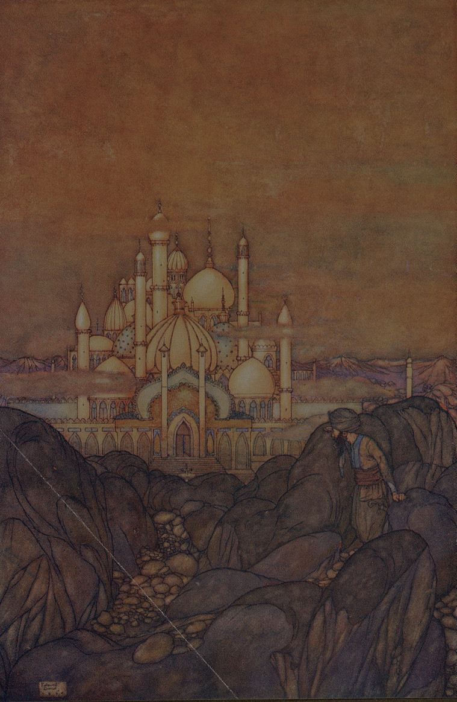
En su camino se encontrarán con todo tipo de peligros a la altura de los Mitos de Cthulhu que
deberán sortear o combatir y presenciarán prodigios dignos de las 1001 y noches.
La expedición
La historia está dividida en dos tramas paralelas. Por el día, mientras avanzan, se encontrarán
con obstáculos que deberán afrontar con valor, desde emboscadas de enemigos y crecidas de ríos, hasta aves
de Roc y arenas movedizas.
Por la noche, mientras la expedición descansa, a la luz de las hogueras se desarrollará una segunda
trama, menos aventurera y más de misterio e investigación. Alguna entidad maligna se ha infiltrado en
la expedición y está provocando muchos problemas. Si quieren que este viaje llegue a buen puerto
deberán encontrar y deshacerse de esa entidad maligna.
Antecedentes: la primera expedición a la Ciudad de Bronce
***
La ruta hacia la Ciudad de Bronce
La ruta que debe seguir la expedición empieza en Damasco y bajará hasta Egipto pasando por Jerusalem y
atravesando el desierto del Sinaí. En Egipto pasarán por El Cairo y tras abandonar el delta del Nilo y se
adentrarán en la región del Magreb (actuales, Marruecos, Argelia, Túnez y Libia). Una vez en el Magreb
deberán adentrarse en el Sahara hacia lo desconocido y buscar la ruta de la mítica Ciudad de Bronce.
Cómo introducir a los personajes
***
Gentes de la expedición
***
Recursos de la expedición
***
Se buscan valientes
El hijo del Califa está montando una expedición a lo desconocido. Promete gloria y fortuna a los que se
enrolen en su expedición y calla las terribles formas de morir que podrían pasarte.
***
Empieza el viaje
***
***
1ª etapa
***
Obstáculo: La garganta
La caravana debe pasar por una estrecha garganta. El problema es que es un lugar perfecto para
una emboscada. Y un derrumbe podría sepultar la caravana.
***
Misterio: Faltan provisiones
El cocinero de la caravana está enfadado alguien ha tocado sus tarros de especies y le falta sal.
***
2ª etapa
***
Obstáculo: Crecidas
Las lluvias otoñales han sido abundantes los últimos días y el rio que tienen que vadear va con
crecida.
3ª etapa
***
Obstáculo: La pirámide desenterrada
Atravesando la tierra de los faraones, la expedición se encuentra una pirámide que parece haber desenterrado
el viento y las dunas. ¿Qué podría pasar por entrar en ella y buscar los tesoros que los reyes de Egipto enterraban
con ellos?
***
4ª etapa
***
5ª etapa
***
6ª etapa
***
7ª etapa
***
Entrando en la ciudad
***
Rompiendo la maldición
***
El Pequeño Consejo
Esta historia esta pensada para ser jugada con niños y niñas de entre 8 y 15 años. Es por ello que
tendrían que tener la desventaja Joven (menor o mayor).
Es un conjunto de aventuras para un grupo de niños y niñas que viven en las calles de Bagdad. El
grupo irá descubriendo los horrores que esconden los oscuros callejones de su ciudad y descubrirán
un plan demoníaco para sumir a la ciudad en la perdición.
Si no se quiere jugar con niños, algunas partes del cuento salvaje pueden ser adaptados fácilmente
a personajes adultos, pero creo que donde se le saca jugo y diversión a esta campaña es jugando con
personajes jóvenes.
Puedes usar esta aventuras como una introducción para tus shahriars. Se conocieron de críos
en las calles de Bagdad y cuando terminen está campaña les quitas la desventaja Joven
y empiezan sus aventuras como personas adultas.
Junto con Joven deberían ponerse la desventaja de Hija de un zapatero remendón, aunque
excepcionalmente alguno de tus shahriars podría ser incluso rico y de buena familia, pero
le gusta mezclarse con las niñas y niños de las calles de Bagdad.
Puedes usar "Historia de la noche en el cementerio" como aventura introductoria para que se conozcan y luego
la trama general. Al final de este cuento salvaje hay una serie de aventuras que no siguen la trama general,
pero que puedes intercalar entre medio.
- Historia de la casa encantada en el zoco de los tejedores
- Historia de la botella encontrada en el fondo del rio Tigris
- Historia del dibujante de Laylays
Aviso de spoiler: Si os gusta el clásico de los 80, Juegos de guerra, creo que la trama general de esta campaña
os gustará.
Interpretando a jóvenes
Aquí van una serie de consejos a la hora de dirigir partidas con personajes jovenes. Pero recuerda,
son consejos, eres muy libre de llevarlo como tu quieras.
Consejos a la hora de llevar shahriars jóvenes
Las aventuras con PJ menores o adolescentes tienen sus propias reglas porque su mundo es diferente
al de los adultos.
Los adultos son tontos
Está premisa es básica. Las personas adultas no son tontas per se, son tontas porque nunca
harán caso a un niño. Las ideas de los críos son solo fantasías de sus cerebros sobreexcitados y
no perderán un segundo en corroborarlas. Es importante para la ambientación que vean muy claro que
por ese lado no tendrán la más mínima ayuda. Esto hará que si haces que al final aparezca un adulto
para ayudarles sea más impactante.
Puede haber adultos que les hagan caso, pero son tan extraños y raros que el resto de adultos
les tratan igual que a los niños.
Es un mundo para adultos
Para bien o para mal es un mundo de adultos, todo está pensado para esos gigantes que no escuchan.
La ropa, las armas, las herramientas son tamaño adulto. No pueden hacerse pasar por un mercader
poniéndose su ropa, tendrán que subirse uno encima del otro o usar zancos.
Por otro lado será más fácil librarse de grilletes o reptar por las alcantarillas cuando mides y
pesas mucho menos.
Nunca eres una amenaza
Los adultos nunca te consideran una amenaza, así que hay que aprovecharse de ello. Puedes fingir
llorar para que tu captor baje la guardia y cuando se gire golpearle con algo contundente. Solo
un gran número de niñas y niños armados y con intenciones agresivas podría ser considerado
una amenaza.
Nadie se fija en los niños
Puedes entrar en sitios en los que los adultos no pueden, principalmente porque no eres una
amenaza. Solo necesitas una buena excusa. Vete al palacio del Califa con una bandeja de viandas
y podrás moverte por las estancias como quieras hasta acercarte al Califa y contarle que van a
asesinarle. Si intentas pedir una audiencia se reirán de tí y puede que manden azotarte.
No puede faltar una mascota
La pandilla tiene que tener una mascota. No tiene porque ser un perro o un gato, puede ser un
atolondrado y torpe camello, un viejo y tozudo mulo, un ae rapaz a que curaron una ala rota, etc.
En general, la mascota debes darles un ventaja como poder viajar más rápido, mover grandes pesos o
mandar mensajes, etc. Pero también debe darles una desventaja, como que hace mucho ruido, siempre
rompe cosas, etc.
Ganarse la vida en las calles de Bagdad
Un elemento definitorio de tu PJ joven es como se busca la vida en las calles de Bagdad,
no solo va a marcar su forma de vida sino también su ética y su relación con la ley.
Además, para compensar la desventaja Joven que implica jugar este cuento, los shahriars van
tener un bono de un nivel, incluso por encima de su atributo, de una habilidad basada en como
se ganan la vida en las calles de Bagdad.
Robando: Te ganas la vida de cortabolsas. Recorres el zoco y aprovechando las grandes multitudes
dejas a los mercaderes ricos sin el molesto peso de sus bolsas de dinero. Ganas un nivel de Latrocinio.
Mendigando: Mendigas por las calles de Bagdad apelando a la buena fe y caridad de sus gentes.
Puede que tengas una discapacidad o solo lo finjas, pero desde luego ha aprendido a fingir pena para aflojar
las bolsas de tu audiencia. Ganas un nivel de Persuadir.
Haciendo recados: Te dedicas a hacer recados por una propina. Cargas con paquetes, llevas mensajes, etc.
siempre corriendo arriba y abajo de las calles y callejuelas de Bagdad. Ganas un nivel Atletismo.
***: ***. Ganas un nivel de ***
Historia de la noche en el cementerio
Dentro del Pequeño Consejo hay un rito de paso para sus integrantes, pasar una noche en un cementerio.
***
Historia del mielero
El cadáver de Haquim "el mielero" ha aparecido en las orillas del río Tigris con
signos de violencia. Haquim cuidaba del Pequeño Consejo y van a buscar y ajusticiar a su asesino.
Haquim era un anciano que vivía de vender en el zoco dulces que hacía con la miel de sus abejas.
Era amable con los niños y niñas de la calle y siempre tenía un trozo de panal lleno de rica miel
para darte si no habías comido. No tenía familia ***
El pequeño consejo se reunirá está noche para hablar de este terrible suceso.
Parece ser que la policía no está muy interesada en investigar la muerte de Haquim, así
que el consejo busca voluntarios para esclarecer este asesinato. Haquim siempre fue bueno con
los pilluelos de la calle y se lo deben.
El consejo aceptará voluntarios y luego designará al resto de tu mesa a dedo, bien por su fuerza,
su destreza, su inteligencia o su carisma. Otorga un deseo a todos los que se presenten voluntarios.
Pesquisas previas
Según los pescadores que lo sacaron del río, le habían destripado y le habían arrancado los pulgares
y los dedos gordos de los pies.
Preguntando, la ultima vez que se le vió con vida fue la noche anterior saliendo de la medina en
dirección a su choza en las afueras donde tenía sus colmenas.
Si buscan enemigos o personas que le desearan el mal a Haquim, no encontrarán ninguna. Era una
buena persona, respetuoso de la ley, generoso y bondadoso y muy querido por la gente.
Visitando su casa
Si visitan su choza y sus colmenas, verán que alguien desordenó todas sus cosas como si buscara
algo. Está todo roto y tirado por el suelo. Y una tirada de Investigar denotará signos de lucha
en la escena y que falta una gran alfombra que se debió usar para deshacerse del cuerpo en el río.
El agresor debía ser muy muy fuerte o debían ser mínimo dos, ya que Haquim estaba bastante entrado
en carnes.
Si buscan entre las colmenas verán una destruida a hachazos. Alguien ha sacado una funda de madera de entre
los panales de miel la ha abierto y la ha tirado. En su interior de terciopelo hay huecos para fichas de shatranj. Si
buscan cerca encontrarán todas las piezas blancas, pero ninguna negra. Parece que esas piezas era lo que buscaba
el asesino. Según que tirada hagan podrán saber unas cosas u otras.
- Supervivencia les dirá que el asesino tendrá bastantes picaduras de abejas y por lo menos durarán 3 días.
- Investigar les dirá que las fichas de ébano no eran de esa caja ya que han dañado el terciopelo al meterlas.
Debieron comprar la caja, tirar las piezas negras y meter las que quería esconder.
Colándose en el maristán
Si quieren examinar el cadáver, deberán colarse en la morgue del maristán por la noche.
Deberán evitar a los celadores (Notar d6) que vigilan el maristán y los enfermos por la noche.
Si los detectan los echarán a la calle después de darles una buena zurra.
La visión del cadáver, destripado, con los dedos cortados y algo hinchado de una
noche en el río tiene una TPC d6. Desde luego no ayuda la escasa iluminación, el resto de los
cadáveres y los gritos de los perturbados encerrados en las las cercanas celdas.
Si examinan el cadaver, una tirada de Notar detectará una cicatriz por quemadura con forma de sello
de Soleimán, que ninguno de tus shahriars puede reconocer.
Historia del las piezas de ébano del shatranj
Haquim murió para robarle sus piezas de ébano de un antiguo juego de shatranj. Habrá que averiguar
quien contrato al asesino y porque es tan importante ese juego.
Déjales moverse por la ciudad buscando información. Estos son algunos item de información que
pueden sacar.
- En el zoco de alquimistas reconocerán la cicatriz como el sello de Soleimán. Algunas
sociedades secretas usan este símbolos como señal para reconocerse entre sus miembros.
- Si enseñan la caja de piezas a diferentes artesanos nadie ve nada raro. es una funda muy
corriente y barata.
- si visitan la Casa de la Sabiduría, sabrán que el poderoso rey Soleimán usaba el shatranj para
entrenar tácticas militares con sus generales. Pero aunque hay tableros muy valiosos ninguno
es tan especial como para matar.
- Si preguntan a los farmacéuticos por un hombre con terribles picaduras de abejas, uno
les describirá a un hombre alto, muy fuerte y rapado con muchas cicatrices de heridas muy profundas
por todo el cuerpo.
- Si buscan a jugadores de shatranj, les contarán montones de anécdotas pero nada útil. Salvo que
el rey Soleimán fue el mejor jugador de Shatranj de su época.
- Si usan contactos en los bajos fondos parece que hay un grupo sectario nuevo en la ciudad
buscando a alguien por las preguntas que hacen. Si tienen la descripción del farmacéutico
confirmarán la descripción.
- Un experto en madera les dirá que la caja huele a sándalo, una madera muy cara que seguro se usó,
como incrustaciones en las piezas muy valiosas seguramente de ébano.
Con toda esta información debería reunirse con el Pequeño Consejo para informar y decidir los
siguientes pasos
***
Historia del pasillo prohibido de la Casa de la Sabiduría
El shatranj es un artefacto mágico por el que La progenie de la Luna Creciente ha matado, pero nadie parece
saber que lo hace tan deseado. La única solución será entrar en el pasillo prohibido de la Casa de la Sabiduría
y consultar en sus tomos malditos como funciona la magia del shatranj.
***
El shatranj de Soleimán
Este juego de shatranj, creado por el poderoso soberano Soleimán, tiene en cada pieza un poderoso mared. Cuando
se mueve la primera pieza de marfil, el juego empieza una partida con las piezas de ébano. Cada vez que se mueve
una pieza de marfil, el mared imbuido en el tablero establece un movimiento de una pieza de ébano y el mared imbuido
en ella genera con su magia unas ilusiones muy realistas de ejércitos que se mueven o atacan al ejercito del jugador
con las piezas de marfil.
Los peones son infantería, los caballos caballería ligera, los elefantes caballería pesada y carros de guerra y
las torres fortalezas y maquinaria de asedio.
Soleimán creo este artefacto con el objetivo de practicar y aprender tácticas de guerra. El tablero simula
movimientos enemigos, ataques sorpresa, huidas, reagrupaciones, etc. y el jugador humano mueve sus fichas y
sus ejércitos respondiendo o adelantándose a los movientes del enemigo. Cuando el mared del tablero lo considera
oportuno otorga la victoria al jugador ébano o marfil.
Las ilusiones pueden ser a veces muy realistas y podrían suplantar incluso a mensajeros y oficiales que darán
ordenes de atacar objetivos reales.
Historia de como el Califa se preparó para la guerra
Los espías y exploradores del Califa traen malas noticias, los enemigos del califa están preparándose
en la frontera para atacar Bagdad. alguien deberá avisar al Califa de que todos los movimientos enemigos
son ilusiones.
***
Historia de como el Pequeño Consejo evito una guerra
Las noticias de guerra corren por las calles de la ciudad, solo encontrando a la Luna Creciente y quitándoles
el juego podrán acabar con esta locura.
***
Historia de la casa encantada en el zoco de los tejedores
Se dice que al final del zoco de tejedores hay una casa vacía en la que nadie entra. Sería un refugio
perfecto para el Pequeño Consejo. Pero primero hay que comprobar que los rumores de que esta encantada
son correctos o no. Esta historia de una casa encantada se puede jugar en cualquier momento ya que está aislada
de las historias.
***
Historia de la botella encontrada en el fondo del rio Tigris
Al sacar las redes del rio una pequeña niña que se dedica a la pesca ha sacado una vieja botella con un
extraño sello en el tapón. No se atreve a abrirla por las historias que ha oído de yinns malvados que te
convierten en asno así que se la entrega al Pequeño Consejo para que la abra.
***
Historia del dibujante de Laylays
Están apareciendo laylays (rayuelas) con extraños símbolos por toda la ciudad y nadie sabe quien los
está dibujando. Un par de pillastres han sido azotados por los mercaderes culpándolos de ensuciar las calles.
Habrá que buscar al dibujante para averiguar qué pasa.
***
Cuentos salvajes que puedes meter dentro de esta campaña
Hay una serie de cuentos salvajes que podrían ser protagonizados por tus pillastres e intercalarlos
dentro de la trama principal de esta campaña.
- Los encuentros de Al-Rashid en el puente de Bagdad
- El viajero del tiempo
La llegada del cometa
Como los astrónomos habían predicho, el cometa Aiin se acerca a la Tierra, cosa que hace cada 320 años.
Se dice que en su interior reside parte de la esencia fragmentada de la deidad conocida como Suc'Naath.
Dentro de unas semanas pasará muy cerca de nuestro planeta y sería el momento perfecto para intentar
liberara a este dios exterior de su maldición.
La Mano Dorada, secta de adoradores de Suc'Naath, no puede perder esta oportunidad de librar a su
amo de la maldición que lo mantiene atado a Azathoth. Su sumo sacerdote Faisal, que porta la esencia de
Suc'Naath en sus genes, debe encontrar la última parte de la esencia que le falta, una estatua perdida
en el tiempo y el espacio.
Si consiguen juntar sus genes, con la estatua perdida y la esencia que hay en el cometa, Suc'Naath
podrá abandonar su lugar entre los dioses danzantes de Azathoth y aparecer en nuestro mundo para
llevar a cabo sus terribles planes apocalípticos y conceder a sus adoradores poder e
inmortalidad.
Aparece el mago
Comienzo: Bagdad
Un hombre sabio con fama de tener poderes mágicos busca a valientes que le ayuden a explorar
unas ruinas prohibidas a tres días a caballo de Bagdad. Paga bien, pero la gente tiene miedo a
ese lugar maldito.
***
Las ruinas de Babilonia
Comienzo: Ruinas de Babilonia
En lo profundo de las catacumbas de Babilonia hay una estatua muy especial, hecha de
piedra negra que representa un tornado de la que salen caras agonizantes. En ella reside un
tercio de la esencia de Suc'Naath.
***
La estatua, a pesar de ser piedra, cambiar de forma cuando parpadeas y cualquiera que la examine
deberá hacer una TPC d6. Las caras desaparecen y aparecen cada vez que cierras las ojos y los
vuelves a abrir. Si se falla la TPC podrás reconocer a familiares, amistades y seres queridos
en general en las caras de la estatua.
El plan de la Mano Dorada
***
Para hacer una tortilla hay que romper huevos
Comienzo: Montes Elburz, cordillera del Caucaso
Solo hay una forma de conseguir combinar los tres fragmentos de la esencia de Suc'Naath,
que Faisal viaje por el espacio hasta el cometa Aiin con la estatua. Según las leyendas,
solo hay un ser que pueda viajar hasta sol, un ave de Ruc. Pero para poder domarlo necesitan
un huevo a punto de eclosionar y que lo primero que vea sea a su jinete, Faisal.
Para ello deberán ir a las laderas de los monte Elburz y robar un huevo de Roc sin que sus
progenitores los maten.
***
La traición
Comienzo: Bagdad
Faisal ya tiene todo lo que necesita. Pero antes de ejecutar su plan final, debe solucionar
unos cabos sueltos, tus shahriars. Así que piensa cortarles las gargantas mientras duermen, pero
antes y por sus servicios les montará una fiesta que no olvidarán nunca.
***
A las estrellas
Comienzo: En la cima del Monte Ararat (Montes Elburz)
Todo está preparado en la cima del monte Ararat. Faisal solo necesita que sea de noche y
cuando el cometa Aiin sea visible, montar en su Roc y, junto con la estatua, salir volando al espacio
exterior. Cuando se acerque al cometa, se fusionaran las 3 esencias y Faisal se convertirá en el avatar
de Suc'Naath para volver y hacer su voluntad en la Tierra.
***
Otros cuentos salvajes
En sus andanzas por las tierras de las 1001 noches, tus shahriars pueden encontrarse con
otras aventuras. Aquí tienes algunas de ellas donde podrás explorar lugares míticos, combatir a
todo tipo de seres malvados, engañar a yinns o ser engañado por ellos y conseguir prodigiosos
objetos de gran poder mágico.
La isla viviente
Comienzo: En el mar
En mitad del mar aparece una pequeña isla cubierta de exuberante vegetación. Es una buena
oportunidad para conseguir víveres frescos y explorar este extraño lugar.
El vigía del barco avista un islote con bastante vegetación y arboles no lejos
del barco. Igual pueden desembarcar y conseguir víveres. De hecho, con una tirada de
Supervivencia puede que detecten palmeras y cocos.
El barco se acercará cerca de la isla y podrán desembarcar en un bote. Pueden conseguir
1d10x10 dinares de oro en frutas y materiales si se dedican a recolectar mínimo una hora.
Cosas raras que suceden en el islote:
- No hay vida animal en el islote. Es muy raro que no haya ningún tipo de ave ni
alimañas. si intentan pescar verán que los peces tampoco se acercan al lugar.
- Si excavan lo suficiente llegarán a un estrato que tiene un aspecto extraño entre gomoso
y alquitranoso. Si vuelven a un lugar donde han retirado tierra, verán que el agujero está
tapado de nuevo. El qatram odia la luz del sol directa y se tapa de nuevo.
- Si alguien se queda en el barco podrá notar pequeñas sacudidas en la isla. Parece como
flotará y se moviera con el oleaje.
- Si se paran a escuchar podrán (un avance en Notar) escuchar un susurro que dice
Tekeli-li, algún tipo de amenaza o aviso en el idioma de los Antiguos, los creadores
de los qatrams.
- Si bucean, verán que la isla no emerge del fondo, sino que flota sobre el agua. Se podría
bucear al otro lado de la isla por debajo de ella.
Cuando tengan suficientes sospechas, permíteles hacer una tirada de Mitos para saber
que están sobre un qatram de dimensiones gigantescas.
***
Los encuentros de Al-Rashid en el puente de Bagdad
Comienzo: Bagdad
El califa de Bagdad tiene la costumbre de pasear disfrazado de mercader junto a su
visir y su porta-alfanjes. Habla con su pueblo y escucha sus historias. En alguna ocasión
ha escuchado historias tan triste que se ha apiadado de la persona y la ha colmado de regalos Y
dinero. Tampoco ha sido raro que haya encontrado a una persona tan excepcional que le ha
puesto a su servicio.
***
El viajero del tiempo
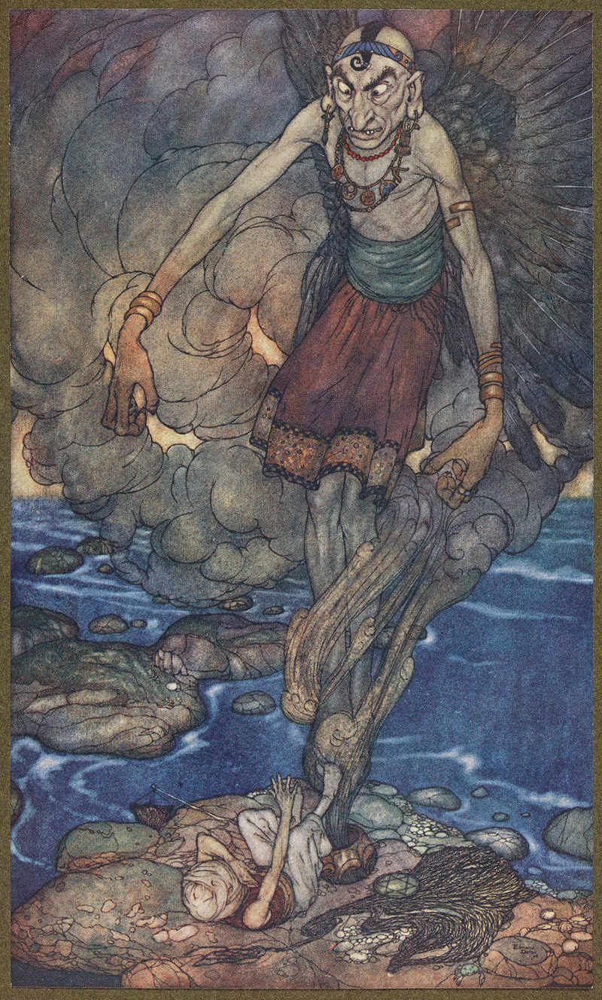
Comienzo: Cualquier ciudad grande
Las obras del nuevo palacio del califa han encontrado una singular vasija con un sello de
plomo mientras excavaban los cimientos. Nadie quiere abrirla por si saliera un yinn loco de rabia
y buscando venganza.
En realidad, dentro de la botella hay un viajero en el tiempo que dice que se metió dentro para
conocer las maravillas del futuro. Puede ser eso, pero, tal vez escapaba de algo de su pasado o
fue condenado a esa prisión extradimensional por sus terribles crímenes. La tarea de tus
shahriars será averiguarlo.
***
Buscando la inmortalidad
Comienzo: Bagdad o cualquiera otra gran ciudad
A la astrónoma *** le quedan meses de vida, la lepra está acabando con ella. Pero ella
no esta preparada para dar el gran paso, las estrellas que tanto ama todavía guardan miles
de secretos que desea desvelar. Es por ello que esta dispuesta a lo que sea para seguir viva
y estudiando los cuerpos celestes que tanto le fascinan.
Un adepto de la Luna Creciente ha estado hablando de que unos yinns a los que representan
pueden sacar su mente de su decrepito y enfermo cuerpo y meterlo en en un ingenio mecánico
que le permitirá volar entre las estrellas. Ella está dispuesta a dar el paso, pero necesita
llegar al refugio de los yinns y necesita unos guardaespaldas que la protejan durante el
viaje a las colinas al noreste de Bagdad.
***
Tesoros
En 1001 Ghūles hay situaciones en las que los shahriars podrán buscar botines y tesoros, puede ser en el interior
de una cueva de ladrones, en el laboratorio de un malvado hechicero o al derrotar una bestia sanguinaria
venida de una dimensión paralela.
Tiradas de botín
Muchas de las situaciones o peligros a los que se enfrentarán los shahriars tendrán una tirada de botín.
Esta tirada puede ser un valor de d4 a d12 o incluso más. Siempre que se derrote a un monstruo de los Mitos,
si la descripción de este no dice lo contrario, se podrá hacer también una tirada de botín de igual valor
al TPC del monstruo más modificaciones.
Tras derrotar al monstruo o resolver la situación, uno de los shahriars podrá hacer la tirada de botín.
El botín también exige que tengan un mínimo tiempo de buscarlo. Si acaban con un shoggoth y tienen que
salir corriendo porque un rio de lava inunda su estancia no podrán intentar conseguir botín. Según los
éxitos que consigan podrán tirar en diferentes tablas:
- Tabla de riquezas (1 éxito).
- Tabla de objetos especiales (2 éxitos). Solo puede cogerse una vez por tirada de botín.
Si se consigue:
- 1 éxito puede tirar 1 vez en la tabla de riquezas.
- 2 éxitos puede tirar 2 veces en la tabla de riquezas o 1 en la tabla de objetos
extraordinarios.
- 3 éxitos suponen, 3 tiradas en la tabla de riquezas, 1 en la de riqueza más 1 en la de
objetos extraordinarios, ...
Tras decidir como gastar su botín podrán tirar en la Tabla de Riquezas o en la Tabla de
objetos especiales.
| Tabla de Riquezas |
| 1d12 |
Descripción |
Valor en dinares |
| 1-4 |
Algunos dinares y monedas de cobre y plata |
1d10 x 10 |
| 5-6 |
Pequeños objetos de oro como vasos, cubiertos o peines |
2d10 x 20 |
| 7-8 |
Piedras semipreciosas |
1d10 x 50 |
| 9-10 |
Buena cantidad de dinares |
1d10 x 100 |
| 11 |
Joyas de oro con piedras preciosas |
1d10 x 200 |
| 12 |
Piedras preciosas de gran valor |
1d10 x 500 |
Dentro de los objetos especiales podemos tener armas, cuerpo a cuerpo o a distancia, armaduras,
objetos mundanos curiosos y objetos mágicos.
| Tabla de Objetos especiales |
| 1d10 |
Tipo |
| 1-3 |
Arma cuerpo a cuerpo
Tira en la tabla de armas cuerpo a cuerpo
y luego en la de capacidades. |
| 4-5 |
Arma a distancia
Tira en la tabla de armas a distancia y luego en la de
capacidades. |
| 6-7 |
Objetos mundanos
Tira en la Tabla de Objetos mundanos. |
| 8 |
Armaduras y protecciones
Tira en la Tabla de Armaduras y protecciones. |
| 9 |
Objetos mágicos
Tira en la Tabla de Objetos mágicos |
| 10 |
Grimorio
Tira en la Tabla de Grimorios y luego en la de
modificaciones. |
| Tabla de Armas cuerpo a cuerpo |
| 1d10 |
Nombre |
| 1-2 |
Cimitarra |
| 3-4 |
Alfanje |
| 5 |
Jambia |
| 6 |
Shibriya |
| 7 |
Khopesh |
| 8 |
Shotel |
| 9 |
Katar |
| 10 |
Tabar Shishpar |
| Tabla de capacidades de Armas cuerpo a cuerpo |
| 1d10 |
Capacidad |
| 1-4 |
Hecha por herreros yemeníes, +1 a pelea +1 a daño |
| 5-6 |
Afilada, +2 a daño |
| 7 |
Digna de un califa, x10 su precio normal |
| 8 |
Mágica, se considera mágica a la hora de inmunidades, +1 a pelea y +1 a daño |
| 9 |
Protectora, +2 a parada |
| 10 |
Legendaria, se considera mágica a la hora de inmunidades, +2 a pelea y +2 a daño.
Tiene nombre propio y perteneció a alguien famoso. |
| Tabla de Armas a distancia |
| 1d8 |
Nombre |
| 1-2 |
Honda |
| 3-4 |
Arco |
| 5-6 |
Azagaya |
| 7 |
Arco recurvo |
| 8 |
Chakram |
| Tabla de capacidades de Armas a distancia |
| 1d10 |
Capacidad |
| 1-4 |
De excelente calidad, +1 a pelea +1 a daño |
| 5-6 |
Empaladora, +2 a daño |
| 7 |
Digna de un califa, x10 su precio normal |
| 8 |
Mágica, se considera mágica a la hora de inmunidades, +1 a pelea y +1 a daño |
| 9 |
De tirador de primera, dobla los rangos de alcance |
| 10 |
Legendaria, se considera mágica a la hora de inmunidades, +2 a pelea y +2 a daño.
Tiene nombre propio y perteneció a alguien famoso. |
| Tabla de Armaduras y protecciones |
| 1d6 |
Nombre |
| *** |
*** |
| Tabla de capacidades de Armaduras y protecciones |
| 1d10 |
Capacidad |
| 1-2 |
Reforzado, +1 Armadura |
| 3-4 |
Ligero, 3/4 del peso normal |
| 5 |
Digna de un califa, x10 su precio normal |
| 6 |
Antimagia, -1 a todos los daños de origen mágico |
| 7 |
Protectora, -1 a todos los daños de origen mágico, +1 a armadura |
| 8 |
Legendaria, -1 a todos los daños de origen mágico, +2 a armadura. Tiene
nombre propio y perteneció a alguien famoso. |
***
| Tabla de Objetos mundanos |
| 1d10 |
Objeto |
| 1 |
Dados trucados |
| 2 |
Instrumento musical de calidad |
| 3 |
Tablero de Shatranj y piezas de marfil y ébano |
| 4 |
Maqueta precisa del sistema solar |
| 5 |
Dados trucados |
| 6 |
Paracaidas |
| 7 |
Tinta invisible |
| 8 |
*** |
| 9 |
*** |
| 10 |
*** |
***
| Tabla de Objetos mágicos |
| 1d10 |
Objeto |
| 1 |
Vasos canopos del Faraón negro |
| 2 |
Ventana de Leng |
| 3 |
Azufre rojo |
| 4 |
Llave de plata |
| 5 |
Polvo de Ibn-Ghazi |
| 6 |
Concha roja |
| 7 |
Botella sellada |
| 8 |
Semilla de vergel |
| 9 |
Kohl de invisibilidad |
| 10 |
Alfombra volante |
***
| Tabla de Grimorios |
| 1d8 |
Objeto |
| 1 |
Liber Ivonis (Libro de Eibon) |
| 2 |
Séfer HaRazim - El libro de los secretos |
| 3 |
Séfer Raziel HaMalaj - El Libro del Arcángel Raziel |
| 4 |
Kitab an-nawamis - Libro de las leyes |
| 5 |
Anales de los Antiguos |
| 6 |
Pnakotica - Manuscritos Pnakóticos |
| 7 |
Iching |
| 8 |
*** |
| Tabla de Modificaciones de Grimorios |
| 1d6 |
Modificación |
| 1 |
Traducción |
| 2 |
Incompleto |
| 3 |
Anotado |
| 4 |
*** |
| 5 |
*** |
| 6 |
*** |
Tesoros míticos
***
Anillo mágico
***
Referencia: Historia de Aladino y de la lámpara mágica (n. 731-774)
***
Armas del principe Diamante
cogió un cajón que había en otro agujero del muro, lo abrió y sacó de él un arco
de oro con sus flechas, una espada de acero chino y un puñal con el puño de jade, y se
los entregó a Diamante, diciéndole: "Este arco y sus flechas han pertenecido al profeta
Saleh (¡con él la plegaria y la paz!). Esta espada que es conocida bajo el nombre
de Escorpión de Soleimán, es tan excelente que si se golpeara con ella una montaña
la partiría como jabón. Y por último, este puñal, fabricado en otro tiempo por el
sabio Tammuz, es inapreciable para quien lo posee, porque preserva de todo ataque
la virtud oculta en su hoja".
Referencia: Historia espléndida del príncipe Diamante (n. 910)
***
Arco del profeta Saleh
***
Escorpion de Soleimán
El Escorpión de Soleimán es un dao de acero con empuñadura de jade. Está tan afilado que
podría cortar cualquier cosa.
Niega hasta los 6 puntos de armadura de cualquier tipo, natural, mágica,
de obstaculos, etc. Por ejemplo, un qatram con dureza de normal de 18, tendría 14 de dureza
si es golpeado por esta espada. La espada quita el bono de 4 de su armadura natural.
También reduce en 6 puntos la consistencia de los objetos en caso de que
quieras romperlos. Unas cadenas de consistencia 12 pasan a tener 6 si son golpeadas con
esta hoja.
Puñal del sabio Tammuz
***
Caballo de ébano
... un caballo de madera de ébano, de la calidad más negra y más
rara, incrustado de oro y pedrerías, y enjaezado maravillosamente con una silla,
una brida y unos estribos como sólo llevan los caballos de los reyes. Así es
que el rey Sabur quedó maravillado hasta el límite de la maravilla y desconcertado
por la belleza y las perfecciones de aquel caballo; luego dijo: "¿Y qué virtudes
tiene este caballo de ébano?"
El persa contestó: "¡Oh mi señor! las
virtudes que posee este caballo son cosa prodigiosa, hasta el punto de
que cuando uno monta en él, parte con su jinete a través de los aires con
la rapidez del relámpago, y le lleva a cualquier sitio donde se le guíe,
cubriendo en un día distancias que tardaría un año en recorrer un
caballo vulgar".
Referencia: Historia mágica del caballo de ébano (n. 414-431)
El caballo de ébano es una figura de madera de ébano de un caballo trotando a
tamaño real tremendamente realista y detallada. Tiene unas crines de pelo real,
espuelas de plata pura, una silla cubierta de pedrería y finas sedas y unas riendas
de hilo de oro y plata. Es tan realista que si no fuera porque está inmóvil pasaría por real.
Este caballo fue creado por un loco artesano y alquimista persa (aunque otros dicen
que de origen hindú), que vacío la figura y la relleno de un suero basado en el líquido
que usan los Mi-Go en sus tubos cerebrales. En este líquido están flotando ciertos
órganos extraídos de un ave de Ruc (Shantak) que le confieren al caballo algunas de
las sus maravillosas propiedades que tiene el caballo.
Al presionar y mover las ruedas, tornillos y palancas que hay escondidas en su cabeza y
debajo de la silla el caballo se estimula diferentes partes de los órganos de ave de Ruc
de su interior. Esto le permite elevarse y volar. Se mueve muy rápidamente si se desea,
pudiendo recorrer en un día lo que un caballo recorrería en un año.
Como el ave de Ruc del que saca sus increíbles capacidades, puedes salir al espacio exterior
y viajar a otros planetas sin sufrir ningún daño. Deberás llevar suficientes provisiones
y agua para sobrevivir durante lo que dure el viaje.
A nivel de juego, una persona con Afinidad mágica puede gastar un PP y tras pasar una
tirada de Pilotar te llevará en un día máximo a cualquier parte del mundo conocido.
Para distancias más cortas puede ser casi instantáneo, por ejemplo, si te mueves entre
zonas de una ciudad y horas si te mueves entre ciudades del mismo país o región. Ir de
Bagdad a Basora podría llevar una hora de viaje.
Es importante saber llegar a ese lugar. No puedes ir a sitios de los que no conoces
la ruta de viaje.
No puede volar con precisión, no podrías elevarte con él y atacar a desde el aire a tus
enemigos o escapar de una gruta que está colapsando esquivando piedras que caen del techo.
De hecho, no debería usarse en interior, solo al aire libre o en estancias muy grandes
con ventanales o claraboyas de gran tamaño, como las estancias del palacio de un califa.
Si se fracasa la tirada de Pilotar, el caballo se descontrola y los instintos del
ave de Ruc hacen que vaya a algún lugar que visito en vida. Deberás hacer una tirada
en la Tabla de perdido en el tiempo y el espacio para saber dónde acabas.
Puedes acabar, por ejemplo, si sobrevives al hambre y la sed, en el centro del
universo donde habita el poderoso y lobotomizado Azathot rodeado de sus servidores.
Si es algún momento el líquido de su interior se derrama, los órganos del ave de Ruc
morirán y el caballo perderá sus mágicas habilidades.
No tiene un precio real, nadie debería poder comprarlo venderlo. Debería usarse
como la dote perfecta para poder casarte con el hijo o la hija de un califa o
como presente de paz entre reinos en guerra.
Las espuelas, la silla y las riendas no son necesarias para el funcionamiento del
caballo y pueden ser sustituidas por otras más baratas sin problema. Estarían
valoradas, si quieres venderlas, en unos 10.000 dinares.
Figura-reloj de pavos reales
... una gran fuente de plata, en medio de la cual se encontraba un
pavo real de oro rodeado por veinticuatro pavas reales del mismo metal.
Y el rey Sabur los miró con asombro, y encarándose con el rumí, le dijo:
"¡Oh sabio! ¿para qué sirven este pavo y estas pavas?"
El sabio contestó: "¡Oh mi señor! a cada hora que transcurre del día o
de la noche, el pavo da un picotazo a cada una de las veinticuatro pavas
y la cabalga, agitando las alas, y así sucesivamente cabalga a las veinticuatro
pavas, marcando las horas; luego, cuando ha dejado transcurrir el mes de esta
manera, abre la boca, y en el fondo de su gaznate aparece el cuarto creciente
de la luna nueva".
Referencia: Historia mágica del caballo de ébano (n. 414-431)
***
Gorro de cuero mágico
Y a la sazón se dijo Hassán: "¡No cabe duda! ¡Este gorro está encantado!
¡Y su encanto consiste en hacer invisible a quien lo lleva en la cabeza!" Y se puso
a bailar de alegría, diciéndose: "¡Alah me lo envía! ¡Porque, con este gorro en la cabeza,
puedo correr a ver a mi esposa sin que a mí me vea nadie!"
Referencia: Las aventuras de Hassan Al-Bassri (n. 614)
Este gorro de cuero que parece totalmente normal, otorga, sin embargo, un poder que
cualquier ladrón o asesino le gustaría tener. No tienen ningún tipo de sello o símbolo
así que la única forma de saber qué hace es ponérselo.
Gastando un deseo te haces invisible como si hubieras usado el poder de
Invisibilidad. No se consigue ninguna ventaja por avances, ni se puede usar modificares
de poder. La invisibilidad dura una hora no pudiéndose volver a usar hasta el día siguiente.
Ponerse o quitarse el gorro supone una acción. Puedes quitártelo en cualquier momento y
hacerte visible y volver a ponértelo y hacerte invisible las veces que quieras mientras
dure la hora.
El gorro tiene su maldición, está hecho de piel de Ghūl y si eres herido
llevándolo puesto, es como si te hubiera hecho una herida un Ghūl (Capacidades especiales:
Infección).
Figura de oro y joyas con trompeta
... consistía en un hombre de oro, incrustado de gemas y pedrerías
de gran precio, que tenía en la mano una trompeta de oro.
Y le dijo el rey Sabur:
'»¡Oh, sabio! ¿para que sirve esta figura?" El sabio contestó: "¡Oh mi señor! este
hombre de oro posee una virtud admirable! ¡Si le colocas a la puerta de la ciudad,
será un guardián a toda prueba, pues si viniese un enemigo para tomar la plaza,
le adivinará a distancia, y soplando en la trompeta que tiene a la altura de su
rostro, le paralizará y le hará caer muerto de terror!"
Referencia: Historia mágica del caballo de ébano (n. 414-431)
***
Lámpara mágica
Cuando estés en esta terraza, ¡oh Aladino! ten cuidado, porque enfrente de ti
verás una especie de hornacina al aire libre; y en esta hornacina, sobre un pedestal de
bronce, encontrarás una lamparita de cobre. Y estará encendida esta lámpara. ¡Ahora, fíjate
bien, Aladino! ¡cogerás esta lámpara, la apagarás, verterás en el suelo el aceite y te la
esconderás en el pecho enseguida! Y no temas mancharte el traje, porque el aceite que viertas
no será aceite, sino otro líquido que no deja huella alguna en las ropas. ¡Y volverás a mí por
el mismo camino que hayas seguido!
Referencia: Historia de Aladino y de la lámpara mágica (n. 731-774)
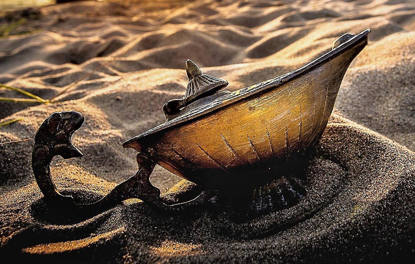
La lampara mágica es quizás el objeto más poderoso y a la vez el más peligroso de todos los
que podrás encontrarte en este mundo. Poderoso porque el efrit que en ella habita es un avatar
de Nyarlathotep que puede cumplir todas tus ordenes. Peligroso porque malinterpretará a propósito
tus ordenes para corromporte y cuando lo haya hecho para acabar con tu vida.
A diferencia de lo que hayas leído, no cumple tres deseos, cumple todas las ordenes del dueño de la
lampara, pero hay cosas más poderosas que él al que tiene una mezcla de respeto y miedo.
***
Saco encantado
***
Referencia: Historia de Juder el pescador o el saco encantado (n. 465-487)
***
Objetos mágicos
***
Alfombra volante
Y se encontró a tres hombres que disputaban entre sí. Y les preguntó: "¿Por qué
disputáis?" Le contestaron: "¡Por una cosa!" Él les dijo: "¿Una cosa? ¿Cuál?" Le contestaron:
"Tenemos esta alfombra que ves. A quien se ponga encima y la golpee con esta varita, pidiéndole
que le lleve aunque sea a la cumbre de la montaña Kaf, la alfombra le transporta en un abrir
y cerrar de ojos. ¡Y por poseerla nos disponíamos a matarnos en este momento!"
Referencia: Historia contada por el octavo capitán de policía (n. 949)
***
Azufre rojo
Y encontró dentro unos polvos rojos, y exclamó: "¡He aquí el Azufre rojo, ya
Hassán Abdalah! ¡Esta es la Kimia de los sabios y de los filósofos, todos los cuales
murieron sin dar con ella!" [...] "¡Oh pobre! ¡Ese polvo es la fuente misma de todas
las riquezas de la tierra! Y un sólo grano de este polvo basta para convertir en oro
los metales más viles. ¡Es la Kimia! ¡Es el Azufre rojo!, ¡oh pobre ignorante! ¡Con
este polvo, si quiero, construiré palacios más hermosos que éste, fundaré ciudades
más magníficas que ésta, compraré la vida de los hombres y la conciencia de los puros,
seduciré a la propia virtud y me haré rey, hijo de rey!" Y le dije: "Y con ese polvo,
¡oh mi señor! ¿podrás prolongar un sólo día tu vida o borrar una hora de tu existencia pasada?"
Referencia: Las llaves del destino (n. 792)
El Azufre Rojo o Kimia es una sustancia alquímica muy buscada que permite grandes prodigios
de transmutación. Cada dosis de azufre rojo que uses en un hechizo de transmutación baja el
nivel de dificultad en 10 nivel, con un mínimo de 1 nivel.
Batería de Bagdad
***
Referencia: *** (n. ***)
***
Botellas selladas
Al abrirla encontró un enorme jarrón de cobre dorado, lleno e intacto. La boca
estaba cerrada con un plomo que ostentaba el sello de nuestro señor Soleimán, hijo de David.
El pescador se puso muy alegre al verlo, y se dijo: «He aquí un objeto que venderé en el
zoco de los caldereros, porque bien vale sus diez dinares de oro». Intentó mover el jarrón,
pero hallándolo muy pesado, se dijo para sí: «Tengo que abrirlo sin remedio; meteré en el
saco lo que contenga y luego lo venderé en el zoco de los caldereros». Sacó el cuchillo y
empezó a maniobrar, hasta que levantó el plomo. Entonces sacudió el jarrón, queriendo
inclinarlo para verter el contenido en el suelo. Pero nada salió del vaso, aparte de
una humareda que subió hasta lo azul del cielo y se extendió por la superficie de la
tierra. Y el pescador no volvía de su asombro. Una vez que hubo salido todo el humo,
comenzó a condensarse en torbellinos, y al fin se convirtió en un efrit cuya frente
llegaba a las nubes, mientras sus pies se hundían en el polvo.
Referencia: Historia del pescador y el efrit (n. 3)
 A lo largo de todas las 1001 noches hay varios ejemplos de recipientes como botellas
o tinajas selladas con el sello se Soleimán de las que salen todo tipo de cosas,
desde maldiciones y monstruos hasta increíbles riquezas y efrits servidores. Y a veces
simples mensajes con relatos fantásticos de sus autores.
A lo largo de todas las 1001 noches hay varios ejemplos de recipientes como botellas
o tinajas selladas con el sello se Soleimán de las que salen todo tipo de cosas,
desde maldiciones y monstruos hasta increíbles riquezas y efrits servidores. Y a veces
simples mensajes con relatos fantásticos de sus autores.
Toda la magia de estas botellas se encuentra en el sello de Suleimán que crear una
dimensión de bolsillo dentro del recipiente. En esas mini-dimensión no pasa el tiempo
para tu cuerpo, pudiendo pasar milenios dentro, pero si pasa para tu mente que esta
encerrada por siglos en esta prisión dimensional. Quedar encerrado en la botella,
supone una TPC cada 10 años de prisión.
Es importante decir quien rompe el sello ya que a no ser que se diga lo contrario
será al único al que le afectará el contenido del recipiente.
Al romper el sello y abrirla, normalmente saldrá un humo negro del que se materializará
lo que haya dentro. Puedes decidir lo que sale o puedes tirar al azar en la siguiente tabla el
contenido de la botella.
| Tabla de Objetos en botellas selladas |
| 1d10 |
Objeto |
| 1 |
Arena: Al abrir la botella y darle la vuelta solo cae arena del desierto. |
| 2 |
*** |
| 3 |
*** |
| 4 |
*** |
| 5 |
*** |
| 6 |
*** |
| 7 |
Kohl de invisibilidad: El humo toma forma de una cajita lapislázuli con kohl
de invisibilidad en su interior. |
| 8 |
Un hombre con vestiduras antiguas: Empieza el cuento salvaje "El viajero del tiempo". |
Recuerda que Imán de lo extraño puede usarse en esta. Gastando un deseo podrás
repetir la tirada pero te quedas con el segundo resultado. En este caso solo
podrá usar esta ventaja aquel que abra la botella.
Concha roja
Y allí pregunté por el sabio Saadalah, y me guiaron, no sin cierto temor, a él;
y me presenté a él y le entregué cien mil dinares y el regalo del rey; luego le di el trozo de concha roja, y
después de explicarle el objeto de mi misión, le rogué que me preparara un amuleto contra los terribles
dolores que estaban llevando al borde de la locura a la hija de mi señor el califa. Y el sabio de Babilonia empleó
siete meses enteros en consultar los astros, ¡y transcurridos aquellos siete meses, acabó por encontrar
un día propicio para trazar sobre el trozo de concha unos extraños caracteres talismánicos y llenos de
misterio que ves en las dos caras de este amuleto! Y cogí este amuleto, volví junto al rey y se lo entregué.
Referencia: Historia del joven amarillo (n. 524)
Esta concha de color rojo sangre y del tamaño de una mano, evita sentir dolor por grande que sea, desde
dolores de muelas o de cabeza hasta el producido por heridas graves o el que se siente cuando se amputan
extremidades gangrenadas.
Gastando un deseo se pueden anular durante una hora los negativos por heridas o los que
pudieran producir enfermedades, hechizos, venenos o drogas, siempre que estos negativos sean producidos
por fuertes dolores. Por ejemplo, el -1 que da un terrible dolor de muelas desaparecería usando este
amuleto. Hay que tener en cuenta que el amuleto solo quita el dolor, no cura el veneno o la enfermedad
que habría que tratarla a parte.
La concha roja es un regalo muy apreciado entre las mujeres ya que es objeto que alivia totalmente
los terribles dolores del parto.
Kohl de invisibilidad
Y he aquí que el humo del estiércol quemado, que llenaba el aposento, atacó a mis ojos de
una manera tan insoportable que se me llenaron de agua, y me vi obligado a secármelos repetidamente
con los bajos de mi ropa. Y no se me ocurrió ¡oh mi señor! que, con esta maniobra, me iba quitando
el kohl, cuyas virtudes me hacían invisible y del que había tenido la imprevisión de no llevarme un
buen repuesto antes de la muerte de mi maestro.
Referencia: Historia del tercer loco (n. 844)
Al aplicar este polvo mágico en los parpados, tú y tus pertenencias os volvéis invisibles.
El efecto dura una hora máximo. El efecto también desaparece si te limpias el maquillaje o
algo hace que se corra como por ejemplo las lagrimas o la lluvia. También se acaba el efecto
si realizas ataques o hechizos.
Untarse el kohl requiere dos acciones, una por cada ojo. Si solo se aplica en un ojo tendríamos
el aspecto de un Nas Nas. Puede aplicarse más kohl antes de que se acabe el efecto para
aumentar la duración una hora más.
Normalmente, viene en una pequeña cajita de maquillaje con 1d10+5 usos. Cada uso da para
pintarse los dos parpados.
El kohl afecta a como vemos el mundo y estando invisible podremos ver muchas veces la
verdadera forma de las gentes y las cosas. Eso hace que las TPC tengan un nivel más
mientras eres invisible.
Llave de plata
Y cada una de estas llaves era un talismán. Y el hombre que se apropiara de
cada una de aquellas llaves tenía que sufrir la suerte que iba aneja a ella. Porque eran las llaves
del Destino: la llave de oro era la llave de las miserias, la llave de plata la de los sueños,
la llave de cobre chino la de la muerte, la llave de hierro la de la gloria y la llave de plomo la de
la sabiduría y de la dicha.
Referencia: Las llaves del destino (n. 790)
Esta llave de gran tamaño, de un material desconocido parecido a la plata y con extraños jeroglíficos,
abre cualquier cerradura automáticamente, incluso aquellas cerradas mágicamente. Cada vez que la usen
saca una carta de acción. Si sale el comodín, la puerta se abre a la tierra de los sueños.
Polvo de Ibn-Ghazi
El polvo tiene la capacidad de volver visible por un momento a criaturas invisibles e inmateriales
cuando este se dispersa soplándolo hacia ellos. 1D6 usos.
Amuleto para vivir debajo del agua
Entonces contestó Flor-de-Granada: "¡Claro que te lo diré todo, y de corazón amistoso!
Sabe que, por virtud de los nombres grabados en el sello de Soleimán ben-Daúd (¡con ambos la plegaria
y la paz!), vivimos y andamos por el fondo del mar como se vive y anda por la tierra; y respiramos
en el agua como se respira en el aire; y el agua en vez de asfixiarnos, contribuye a nuestra vida,
y ni siquiera moja nuestras vestiduras; y no nos impide ver en el mar, donde tenemos los ojos
abiertos sin ninguna dificultad; y poseemos vista tan excelente, que atraviesa las profundidades
marinas, a pesar de su espesor y de su extensión, y nos permite distinguir todos los objetos lo
mismo cuando los rayos del sol penetran hasta nosotros que cuando la luna y las estrellas se
miran en nuestras aguas.
Referencia: Historia de Flor-de-Granada y de Sonrisa-de-Luna (n. 530)
Este amuleto***
Semilla de vergel
Lo que tienes entre las manos es una semilla de Ubbo-Sathla. Ubbo-Sathla es un dios primigenio
que vino a nuestro planeta desde el espacio y que se cree que es el origen de la vida en la
tierra. Es una masa informe con un color y una textura parecida al légamo, sin cabeza ni extremidades
reconocibles.
Si se planta en la arena del desierto, a la mañana siguiente, en el lugar donde se plantó, habrá
crecido un oasis lleno de vegetación (un círculo de 100 metros de radio).
Las plantas y árboles son versiones prehistóricas de las plantas que hay hoy en día en la zona. Es
por ello que saldrán palmeras gigantes, flores gigantescas, helechos de varios metros de altura, etc.
No habrá agua en este oasis, pero los extraños y desconocidos frutos son tan grandes y tan jugosos
que pueden calmar la sed y el hambre de hasta 5 personas durante una semana.
Presenciar en vivo este proceso de crecimiento descontrolado de plantas y árboles es impactante, pero
no provoca ninguna perdida cordura.
Vasos canopos del Faraón negro
Estos vasos canopos (recipientes de piedra con tapa de cabeza de animal/dios egipcio que contienen
restos extraídos a un cuerpo que se va a momificar como cerebro, entrañas, ...) seguramente fuero sacados
de la pirámide acodada de Dashur, donde yace el cuerpo momificado del faraón Nefrén-Ka, conocido como
el "Faraón negro".
Contienen los restos del Faraón Negro, al que Nyarlathotep le concedió el poder de ver el futuro. Consumir
alguno de los 1d4 órganos guardado en ellos permite usar una vez el poder de Adivinación, usando Espíritu como
habilidad arcana. Si se busca consultar con primigenios o dioses exteriores, la tirada deberá ser con Saber de Soleimán.
Ventana de Leng
A este cristal traslúcido se le ha añadido un marco de madera con unas contraventanas para
cerrarlo. Cuando se coloca sobre una superficie y se abren las contraventanas, el cristal
se vuelve transparente y permite ver a través de él como si fuera una ventana abierta en la
superficie colocada. El principal problema es que la ventana se abre hacia los dos lados y
también pueden verte desde el otro lado.
Para activar el cristal de Leng el personaje debe estar en contacto con el cristal y este
con la superficie, gastar 1 PP y pasar una tirada de Espíritu contra los puntos de armadura
del material de la superficie. El efecto durará mientras el cristal esté en contacto con el
afín a la magia y la superficie. Se puede mover el cristal a través de la superficie mientras
no cambie el material. Por ejemplo, si quiere verse a través de una pared de piedra (armadura 10)
deberá pasar una tirada de Espíritu contra una dificultad de 10.
El cristal tiende a distorsionar de alguna manera lo que se ve y hacerlo más perturbado y caótico.
Por ello, si se tiene que hacer una TPC por algo visto a través del cristal, la TPC tiene un nivel más.
Objetos mundanos
A pesar de no ser mágicos, en las 1001 noches hay toda una serie de objetos mundanos
que pueden ser muy interesantes, útiles en determinados momentos e, incluso, buenas
semillas de historias. Veamos algunos ejemplos:
Alambique: También llamado alquitara, es un conjunto de recipientes y tubos que permite,
mediante el evaporación y condensación, destilar diferentes sustancias como alcohol o sustancias
medicinales. Con los conocimientos científicos necesarios (tirada de Ciencias) y los materiales
adecuados se puede hacer uso del alambique para producir todo tipos de sustancias.
Dados trucados: Estos preciosos dados de marfil y ébano están trucados y según
como se lancen obtienen unas tiradas u otras. Al usarlos en juegos de azar se obtiene un
+2 a las tiradas. Una tirada de Latrocinio con dos avances permitirá al resto de jugadores
darse cuenta de la trampa.
Instrumento musical de calidad: Es un instrumento de muy buena calidad con partes enjoyadas
o de metales preciosos. Puede ser un ud (laud árabe), un qanun (salterio), un rabel (similar a
un violín), etc. Otorga un +2 a Interpretar cuando. Tiene un precio en mercado que puede rondar
1d10 x 500 dinares. También puede ser un excelente regalo para granjearse la amistad de
alguna persona que lo aprecie.
Maqueta precisa del sistema solar: Este artilugio mecánico representa precisamente
nuestro sistema solar. Da un +2 a la tiradas de Ciencias relacionadas con la astronomía si puede
dedicarse una hora a trabajar y hacer cálculos usando la maqueta.
Paracaídas: El ingeniero Abbas ibn Firnas, hizo varios intentos de construir una máquina
que volara. Inventó el paracaídas al usar una tela estirada por puntales de madera y lanzarse desde
un acantilado. Reduce a 0 todo daño por caída. Si hay mucho viento o se cae sobre un terreno como
rocas puntiagudas podría hacerse 1d6 de daño.
Tablero de Shatranj y piezas de marfil y ébano: El shatranj es una forma previa del ajedrez
de origen persa. Las piezas y el tablero son muy parecidas a los del actual ajedrez y este juego
es de una altísima calidad. su precio rondaría d6x1000 dinares. Sería un buen regalo para
aficionados al juego.
Tinta invisible: Está compuesto por un juego de tintero y pluma y un saquito de
polvos. El mensaje que se escribe con esta tinta se hace invisible en segundos y solo se
revela cuando echan encima los polvos del saquito. Hay tinta y polvos para 1d8 usos.
Gentes de la Arabia mítica
***
Recuerda que se usa este símbolo ☾ para marcar a los comodines.
Harún Al-Raschid, Califa de Bagdad ☾
*** Referencia: *** (n. ***)
*** Referencia: *** (n. ***)
***
He llegado a saber ¡oh rey del tiempo! ¡oh corona de mi cabeza! que, un día entre
los días, el califa Harún Al-Rashid (¡Alah le tenga en Su gracia!) salió de su palacio en
compañía de su visir Giafar y de Massrur, su portaalfanje ambos disfrazados, como él mismo
lo iba, de mercaderes nobles de la ciudad.
Referencia: Los encuentros de Al-Rashid en el puente de Bagdad (n. 860)
***
- Atributos: Agilidad dX, Astucia dX, Espíritu dX, Fuerza dX, Vigor dX
- Habilidades: ***
- Paso: X; Parada: X; Dureza: X
- Desventajas: ***
- Ventajas: ***
- Capacidades especiales:
- Equipo: ***
Sugerencia de interpretación: ***
Gaifar, gran visir del califa de Bagdad ☾
*** Referencia: *** (n. ***)
*** Referencia: *** (n. ***)
***
- Atributos: Agilidad dX, Astucia dX, Espíritu dX, Fuerza dX, Vigor dX
- Habilidades: ***
- Paso: X; Parada: X; Dureza: X
- Desventajas: ***
- Ventajas: ***
- Capacidades especiales:
- Equipo: ***
Sugerencia de interpretación: ***
Fatima, lider del pequeño Consejo ☾
 Fatima es la lider por derecho propio del Pequeño Consejo. Es la más sabia y justa de
todos los pillastres callejeros que forman el consejo. Se está haciendo mayor y tendrá
que abandonar el consejo, por eso busca desesperadamente alguien que ocupe su lugar.
Fatima es la lider por derecho propio del Pequeño Consejo. Es la más sabia y justa de
todos los pillastres callejeros que forman el consejo. Se está haciendo mayor y tendrá
que abandonar el consejo, por eso busca desesperadamente alguien que ocupe su lugar.
- Atributos: Agilidad dX, Astucia dX, Espíritu dX, Fuerza dX, Vigor dX
- Habilidades: ***
- Paso: X; Parada: X; Dureza: X
- Desventajas: Joven (menor), ***
- Ventajas: ***
- Capacidades especiales:
- Equipo: ***
Sugerencia de interpretación: ***
Hunayn ibn Ishaq, director de la Casa de la Sabiduría ☾
*** Referencia: *** (n. ***)
*** Referencia: *** (n. ***)
Hunayn ibn Ishaq es el actual director de la Casa de la Sabiduría. ***
Es un hombre muy recto y de severos principios éticos. Al respecto se conoce una anécdota.
El califa de Samarra le pidió que preparara un veneno para que pudiera librarse de un enemigo
a cambio de una gran suma de dinero. Hunayn rehusó diciéndole que sus conocimientos científicos
son solo para crear sustancias beneficiosas para la humanidad, con el fin exclusivo de curar
y de aliviar. Además, que como médico había jurado no dar a nadie una sustancia mortal.
***
- Atributos: Agilidad dX, Astucia dX, Espíritu dX, Fuerza dX, Vigor dX
- Habilidades: ***
- Paso: X; Parada: X; Dureza: X
- Desventajas: ***
- Ventajas: ***
- Capacidades especiales:
- Equipo: ***
Sugerencia de interpretación: ***
Bahlul el Cuerdo, bufón de la corte ☾
He llegado a saber que el califa Harún Al-Raschid tenía, viviendo con él en su palacio,
a un bufón encargado de divertirle en sus momentos de humor sombrío. Y aquel bufón se llamaba Bahlul
el Cuerdo. Y un día le dijo el califa: "Ya Bahlul, ¿sabes el número de locos que hay en Bagdad?".
Y Bahlul contestó: "¡Oh mi señor! un poco larga sería la lista". Y dijo Harún: "Pues quedas encargado
de hacerla. ¡Y supongo que será exacta!" Y Bahlul hizo salir de su garganta una carcajada prolongada.
Y le preguntó el califa: "¿Qué te pasa?" Y Bahlul dijo: "¡Oh mi señor! soy enemigo de todo trabajo
fatigoso. ¡Por eso, para complacerte, voy en seguida a extender la lista de los cuerdos que hay en
Bagdad! Porque ése es un trabajo que apenas exigirá el tiempo que se tarda en beber un sorbo de agua.
Y con esta lista, que será muy corta, ¡por Alah que te enterarás del número de locos que hay en
la capital de tu imperio!"
Referencia: Bahlul, bufón de Al-Raschid (n. 795)
***
- Atributos: Agilidad dX, Astucia dX, Espíritu dX, Fuerza dX, Vigor dX
- Habilidades: ***
- Paso: X; Parada: X; Dureza: X
- Desventajas: ***
- Ventajas: ***
- Capacidades especiales:
- Equipo: ***
Sugerencia de interpretación: ***
Ibrahim Ibn Jibril, general del califa de Bagdad y sumo sacerdote de la Progenie de la Luna Creciente ☾
***
Referencia: *** (n. ***)
***
- Atributos: Agilidad dX, Astucia dX, Espíritu dX, Fuerza dX, Vigor dX
- Habilidades: ***
- Paso: X; Parada: X; Dureza: X
- Desventajas: ***
- Ventajas: ***
- Capacidades especiales:
- Equipo: ***
Sugerencia de interpretación: ***
Recursos y mapas
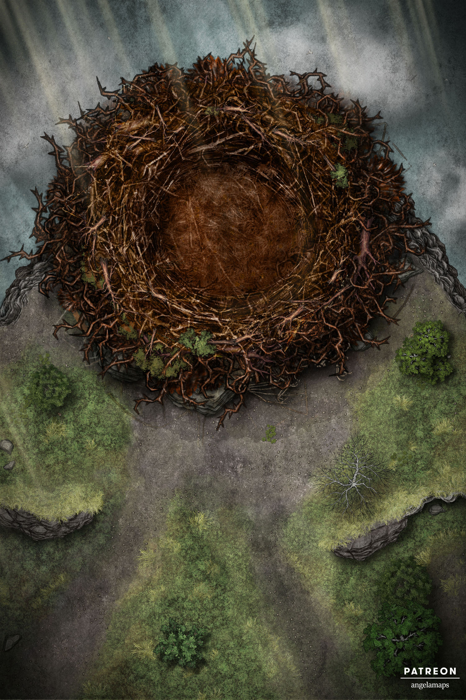
Nido de ave de Rokh
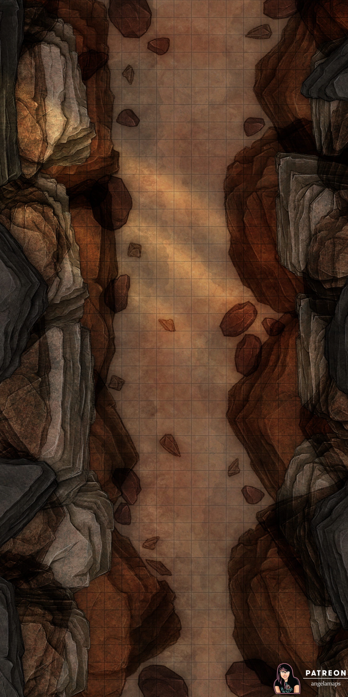
La garganta
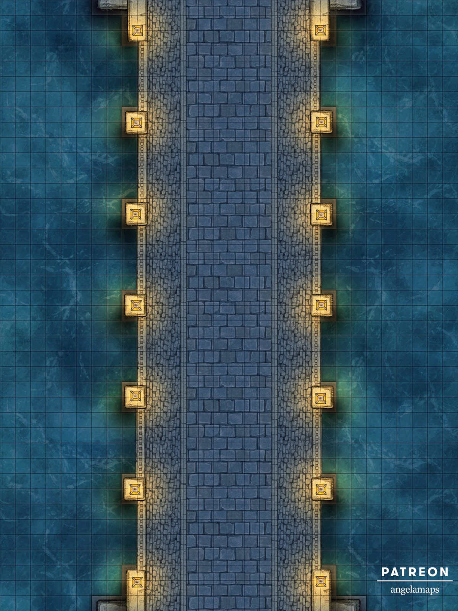
El puente de Bagdad (noche)
Epílogo
Notas del autor
¿Por qué Savage Worlds?
Simplemente, porque me encanta Savage Worlds, es uno de los sistemas genéricos de juegos de rol
con el que más cómodo me siento. Si voy a meterle muchas horas a esta campaña quiero hacerlo con
un RPG que me sea fácil y familiar.
Salud mental
Los trastornos mentales y la salud mental representados en esta ambientación no tratan de ser
realistas, solo tratan de reflejar con las reglas de SWADE el horror y la locura tan característicos de
Lovecraft y cómo estos afectan a las capacidades de los PJs.
Influencias
Toda esta ambientación está muy influenciada por el juego de rol de “La Llamada de Cthulhu”
de Sandy Petersen (Chaosium) y hay mecánicas de ese juego que han influenciado consciente
o inconscientemente en las reglas de este juego.
Veracidad histórica
En esta ambientación no se busca la veracidad histórica, empezando con que sus dos piedras
fundacionales, las 1001 noches y los mitos de Cthulhu son obras de ficción, los detalles y hechos
que se narran en estas páginas no tienen ninguna base científica. Se ha intentado darle una patina
histórica y geográfica, pero en ningún caso buscando el realismo.
Veamos un ejemplo, dos personajes históricos de la ciudad de Bagdad, el califa Harún Al-Raschid y
el sabio Hunayn ibn Ishaq nunca llegaron a conocerse porque cuando el califa murio, el sabio Hunayn
no había nacido todavía. Sin embargo en este mundo comparten época y tienen sus más sus menos.
Inclusión, diversidad y ecología
He tratado de hacer esta ambientación lo más inclusiva y abierta que puedo y es por ello
que estoy seguro de que habré hecho muchas cosas mal. He tratado de que haya diversidad
entre PNJs con todo tipo de opciones de género, raza, etc. y sin definir su orientación
sexual (ver más adelante Romancear PNJs). He tratado de evitar clichés y espero haberlo
hecho, pero sois muy libres de cambiarlo a vuestro gusto.
Está claro que los malos van a ser racistas, machistas, homófobos, etc. vamos lo que se considera
malas personas en general, pero creo que no debéis permitirles estas conductas a vuestros shahriars
ni aunque digan que "su personaje es así" o "era lo normal en esa época". Esto es un juego de rol y
ya hay mucha mierda en la vida real para tener que aguantarla también en una mesa de juego.
Muchas "sugerencias de deseo" están pensadas para premiar a los shahriars por ser más empáticos y
ayudar a grupos discriminados. En ese sentido, bastantes formas extras de recuperar cordura están
asociadas a acciones en favor de colectivos desfavorecidos que van más allá de salvarles la vida.
Muchas veces se premiará devolverles derechos que les han sido robados o mejorar sus condiciones
de vida en general. Como Scheherazade creo que debes tratar de que las decisiones y acciones que
tomen tus jugadores para conseguir esos "premios" sean porque creen que es lo bueno y justo en
nuestra sociedad y no porque es un beneficio para su PJ en el juego.
Nada puede ser inclusivo y abierto si no tiene en cuenta el medio ambiente y la ecología, así que he
tratado de darle una mirada ecologista con varias aventuras en las que la protección de la naturaleza
es importante, además, de recompensas de cordura y sugerencias de deseos.
Así pues, trata de evitar que tus jugadores utilicen muchas veces el camino rápido y tomen decisiones
con grandes repercusiones para el medio ambiente. Puede que emponzoñar el manantial de un oasis para
acabar con el enemigo sea un plan muy bueno, pero sus consecuencias para la fauna y flora local pueden
ser desastrosas, así como para las comunidades que vivan cerca.
Para finalizar, estaré encantado de escuchar cualquier crítica que queráis hacer en este sentido y de
hacer las modificaciones oportunas para corregirlas. He aprendido mucho haciendo esta ambientación y
quiero seguir aprendiendo de vosotros.
Religión
Todo el tema de religión, no solo musulmana, sino también, cristiana, judía o incluso hindú ha sido obviada
en esta ambientación. Eres muy libre de dejar la religión fuera de tu mesa o de meterla, pero eso queda
en tu mano.
Lo que si has de tener en cuenta es que en la mayoría de las historias de las 1001 noches
la religión no es algo fundamental que afecte a la historia ni tan siquiera tangencialmente. Los personajes
son creyentes, alaban el nombre de su dios y siguen sus preceptos, pero nunca se narra que
recen o vayan a la mezquita, iglesia o sinagoga o que respeten su día santo (sobre todo porque en las 1001
noches nunca es ni lunes, ni martes, ...).
La mayoría de las referencias a la religión quedan relegadas a
formulas protocolarias y alabanzas, es por ello que he decidido dejar el tema religioso en esta ambientación
al mismo nivel que le da la obra original; detalles interesantes que dan color y profundidad al mundo,
pero que no afectan a las tramas.
Por último, si vas a meter la religión en tus partidas, recuerda que no deberías usarla como forma de
coartar a tu mesa sobre lo que quiere hacer o como jugar . Tampoco deberías dejar que tus shahriars la usen
como forma de justificar conductas machistas, racistas, homófobas y demás fobos e istas.
¿Puedo hacer con esta ambientación lo quiera?
Sí, puedes. Con referenciarla puedes hacer lo que quieras.
Si te gusta como se tratan los Mitos, olvídate de las 1001 noches y quédate con el sistema
de magia y cordura para tus aventuras en los años 20. O puedes quedarte las 1001 noches y cambiar
los mitos por monstruos de la mitología árabe y persa. Te gusta un objeto o una
maldición, úsalo en tus partidas.
Si algo no me gusta
En esta ambientación se tratan temas que pueden herir sensibilidades, así que mi consejo antes de empezar
a jugar es poner en prácticas estas herramientas de seguridad.
Si algo no te gusta eres libre de cambiarlo o descártarlo, pero hay partes en esta ambientación que
pido encarecidamente en su propio texto que no se cambien.
Romancear PNJs
Las vidas sentimentales y sexuales de la mayoría de los personajes de esta ambientación han sido
dejadas a propósito sin definir para que las adaptes como más te interese. Así, cualquier persona
de tu mesa podrá romancear con cualquier PNJ que encuentres aquí. Recuerda también que en los pocos
casos en se habla de familia, no se especifica a propósito cómo es y quiénes la componen. Móntate
las relaciones sexo-afectivas y familiares que mejor se ajusten a tus gustos y los de tu mesa y
con la que todos os encontréis cómodos.
Participar en el proyecto
Si te gusta el proyecto, quieres participar y sabes de Git, puedes hacerlo a través de
GitHub en este proyecto. Si no estás familiarizado con Git,
pues me mandas un DM en Twitter a @Gwannon y hablamos.
Atribuciones
Imágenes
Estas son las imágenes que por diseño no he podido atribuir correctamente enlazándola correctamente.
Recursos HTML + CSS
Fuentes tipográficas
Documentación
Gracias por su documentación a:
Música para las partidas
Esta es mi selección de música para jugar a 1001 Ghūles. Es casi imposible encontrar música que
pegue con 1001 noches y los mitos de Cthulhu así damos a dar recomendaciones para cada género.
Creo que la música clásica es perfecta para las 1001 noches y de hecho hay varias obras musicales
clásicas basadas en sus cuentos.
Y como siempre esta es mi recomendación para momentos más terroríficos y de suspense.
Mil y Un Ghūles
Mil y Un Ghūles es una ambientación de Savage Worlds Edición
Aventura para poder jugar relatos de horror cósmico dentro los cuentos de las Mil y Una Noches.
Este libro contiene:
- Una ambientación que mezcla los Mitos de Cthulhu con las 1001 noches. Con descripciones
de personas, eventos y lugares a partir de las cuales crear tus propios cuentos salvajes.
- Reglas para crear personajes y enfrentarlos a la locura, a la magia y a los monstruos que
pueblan los cuentos de las 1001 noches y las historias de H. P. Lovecraft.
- Toda una serie de aventuras en formato Plot Points para disfrutar plenamente de esta
ambientación.
Para jugar esta ambientación solo necesitas el Manual Básico de Savage Worlds
Edición Aventura.
ヘ
{kind=link}
{kind=link}
{kind=link}
.jpg){kind=link}
{kind=link}
{kind=link}